Tue, 26 Aug 2025 08:51:12 -0500
このガイドラインは、ID フェデレーションと、それらを実装するためのアサーションの使用に焦点を当てています。フェデレーションを使用すると、特定の資格情報サービス プロバイダーは、個別に管理される多数の証明書利用者に認証属性と (オプションで) サブスクライバ属性を提供できます。同様に、証明書利用者は複数の資格情報サービス プロバイダーを使用する場合があります。これらのガイドラインは、この目的以外の標準の開発または使用を制限することを意図したものではありません。この出版物は、NIST Special Publication (SP) 800-63C に取って代わります。
アサーション;認証;クレデンシャルサービスプロバイダー。デジタル認証;デジタルウォレット;連合;ID プロバイダー。
この出版物および関連する関連書籍 [SP800-63]、[SP800-63A]、および [SP800-63B] は、デジタル ID サービスの実装に関する技術ガイドラインを組織に提供します。
このドキュメントでは、フェデレーション ID システムの ID プロバイダー (IdP) と証明書利用者 (RP) の要件を提供します。フェデレーションにより、特定の IdP は、フェデレーションプロトコルとアサーションを通じて、個別に管理される多数の RP に認証属性と(オプションで)サブスクライバ属性を提供できます。同様に、RP は ID のソースとして複数の IdP を使用できます。
このセクションは有益です。
フェデレーションは、RP がサブスクライバのオーセンティケータを直接検証せずに、証明書利用者 (RP) に対してサブスクライバを認証するプロセスです。ID プロバイダー (IdP) は、[SP800-63A] で定義された加入者アカウントをフェデレーション プロトコルを介して RP で使用できるようにします。IdP は、加入者の認証イベントによってトリガーされたアサーションを RP に送信します。アサーションは、RP へのサブスクライバ アカウントに関する検証可能なステートメントです。RP は、IdP によって提供されるアサーションを検証し、サブスクライバとの認証済みセッションを作成し、サブスクライバに RP の機能へのアクセスを許可します。
IdP は、次の 2 つのモードのいずれかで動作します。
フェデレーション プロセスにより、加入者は、各 RP で個別のオーセンティケータを保持または維持することなく、複数の RP からサービスを取得できます。このプロセスは、シングルサインオンと呼ばれることもあります。フェデレーション プロセスは、RP と加入者アカウントが共通のセキュリティ ドメインで一緒に管理されていない場合にも、加入者が管理する追加の認証子を RP が発行する必要がないため、一般的に認証への推奨アプローチです。それでも、フェデレーションは単一のセキュリティ ドメイン内で適用でき、一元化されたアカウント管理や技術統合など、さまざまな利点が得られます。
フェデレーションプロセスは、実施されている信頼契約を促進するためのフェデレーション機関や、プロトコル接続を促進するためのフェデレーションプロキシなど、他の役割で行動する追加の関係者によって促進できます。
このガイドラインでは、テキストで次のタイポグラフィ規則を使用します。
これらのガイドラインでは、アサーション、属性バンドル、およびフェデレーション プロトコルのその他の要素は、非対称デジタル署名または対称メッセージ認証コード(MAC)によって検証されます。非対称暗号化または対称暗号化のいずれかが特に必要な場合、対称署名や非対称署名など、要件を示すために署名と署名という用語が適切に修飾されます。いずれかのオプションが可能な場合は、署名と署名という用語が修飾子なしで使用されます。
対称署名と非対称署名の両方で、署名の作成に使用されるキーは署名キーと呼ばれます。非対称暗号化では、署名キーは暗号化キー ペアの秘密キーを参照します。同様に、署名の検証に使用されるキーは、検証キーと呼ばれます。非対称暗号化の場合、検証キーは暗号化キー ペアの公開キーを参照します。対称暗号化では、対称キーは署名キーと検証キーの両方です。
対称暗号化と非対称暗号化の両方で、ペイロードの暗号化に使用されるキーは暗号化キーと呼ばれます。非対称暗号化では、暗号化キーは暗号化キー ペアの公開キーを参照し、ペイロードを暗号化する対称キーをカプセル化するために使用されます。同様に、暗号化されたペイロードの復号化に使用されるキーは、復号化キーと呼ばれます。非対称暗号化では、復号化キーは暗号化キーペアの秘密キーを参照します。対称暗号化では、対称鍵は暗号化鍵と復号化鍵の両方です。
一部の暗号化プロセスでは、公開鍵と秘密鍵のペアを使用して、実際に使用する共有鍵を派生させるなど、複数の鍵を組み合わせて使用します。特に指定がない限り、これらのガイドラインは、フェデレーションプロトコルに参加する当事者によって知られている、または転送された最初のキーマテリアルに焦点を当てており、それらのキーから派生した暗号化マテリアルには焦点が当てられていません。
\clearpage
この文書は次のように構成されています。各セクションには、規範的 (つまり、コンプライアンスのために必須) または有益 (つまり、必須ではない) のいずれかとしてラベル付けされています。
このセクションは規範的です。
このセクションでは、フェデレーション保証レベル (FAL) と、各 FAL でフェデレーション トランザクションを保護するための要件を定義します。特定の FAL の要件を満たすために、フェデレーション トランザクションは、その FAL にリストされているすべての要件を満たすか、それを超えるものとします。
各 FAL は、FAL の増加に応じてセキュリティを強化する一連の要件によって特徴付けられます。これらの要件は、ここにリストされ、このドキュメントの他のセクションで拡張されています。
RPは、攻撃者がフェデレーテッド・トランザクションを完了し、偽造、キャプチャ、または変更されたアサーションで認証されたセッションを開始することから強力に保護されています(第3.11.1項を参照)。
表 1 は、各 FAL の要件の非規範的な要約を示しています。連続する各レベルは、下位レベルのすべての要件を包含し、満たします(たとえば、FAL3はこれらの下位レベルの要件をすべて満たすため、FAL3でのフェデレーションプロセスはFAL2またはFAL1で受け入れることができます)。表 1 にない組み合わせも可能であり、政府機関は、特定の FAL で 1 つ以上の要件領域でより強力な保護を実装することを選択できます。
| 要件 | ファル1 | FAL2 | FAL3 |
|---|---|---|---|
| オーディエンス制限 | アサーションごとに複数の RP が許可されます。アサーションごとに単一の RP を推奨 | アサーションごとに単一の RP | アサーションごとに単一の RP |
| リプレイ保護 | RPごとに必要 | 必須 | 必須 |
| アサーション・インジェクション保護 | すべてのトランザクションに推奨 | 必須;トランザクションは RP で開始されます | 必須;トランザクションは RP で開始されます |
| 信託契約の成立 | 加入者主導または事前確立 | 事前設定済み | 事前設定済み |
| 識別子とキーの確立 | 動的または手動 | 動的または手動 | 手動 |
| プレゼンテーション | ベアラーアサーション | ベアラーアサーション | キー所有者アサーションまたはバインドされたオーセンティケーター |
さまざまなフェデレーション実装オプションが可能ですが、FAL は、ますます安全な展開オプションを表す明確なガイダンスを提供することを目的としています。最適なFALの選び方については、[SP800-63]を参照してください。
信託契約または連合取引によってFALが指定されていない場合でも、このセクションの要件が適用されます。
すべてのFALにおいて、すべてのフェデレーショントランザクションは、RPにアサーションを配信し、RPで認証されたセッションを作成するために、第3条の要件に準拠するものとする(MUST)。フェデレーション プロトコルで使用されるアサーションの例としては、OpenID Connect [OIDC] の ID トークンや Security Assertion Markup Language (SAML) アサーション形式などがあります。
すべての FAL において、RP は IdP を信頼して加入者の認証イベントを表す有効なアサーションを提供する必要があるため、RP は IdP からのアサーションを検証するものとします (SHALL SHOULD)。
連盟のすべての当事者は、第 3.11 条で説明されているように、セキュリティ管理を採用するものとします。
IdP または RP は、ユースケースとニーズに応じて、複数の FAL で同時に動作させることができます。たとえば、IdP は、一連のリスクの高い機能へのアクセスを提供する RP に FAL3 でのフェデレーション トランザクションを提供すると同時に、リスク プロファイルの低い RP に FAL2 を提供することができます。同様に、RP では、通常のアクションには FAL2 が必要になりますが、RP での影響が大きいアクションや機密性の高いアクションを実行するには、加入者が FAL3 フェデレーション トランザクションを正常に完了する必要があります。IdP は、任意の IAL で証明された加入者アカウントに同時にアクセスし、任意の AAL で認証を許可できるため、この機能は他の次元にも拡張されます。その IdP と通信する RP には、通常、アクセスを受け入れる最低の IAL と AAL に制限があります。その結果、さまざまなユースケースで許可および必要なxALを確立するには、信頼契約が必要です(セクション2.5を参照)。
FAL1 は、フェデレーション トランザクションの基本的なレベルの保護を提供し、幅広いユースケースとデプロイメントの決定を可能にします。
FAL1 では、フェデレーションプロトコルは、セクション 3.11.1 で説明されているように、アサーションインジェクション保護を適用すべきです(SHOULD)。フェデレーション トランザクションは RP によって開始されるべきです (SHOULD)。
FAL1 では、IdP は承認された暗号化を使用してアサーションに署名するものとします (SHALL )。RPは、予想されるIdPに関連付けられた検証キーを使用して署名を検証するものとします(SHALL SHOULD)。シグネチャは、アサーションの内容の整合性を保護し、IdP をアサーションのソースとして検証できるようにします。
FAL1 では、アサーションは特定の RP または RP のセットにオーディエンス制限されるものとし、RP は、それが特定のアサーションのターゲット RP の 1 つであることを検証するものとします (SHOULD)。オーディエンスの各 RP は、同じアサーションが特定の RP によって複数回受け入れられないようにするために、アサーションにリプレイ保護メカニズムを適用するものとします (SHALL SHOULD)。複数のオーディエンスを持つアサーションは、複数の RP によって受け入れられますが、各 RP によって 1 回しか受け入れられません。
FAL1 では、フェデレーション識別子には、ユーザー名、メールアドレス、従業員番号などのプレーンテキストの個人情報を含めるべきではありません。
FAL1 では、信託契約は、第 4.3.2 節で説明されているように、フェデレーション取引中に加入者によって確立される可能性があります。あるいは、信託契約は、第4.3.1条で説明されているように、連盟取引(すなわち、「事前に確立された」信託契約)の前に確立されてもよい(MAY)。
FAL2 は、フェデレーテッド トランザクションにアサーションを挿入する試みなど、フェデレーテッド システムに対するさまざまな攻撃に対する追加の保護を要求することで、フェデレーション トランザクションに高レベルの保護を提供します。FAL1 のすべての要件は、ここでより具体的または厳格な要件によって上書きされる場合を除き、FAL2 に適用されます。
FAL2 では、Sec. 3.11.1 で説明されているように、アサーションはアサーション インジェクション攻撃から強力に保護されるものとします (SHOULD)。フェデレーション トランザクションは、RP によって開始されるものとします (SHALL )。
FAL2 では、アサーションは 1 つの RP に限定されたオーディエンスであるものとします (SHALL SHOULD)。RPは、アサーションでリプレイ保護メカニズムを強制するものとする(SHOULD)。
FAL2 では、フェデレーション識別子には、ユーザー名、電子メール アドレス、従業員番号などの平文の個人情報が含まれてはなりません。
FAL2では、第4.3.1条で説明されているように、連盟取引が行われる前に信託契約(すなわち、「事前に確立された」信託契約)が確立されるものとします。
FAL2 以上のアサーションを提示する連邦政府機関によって、または連邦政府機関に代わって運営される IdP は、[FIPS140] レベル 1 以上で検証されたメカニズムを使用して、アサーションの生成に使用される署名鍵を保護するものとします (SHOULD)。
FAL3 は、フェデレーション トランザクションに対して非常に高いレベルの保護を提供し、フェデレーション トランザクションで通信される情報が CSP および IdP によって確立された情報と一致するという非常に高い信頼性を確立します。また、FAL3 は、RP で加入者による追加の認証を要求することで、IdP が侵害される可能性から保護します。FAL1 および FAL2 のすべての要件は、ここでより具体的または厳格な要件によって上書きされる場合を除き、FAL3 に適用されます。
FAL3 では、RP は、サブスクライバがアサーションに加えてオーセンティケータを制御していることを検証するものとします (SHOULD)。このオーセンティケーターは、キー所有者アサーション (セクション 3.15 を参照) で識別されるか、バインドされたオーセンティケーター (セクション 3.16 を参照) のいずれかです。
FAL3 では、第 4.3.1 節で説明されているように、フェデレーション取引が行われる前に信託契約 (つまり、「事前に確立された」信託契約) が確立されるものとします。
FAL3 では、CSP、IdP、RP の識別子は手動で確立されるものとします (SHOULD)。各識別子は、代表される当事者の検証キーに一意に関連付けられるものとします(SHOULD)。検証キーは、信頼契約に示されているように、手動または自動の信頼できるメカニズムを介して送信されるものとします(SHOULD)。 たとえば、RP を表す公開鍵証明書は、手動登録プロセス中に IdP にアップロードされます。RP は、IdP の公開鍵のダウンロードに使用できる URL を使用して手動で設定されます。または、IdP と RP がそれぞれそれぞれの公開鍵をフェデレーション機関にアップロードし、同じ場所から互いの鍵をダウンロードすることもできます。加入者制御ウォレットの場合、RP は CSP の公開鍵を表す URL を使用して手動で設定できます。RP はこの公開鍵を取得し、それを使用して、加入者制御ウォレットによって提示される属性バンドルの署名を検証します。キーの確立、管理、ローテーション、失効、および識別子との関連付けの詳細については、セクション 3.6 を参照してください。
IdP は、さまざまなフェデレーション パラメータを使用して、さまざまなオーセンティケータを使用して、さまざまなサブスクライバの ID をアサートできるため、IAL、AAL、および FAL は、同じ RP であっても、異なるフェデレーション トランザクション間で異なる可能性があります。
IdP は、信頼契約の一部として許容される最小限の xAL のセットを指定する RP のメカニズムを支持するものとし、フェデレーション トランザクションの一部として実行時により厳密な最小セットを指定する RP をサポートするべきです (SHOULD)。RP が特定の xAL を要求した場合、IdP は可能であればその要求を満たすべきである (SHOULD)、または RP の要求された xAL を満たすことができない場合は要求を失敗させるべきである (SHOULD)。IdP は、要求が満たされていなくても、常にアサーションで結果の xAL を示すものとします (SHALL )。たとえば、加入者に AAL1 で認証されたアクティブなセッションがあり、RP が AAL2 を要求した場合、IdP は、可能であれば、加入者が IdP で対話している間に IdP でのセッションのセキュリティを強化するために、加入者に AAL2 認証を求める必要があります。IdP は、AAL1 (つまり、ステップアップ認証要求が満たされなかった) または AAL2 (つまり、ステップアップ認証要求が正常に満たされた) であるかどうかにかかわらず、返されたアサーションの一部として結果の AAL を送信します。
IdP は、各フェデレーション トランザクションについて次の情報を RP に通知するものとします (SHOULD)。
RPは、信託契約の条件(第3.5条を参照)とアサーションに含まれる情報(第4.9条および第5.8条を参照)の組み合わせからこのxAL情報を取得します。IdPとRP間のすべてのメッセージでxALが変更されない場合(例えば、すべての加入者が同じIALでID証明され、同じオーセンティケータータイプを使用するエンタープライズシナリオ)、xAL情報は、IdPとRPの間の信頼契約の条件に含まれるものとします(SHOULD)。xAL が信頼契約で指定された可能な値の範囲内にある可能性がある場合、RP が xAL を決定できるように、アサーションの内容の一部として十分な情報を含めるものとします。
IdP は、特定のフェデレーション トランザクションについて IAL または AAL に対してクレームが行われないことを示しても構いません (MAY)。このような場合、RP によって結果の xAL にデフォルト値は割り当てられません。つまり、信頼契約またはアサーションのいずれかに IAL 宣言がないフェデレーション トランザクションは、機能的に "IAM なし" と見なされ、RP は、アカウントが "IAL1 (このスイートで説明されている最小番号の IAL) を満たしていると想定できません。
RP は、提供された機能へのアクセスに対して受け入れる意思のある最小 IAL、AAL、および FAL を決定し、保護されたリソースへのアクセスを許可する前に、これらの xAL が満たされていることを確認するためにすべての IdP アサーションを評価するものとします。IdP応答が要求されたパラメータを満たさない場合、RPは、これらの要求に対処するためのメカニズムを有するものとする(例えば、要求を拒否するか、またはユーザーを例外処理プロセスにルーティングする)。RP は、特定のフェデレーション認証の IAL、AAL、および FAL に基づいて、その機能を変えても構いません。たとえば、RP は、一般的な機能 (例えば、ダムシステムのステータスの表示) のために AAL2 で認証されたフェデレーショントランザクションを許可することができますが、よりリスクの高い機能 (例えば、ダムシステムの流量の変更) には AAL3 を使用する必要があります。同様に、RP は、リスクの高い機能 (機密情報へのアクセスなど) を IAL2 で ID 証明された特定の加入者アカウントのみに制限し、IAL に関係なく、すべての加入者アカウントに基本的な機能を許可することができます。
フェデレーション プロセスでは、RP は、CSP によって IdP に提供されたサブスクライバ アカウントの詳細に直接アクセスできず、その詳細によってサブスクライバ アカウントの IAL が決まります。また、RP は IdP での認証イベントやアクティベーション イベントに参加しないため、RP は AAL を判別できません。RP は、FAL を決定するフェデレーション トランザクションの多くの側面を確認しますが、IdP が意図したフェデレーション トランザクションの FAL を RP に通知するなど、FAL に関連する独自の責任もあります。したがって、IdP は、各フェデレーション トランザクションの IAL、AAL、および IdP が意図する FAL を決定するのに十分な情報を RP に提供するものとします (SHOULD)。これは、アサーション、信託契約の事前の取り決め、または両方の組み合わせで行うことができます。
RPは、トランザクションで宣言されたFALのフェデレーショントランザクションにおける義務を果たすことを保証するものとします(MUST)。たとえば、RP は、プレゼンテーション方法が FAL2 以降のアサーション インジェクション保護要件を満たしていること、および適切なキー所有者の証明またはバインドされた認証子が FAL3 で提示されていることを確認する必要があります。
このセクションは規範的です。
フェデレーション トランザクションを使用すると、加入者は IdP に認識されている加入者アカウントに基づいて RP との認証済みセッションを確立できます。フェデレーション・トランザクションは、認証されたセッションに関連付けられた一連の ID 属性を RP に提供することもできます。認証されたセッションは、次のようなユースケースをサポートするアクティビティにRPによって使用できます。
フェデレーション トランザクションには、微妙なセキュリティとプライバシーの特性を備えた比較的複雑なマルチパーティ プロトコルが必要です。特定のフェデレーションプロトコル、プロファイル、またはデプロイ構造を評価する場合、多くの場合、それをコンポーネント関係に分割し、それぞれのニーズを評価することが有益です。
さらに、加入者は多くの場合、ユーザーエージェント(Webブラウザなど)を介してCSP、IdP、およびRPと対話し、その結果、フェデレーションプロセスに関与します。これらのガイドライン全体で説明されている加入者のアクションは、オプションでユーザーエージェントを介して実行できますが、ユーザーエージェントは、すべてのタイプのアプリケーションおよびインタラクション(ネイティブアプリケーションなど)に必要ではありません。必要に応じて、ユーザーエージェントの要件が直接呼び出されます。
フェデレーションプロトコルの各当事者は、フェデレーションシステムが意図したとおりに機能するために満たす必要がある特定の責任と期待を負います。
フェデレーション・トランザクションは、次の 3 つの個別の要素で構成されますが、関連する要素です。
フェデレーションプロセスを完了するには、これらの要素をすべて満たす必要があります。それが行われる正確な順序と、どの関係者がどのステップに関与するかは、展開モデル、プロトコルの選択、およびその他の要因によって異なります。
これらのガイドラインは、汎用 IdP と加入者制御ウォレットの 2 つのフェデレーション モデルの要件を提供します。加入者制御のウォレットは、加入者によって制御されるデバイス、または加入者に代わって操作されるリモートホストシステムでホストできます。モデルは一般に、サブスクライバー アカウントの内容をフェデレーション システムで使用できるようにする方法によって区別されます。汎用 IdP では、サブスクライバー アカウントの全部または一部は、通常サブスクライバーが関与しないアクションを通じて CSP によって使用可能になります。サブスクライバー制御ウォレットでは、サブスクライバーアカウントは、属性バンドルの発行を通じてCSPによって利用可能になります。
組織がホストするマルチアカウント ID プロバイダーなど、汎用 IdP に固有の要件については、セクション 4 で説明します。オンデバイスデジタルウォレットソフトウェアやクラウドホストウォレットプロバイダーなど、加入者が管理するウォレットに固有の要件については、セクション5で説明します。セクション 3 の一般要件を含む他のすべての要件は、特に指定がない限り、両方のモデルに適用されます。フェデレーションシステムのさまざまなモデルは、さまざまな方法で信頼と情報の要件を満たします。
表 2 は、フェデレーテッド システムのさまざまなモデルに対する要件の非規範的なリストを示し、IdP からのアサーションまたは CSP からの属性バンドルのいずれかでコア情報が伝達される場所を示しています。フェデレーション実装に両方のモデルの側面がある場合は、問題のセクションの関連部分が適用されます。
| 要件 | 場所 | 汎用 IdP | 加入者管理のウォレット |
|---|---|---|---|
| IdP 発行者識別子 | 主張 | 必須 | 随意 |
| IdP 発行者識別子 | 属性バンドル | 随意 | 随意 |
| IdP 検証キー | 属性バンドル | 随意 | 必須 |
| サブジェクト識別子 | 主張 | 必須 | 随意 |
| サブジェクト識別子 | 属性バンドル | 随意 | エフェメラルプロビジョニングまたはアカウント解決が使用されていない限り必須 |
| CSP 発行者識別子 | 属性バンドル | 必須 | 必須 |
CSP は、サブスクライバから属性を収集して検証し、サブスクライバ アカウントに保存します。また、CSP は 1 つ以上のオーセンティケーターをサブスクライバー アカウントにバインドし、サブスクライバーがオーセンティケーターを検証できるシステムに対して直接認証できるようにします。
CSP は、フェデレーション トランザクションで使用するために、属性、派生属性値、または属性バンドルを IdP に提供します。特に、CSPは、Sec.5.1で説明されているように、署名付き属性バンドルを加入者制御のウォレットに発行して、ウォレットがフェデレーションプロセスでIdPとして機能できるようにします。
IdP は、加入者アカウント(CSP によって確立された)と加入者がアクセスしている RP との間にブリッジを提供します。IdP は、複数の加入者アカウントのサービスとして、または加入者のデバイス上の加入者制御ウォレットなど、単一の加入者によって制御されるコンポーネントとして展開できます。
IdPは、オーセンティケーターの検証(汎用IdPの場合)またはアクティベーションファクターの提示(加入者制御ウォレットの場合)を通じて、加入者との認証イベントを確立します。IdP は、認証イベントを表すアサーションを作成します。
IdP は、CSP からサブスクライバー アカウントを、以下を含むがこれらに限定されないフェデレーション固有の項目で拡張します。
IdPは、アサーション内またはID APIを介して、サブスクライバーのID属性を利用できるようにします(セクション3.12.3を参照)。
一部のシステムでは、これはオファリングパーティ (OP) とも呼ばれます。
RP は IdP からのアサーションを処理し、加入者がアクセスしようとしているサービスを提供します。直接認証モデルとは異なり、RP は加入者アカウントに関連付けられているオーセンティケータに検証者機能を提供しません。
ID 属性は、アサーションまたは ID API を介して、フェデレーション プロセスを通じて RP で使用できるようにすることができます (セクション 3.12.3 を参照)。これらの属性は、属性ベースのアクセス制御 (ABAC) のアクセス権限の決定や、トランザクションの促進 (配送先住所の提供など) によく使用されます。承認とアクセス制御の詳細は、これらのガイドラインの範囲外です。アサーションに必要な属性の要件は、セクション4.9およびセクション5.8に記載されています。
これらの属性を保持および管理するために、RP は多くの場合、サブスクライバを表す RP サブスクライバ アカウントを維持します。RP サブスクライバ アカウントには、セクション 3.8 で説明されているように、RP 自体にローカルな情報が含まれています。
一部のシステムでは、これはサービス プロバイダー (SP) とも呼ばれます。
フェデレーショントランザクションの条件を定義する信頼契約(セクション3.5を参照)は、RPとIdPが相互に接続するためのペアワイズ契約を締結したり、加入者がIdPからRPとIDを共有することを決定したりするなど、関係者によって直接確立および管理できます。他の状況では、信頼契約は、フェデレーション機関と呼ばれる専用のパーティを通じて管理できます。連邦当局は、信託契約内でさまざまな役割と機能を果たす当事者のオンボーディングと管理を容易にします。連邦当局の機能は、契約の当事者がペアごとの信頼の決定を行うことなく、契約の当事者が相互に信頼するための基礎を提供します。
たとえば、フェデレーション機関によって管理される信頼契約に参加する RP は、そのフェデレーション機関によって承認された IdP がその目的に適していると判断できます。または、RP は、RP の特定のアプリケーションのニーズに基づいて、フェデレーション機関によって承認された IdP のサブセットを選択することもできます。RP が参加したときに特定の IdP がマネージド信頼アグリーメントの一部でなかった場合、RP は新しく追加された IdP を信頼することで、フェデレーション機関の継続的な管理の恩恵を受けることができます。連邦当局は、第 3.5.2 節で説明されているように、多国間信託協定で使用されます。
信託契約の権限のある当事者は、加入者属性のリリースを含む、信託契約の対象となる特定のリリース決定に責任を負う組織、個人、またはエンティティです。信託契約には、予想される権限のある当事者が誰であるか、および要求が自動的に許可されるか、自動的に拒否されるか、または個人からの実行時の決定を必要とするパラメーターが規定されています。一般向けのシナリオでは、承認されたパーティがサブスクライバーになることが期待されます。属性の解放に対する加入者の同意は、多くの場合、フェデレーション トランザクション中の明示的な同意プロセスを通じて収集されます (セクション 4.6.1.3 を参照)。
エンタープライズ シナリオでは、承認されたパーティが組織であることが期待されます。属性のリリースへの同意は、すべての加入者に代わって組織によって決定され、この同意は許可リスト (セクション 4.6.1.1 を参照) によって表され、加入者による直接の決定や関与なしに ID 属性の開示を可能にします。
さまざまな権限のある当事者の例は、セクション9.10にあります。
一部のアーキテクチャでは、IdP と RP は相互に直接通信しません。フェデレーションプロキシは、フェデレーションプロトコル内のすべての通信について、IdPとRPの間の仲介者として機能します。プロキシは、図1に示すように、上流側ではRP、下流側ではIdPとして機能します。プロキシを介して通信する場合、アップストリーム IdP とダウンストリーム RP は標準のフェデレーション プロトコルを使用してプロキシと通信し、加入者は 2 つの個別のフェデレーション トランザクションに参加します。その結果、IdP と RP に適用されるすべての規範的要件は、それぞれの側でそれぞれの役割を持つ代理人に適用されるものとします (MUST)。さらに、プロキシは、チェーンシナリオでダウンストリームプロキシへのアップストリーム IdP として機能できます。
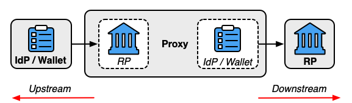
プロキシの役割は、フェデレーションプロトコルに限定されます。上流の IdP と下流の RP 間の信頼契約の確立または促進には関与しません。同じ当事者がフェデレーション機関とプロキシを運用してフェデレーショントランザクションを容易にすることはできますが、プロキシ機能は、信頼契約の管理におけるフェデレーション機関の役割とは別のものです。フェデレーションシステムの他のメンバーと同様に、プロキシは、アップストリームおよびダウンストリームの各コンポーネントと個別の信頼契約に関与することも、多国間契約など、単一の信頼契約をすべての当事者に適用することもできます。
ダウンストリーム RP は、他の IdP からのアサーションと同様に、プロキシによって生成されたアサーションを受信して検証します。このアサーションは、プロキシーがアップストリーム IdP から受信するアサーションに基づいています。アップストリーム IdP からのアサーションの内容は、プロキシで使用されるメソッドに応じて、いくつかの方法で処理できます。
プロキシからのアサーションのフェデレーション識別子(第3.4条を参照)は、プロキシをアサーションの発行者として示すものとする(SHOULD)。
プロキシされたフェデレーション モデルには、いくつかの利点があります。フェデレーション プロキシは、統合のための共通インターフェイスを提供し、フェデレーション プロトコル、形式、スキーマ間の変換を提供することで、RP と IdP 間の技術的統合を簡素化できます。さらに、プロキシが RP と IdP を相互に効果的に盲目にする限り、加入者リストを相互に保護したい組織にある程度のビジネス機密性を提供できます。プロキシは、第 3.10 条に記載されているプライバシー リスクの一部を軽減することもできますが、加入者情報の処理には追加の当事者が関与するようになったため、プロキシの使用から他のリスクが生じます。たとえば、攻撃者がプロキシを侵害できる場合、その情報はすべてプロキシを経由するため、攻撃者は加入者の属性やアクティビティにアクセスするために IdP または RP を直接標的にする必要はありません。さらに、プロキシは、当事者間のフェデレーショントランザクションを仲介し、加入者アカウントを接続のどちらかの側にバインドするため、プロキシは、IdPとRPが実行できる以上の追加のプロファイリング(つまり、加入者がどのRPでどのIDを使用しているかに関する情報の集計)をサブスクライバに実行できます。
盲検化技術、その使用法、および制限の詳細については、セクション 7.5 を参照してください。
プロキシとダウンストリーム RP 間の接続の FAL は、パス全体に沿って最も低い FAL と見なされ、プロキシはこれをダウンストリーム RP に正確に表すものとします (SHOULD)。たとえば、アップストリーム IdP とプロキシ間の接続が FAL1 であり、プロキシとダウンストリーム RP 間の接続が FAL2 の要件を満たしている場合、プロキシとダウンストリーム RP 間の接続は引き続き FAL1 と見なされます。同様に、アップストリーム IdP とプロキシ間の接続が FAL2 で、プロキシとダウンストリーム RP 間の接続が FAL1 のみの場合、プロキシを介した全体的な接続は FAL1 と見なされます。
加入者制御のウォレットは、プロキシとして機能する可能性があります。そのためには、ウォレットソフトウェアが他のプロキシと同様に外部IdPのRPとして機能し、それらの属性をダウンストリームRPに提供する必要があります。
一部のシステムでは、プロキシはブローカーと呼ばれます。
フェデレーション トランザクションの役割はさまざまな方法で接続できますが、これらのガイドラインではいくつかの一般的なパターンが想定されます。予想される信頼契約構造とコンポーネント間の接続は、使用されているパターンによって異なります。
さまざまな役割と機能は、相互に統合する個別の当事者によって果たすことができます。たとえば、CSP は、CSP と同じ関係者または組織によって運用されていない IdP にサブスクライバー アカウントの属性を提供できます。
また、1 つの当事者が特定の連邦契約内で複数の役割を果たすこともできます。たとえば、CSP が ID サービスの一部として IdP を提供する場合、CSP は加入者アカウントの確立プロセスの一部として IdP で加入者アカウントをプロビジョニングできます。同様に、RP は IdP と同じセキュリティおよび管理ドメインに存在しつつも、フェデレーション テクノロジを使用して接続し、技術、展開、およびアカウント管理の利点を得ることができます。
フェデレーション機関やプロキシなど、フェデレーションシステム全体の他の機能についても同じことが言えます。役割は似ているように見えるかもしれませんが、基本的には異なるものであり、接続する必要はありません。フェデレーション機関は当事者間の信頼契約の確立を容易にし、プロキシはフェデレーションプロトコルの接続を容易にします。同じエンティティがシステム内のフェデレーション権限とプロキシ機能の両方を果たすことができ、IdP と RP の間に信頼契約と技術的接続の両方を確立する手段を提供します。
加入者は、アサーション内の情報によってフェデレーション トランザクションで識別され、これにより RP はアサーションを RP 加入者アカウントに関連付けることができます。この識別は、アカウント解決プロセス(セクション3.8.2を参照)またはフェデレーション識別子を介して行うことができます。
汎用 IdP の場合、フェデレーテッド ID は、サブスクライバ アカウントを表すサブジェクト ID と IdP を表す発行者 ID の論理的な組み合わせです。サブジェクト識別子は IdP によって割り当てられ、発行者識別子は通常、設定を通じて IdP に割り当てられます。
加入者制御ウォレットの場合、フェデレーテッド識別子は、加入者アカウントを表す加入者識別子と、属性バンドルを発行した CSP を表す発行者識別子の論理的な組み合わせです。サブジェクト識別子は CSP によって割り当てられ、発行者識別子は通常、構成を通じて CSP に割り当てられます。ただし、たとえば、通常、運転免許証番号と運転免許証の発行者を使用してアカウント解決が行われるモバイル運転免許証の場合、これらは常に利用できるとは限りません。このようなパターンについては、セクション 3.8.2 で対処します。
異なる IdP がサブジェクト ID を個別に管理し、異なるサブジェクトのサブジェクト ID の選択で競合する可能性があるため、マルチパート フェデレーション ID パターンが必要です。したがって、RP は、サブジェクト ID を発行した IdP を考慮せずにサブジェクト ID を処理しないことが不可欠です。ほとんどのユースケースでは、フェデレーション識別子は複数のセッションにわたってサブスクライバーに対して安定しており、使用されるオーセンティケーターとは無関係であるため、RP は複数の認証されたセッションとアカウントの変更にわたってサブスクライバーを確実に識別できます。ただし、RP でのフェデレーテッド ID とそれに関連する使用を一時的にして、プライバシーを強化することもできます。フェデレーション識別子とその構成要素は、ユーザー名やその他の人間向け識別子とは異なり、機械で読み取り可能であり、サブスクライバーによって管理されたり、サブスクライバーに公開されたりすることはありません。
フェデレーテッド識別子が使用される場合、フェデレーテッド識別子は、そのサブスクライバに固有であるものとします(SHOULD)。 フェデレーション識別子は、RP の 1 つの加入者に関連付けられるものとします (SHOULD)。
フェデレーション識別子には、ユーザー名、電子メールアドレス、従業員番号などのプレーンテキストの個人情報が含まれていないことをお勧めします。この制限は、FAL2 以上での要件です。フェデレーションプロセスがアカウント解決を使用する場合(セクション3.8.2を参照)、RPサブスクライバアカウントは、フェデレーション識別子を使用せずにRPによって解決できます。
フェデレーテッド ID は論理的な概念であり、通常、サブジェクト ID および発行者 ID とは異なる明示的な値ではありません。代わりに、フェデレーテッド識別子は、サブスクライバーが一意に区別され、異なる IdP によって提供されるサブジェクト識別子間に競合がないことを保証するために必要な情報で構成されます。
状況によっては、共通のサブジェクト識別子を使用して、加入者アカウントが複数のRPで容易にリンクされないようにすることが望ましい。ペアワイズ仮名識別子(PPI)を使用すると、IdP は 1 つの加入者アカウントに対して複数の異なるフェデレーション識別子を異なる RP に提供できます。PPI を使用すると、異なる RP が共謀して、フェデレーテッド識別子を使用して加入者を追跡するのを防ぎます。
RPに対してIdPによって生成されたアサーション内でペアワイズ仮名識別子を使用する場合、IdPは、RPごとに異なるフェデレーテッド識別子を生成するもの(Shall shall shall the set of RP (Sec. 3.4.1.2 参照)または RP のセット (Sec. 3.4.1.3 参照)。
名前、住所、電話番号、電子メール アドレスなどの一部の ID 属性を使用して、フェデレーション トランザクションの外部でサブスクライバーを識別できます。PPI をこれらの種類の識別属性と一緒に使用しても、複数の共謀 RP がシステム間の相関関係によって加入者を再識別できる可能性があります。たとえば、2 つの独立した RP がそれぞれ異なる PPI で識別される同じ加入者を認識した場合、RP は、それぞれのアサーションで PPI と一緒に運ばれる名前、電子メール アドレス、物理アドレス、またはその他の識別属性を比較することで、加入者が同一人物であると判断できます。PPIが識別属性とともに使用される場合、RPは、適用される法的および規制上の要件と一致する加入者データの相関関係を防止するためのプライバシーポリシー、プロセス、および手順を確立するものとします。
プロキシされたフェデレーションモデル(セクション3.3.3を参照)では、プロキシが加入者によってどのRPにアクセスしているかをIdPが認識できない可能性があるため、アップストリームIdPはダウンストリームRPのPPIを生成できない可能性があります。このような状況では、PPI は通常、IdP とフェデレーション プロキシーの間に確立されます。プロキシは IdP として機能し、ダウンストリーム RP に PPI を提供できます。プロトコルによっては、フェデレーション プロキシは、ID プロトコルを機能させるために、アップストリーム IdP の関連識別子に PPI をマッピングし直す必要がある場合があります。このような場合、プロキシは、異なる RP で同じ加入者を表す PPI を追跡および決定できます。PPIの他の識別子へのマッピングは、加入者情報と見なされ、第3.10.1条の要件に従って扱われるものとします(SHOULD)。
PPIには、加入者に関する識別情報(ユーザー名、電子メールアドレス、従業員番号など)が含まれていないものとします。PPIは、加入者に関する情報にアクセスできる当事者が推測することを困難にし、攻撃者が推測できないほどの十分なエントロピーを提供するものとする(MUST)。PPIは、ランダムに生成され、IdPによって加入者に割り当てられるか、または、導出が不可逆的で推測不可能な方法で行われる場合(例えば、[SP800-131A]で説明されているように、秘密鍵を持つキー付きハッシュ関数を使用する)。
PPIが信託契約によって共有されていると指定されていない限り、PPIは単一のRPにのみ開示されるものとします。
以下の基準がすべて満たされている場合、同じ共有PPIを特定のRPセットに使用するものとします(SHALL SHOULD)。
RPは、共有PPIの要求に関連するプライバシーリスクを考慮して、プライバシーリスク評価を実施するものとします(SHOULD)。プライバシーに関するその他の考慮事項については、セクション7.2を参照してください。
IdP は、意図された RP のみがセットに含まれることを保証するものとします (SHOULD)。そうしないと、不正な RP が、そのセットの一部として詐欺的に偽装することで、一連の RP の共有 PPI を学習する可能性があります。
[OIDC] のセクター識別子機能は、RP のグループの共有 PPI を計算するメカニズムを提供します。このプロトコルでは、RP の識別子はすべて、認証された保護チャネルを介して IdP によってフェッチできる URL に一覧表示されます。共有 PPI は、セクター識別子 URL とアルゴリズムへの他の入力を考慮して計算され、セクター識別子 URL のコンテンツにリストされているすべての RP が同じ共有 PPI を受け取るようにします。
信頼契約は、フェデレーション トランザクションの当事者をサポートするために確立された一連の信頼関係を表す構成要素です。信託契約は、以下の関係の1つ以上に対処するものとする(MUST)。
すべての連盟取引は、該当する当事者間の1つ以上の信託契約の条件に準拠するものとします(MUST)。異なる関係は、異なる時期に、異なるプロセスによって確立される可能性があります。たとえば、信託契約を締結する CSP と IdP は、通常、信頼契約を締結する RP と IdP とは別ですが、これらの当事者の下でのフェデレーション トランザクションの条件全体は、両方の関係セットから引き出されます。
シナリオが異なれば、機能するためには信頼の組み合わせも異なり、これらの組み合わせは使用中のフェデレーション・モデルによって異なる場合があります。フェデレーション・トランザクションに適用される個々の信託契約の組み合わせは、これらのガイドラインの要件を満たします。信託契約は、正式な契約上の合意、非公式の動的ユーザー契約、および連盟の当事者によるその他の文書化された二国間または多国間の信頼決定など、さまざまな形式をとることができます。多くの場合、信頼契約は、当事者が相互に接続するための一連のルールを形式化する信頼フレームワークを使用して実装できます。信頼フレームワークは、フェデレーション機関によって管理されるフェデレーションのルールを形式化するために、フェデレーション機関によってよく使用されます。
たとえば、RP が CSP との直接的または完全な信頼契約なしにアサーションを受け入れる可能性がある加入者制御ウォレットの場合を考えてみましょう。第5.3条に記載されているように、関連する信託契約の条項は、CSPおよび属性バンドルを発行するためのCSPのプロセスに関する公開情報の評価を通じて、RPによって一方的に決定される場合があります。CSP は、信頼関係のこの部分を確立するために RP について知る必要はありません。RP の属性使用目的を開示する要件を満たすために、RP は CSP に通知することなく、実行時にこれらの目的を加入者に開示できます。
信頼契約は、許可されたxALや、フェデレーション・トランザクションで交換されるID属性の意図された目的など、影響を受ける当事者間のフェデレーション・トランザクションの条件を確立します。信託契約は、第 8 条で説明されているように、フェデレーション取引の顧客体験要件を確立するものとします。信託契約には、補償管理や例外処理プロセスなど、信託契約の対象となる加入者に対して CSP で使用される校正プロセスの詳細が含まれるものとします。
すべての信託契約は、契約が適用される加入者アカウントの特定の母集団を定義するものとします(MUST)。この母集団を定義する正確な方法は、このドキュメントの範囲外です。多くの場合、母集団は、CSP が管理し、IdP を通じて利用できるようにするサブスクライバー アカウントの完全なセットとして定義されます。それ以外の場合、母集団は IdP を通じて使用できるアカウントの境界が定められたサブセットです。また、RP は、加入者主導の信頼契約など、単一の加入者アカウントに対して IdP と個別の信頼契約を確立することもできます。
単一のフェデレーショントランザクションの過程で、すべての関係者のポリシーと期待が明確であることが重要です。したがって、特定のトランザクションに対して有効な信頼契約のセットは 1 つだけあるべきです (SHOULD)。これは通常、トランザクションに参加している CSP、IdP、RP の一意の組み合わせによって決定されます。ただし、これらの契約は、加入者の母集団が異なる信託契約によって管理されるなど、他の方法で異なる可能性があります。複数の信託契約が連合取引に適用される場合、適用されるすべての信託契約の条件の集合は、その取引の有効な信託契約を構成するものとする(MUST)。
当事者間の信託契約の存在は、各当事者と他の当事者との他の契約の存在を排除するものではありません。たとえば、IdP は複数の RP と同時に独立したアグリーメントを持つことができ、RP も同様に複数の IdP と同時に独立したアグリーメントを持つことができます。IdPおよびRPは、信託契約の存在または条件を、問題の契約の対象外または対象外の当事者に開示する必要はありません。
信託契約は、フェデレーション関係に関連して期待され、許容される IAL、AAL、FAL に関する条件を確立するものとします。
信託契約は、第 3.5.3 条で説明されているように、連盟のさまざまな参加者間の救済と問題を調整するために必要なメカニズムと資料を定義するものとします。
信託契約は、すべての当事者に期待されるデータ保持ポリシーを宣言するものとします(SHALL SHOULD)。
加入者は通常、信託契約の条件に直接関与しませんが、加入者は信託契約の条件とその結果生じるフェデレーション トランザクションの影響を受けます。そのため、信託契約の関連条件は、明確で理解しやすい言葉で加入者に提供されるものとします。信託契約の条件は、機密性の高いセキュリティ情報の漏洩を避けるために、加入者への開示が行われる前に、加入者に信託契約の条件を通知する責任を負うすべての当事者(CSP、IdP、RP、またはフェデレーション当局など)によってレビューされるものとします。
加入者が本規約にアクセスする手段と加入者に通知する責任を負う当事者は、信託契約を成立させる手段および信託契約自体の条件によって異なります。一般的な開示方法は次のとおりです。
信頼契約の確立は、ロールとアプリケーションが単一のセキュリティー・ドメイン内に存在するトランザクションや、エンタープライズ・システムなどの共有法的所有権が存在するトランザクションであっても、すべてのフェデレーション・トランザクションに必要です。このような場合、信託契約の成立は内部プロセスである可能性があり、正式な契約を伴う必要はありません。そのような場合でも、組織は要求に応じて信託契約の条件を文書化し、加入者に開示する必要があります。
加入者のユーザーエージェントは、フェデレーショントランザクションの役割の1つ(例えば、加入者のブラウザソフトウェアで実行されている加入者制御のウォレット)で行動しない限り、通常、信託契約の当事者ではありません。
二国間信託契約では、信託契約の成立は連邦当事者間で直接行われ、信託契約は別の当事者によって管理または促進されることはありません。二国間信頼契約により、サービスへのフェデレーション ID アクセスを提供したい組織間でポイントツーポイント接続を確立できます。二国間接続には、静的コントラクトを持つ大規模なエンタープライズ アプリケーションや、これまで知られていなかった RP への加入者主導の動的接続など、さまざまな形式があります。いずれの場合も、CSP、IdP、および RP は、フェデレーション接続に関するポリシーを直接管理します。
二国間信託契約は、すべての信託契約に記載されている要件に準拠しています。ただし、これらの信託契約には追加の当事者が関与しないため、多国間信託契約に義務付けられているような、その設立と管理に関する追加の規範的要件はありません (第 3.5.2 条を参照)。
多国間信託契約では、連邦当事者は、当事者間の信託契約の確立を支援するために連邦当局に目を向けます。このモデルでは、フェデレーション機関は、信頼契約に基づく CSP、IDP、RP の組み込みを容易にします。
図2に示すように、当事者を何らかの役割でオンボーディングする場合、連邦当局はその当事者に対して精査を実施し、信託契約の条件を遵守していることを確認します。審査のレベルは、フェデレーション内で採用されているユースケースとモデルに固有であり、詳細はこのドキュメントの範囲外です。他の多くの機能と同様に、連邦当局は審査プロセスを別の当事者にアウトソーシングできますが、審査プロセスの結果については連邦当局が最終的に責任を負います。
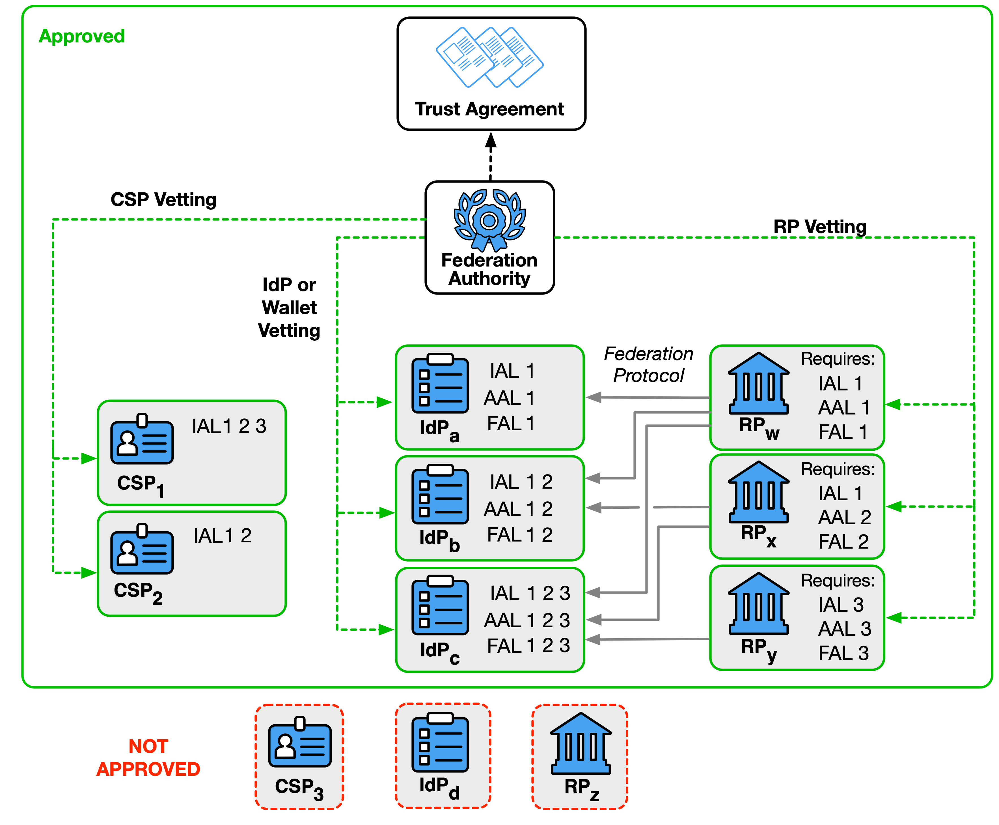
信託契約は、すべての当事者を審査するために必要な慣行を列挙するものとし、審査プロセスの実施に責任を負う当事者を示すものとする(SHALL shall )。
少なくとも、CSP、IdP、およびRPの審査は、次のことを確立するものとします。
連邦当局は、信託契約に基づく当事者が、信託契約における他の当事者のメンバーシップを確認するためのプログラム的手段を提供してもよい(MAY)。たとえば、フェデレーション機関は、システム内の RP に ID を提供するための IdP の精査済み機能を提供する検出 API を提供できます。または、フェデレーション機関は、登録手順中に RP が IdP に提示するための署名付き構成証明を提供することもできます。
連邦当局は、信託契約に開示された条件の遵守について、メンバーを定期的に再評価するものとします。
多国間信託契約は、フェデレーション間契約を作成することにより、他のエンティティによって管理される他の信託契約に基づいて信頼を確立してもよい(MAY)。たとえば、IdP1 はフェデレーション機関 A1 との多国間協定に基づいて審査され、RP2 は連邦機関 A2 との多国間協定に基づいて審査されています。IdP1 と RP2 間の接続を容易にするために、新しいフェデレーション機関 A3 は、A1 からの IdP と A2 からの RP を受け入れる多国間契約を提供できます。IdP1 と RP2 が A3 の権限を受け入れた場合、フェデレーション接続は、このフェデレーション間契約の後援の下で続行できます。
フェデレーション トランザクションは、多くの場合、複数のエンティティによって制御される複数の当事者間で発生し、フェデレーション トランザクションの異なる段階により、加入者が他の当事者に救済を求める必要がある状況が発生する可能性があります。
RP は、加入者の ID 属性の受信者として、加入者のフェデレーテッド システムに対するプライマリ ビューです。場合によっては、加入者は IdP が RP の使用に関与していることに気付かないことがあります。したがって、RP に連絡して救済を要求するための明確でアクセスしやすい方法を加入者に提供するのは RP の責任です。RP加入者アカウント(アカウントに保存されている属性を含む)、RP機能、バインドされたオーセンティケーター、RP許可リスト、およびRPの管理下にあるその他の項目が関与する事項については、RPは加入者に明確でアクセスしやすい救済手段を提供するものとします(SHOULD)。IdPまたはCSPが関与する事項について、RPは、必要に応じて、IdPまたはCSPとの救済プロセスを開始する手段を加入者に提供するものとします(SHOULD)。
フェデレーショントランザクションで利用可能になる属性値および派生属性値、IdP機能、鍵所有者オーセンティケーター、IdP許可リスト、およびIdPの管理下にあるその他の項目を含む、フェデレーショントランザクションにおけるサブスクライバアカウントの使用を含む事項については、IdPは、サブスクライバに明確でアクセスしやすい救済手段を提供するものとします(SHOULD)。特定のRPにも関係する事項については、IdPは、加入者にRPとの救済プロセスを開始する手段を提供するものとします(SHOULD)。IdPが利用可能になった加入者アカウントが関係する問題については、IdPは加入者にCSPとの救済プロセスを開始する手段を提供するものとする(MUST)。
加入者アカウントの ID 属性や認証者など、加入者アカウントに関係する事項については、CSP は、加入者に明確でアクセスしやすい救済手段を提供するものとします。
救済の提供に関するその他の要件については、[SP800-63]の第3.6節を参照してください。
信託契約はフェデレーションの許可を確立しますが、フェデレーション内の当事者の安全な接続を促進するものではありません。 フェデレーション プロトコルを介して通信するには、CSP、IdP、RP が、識別子を暗号化キーおよび関連するセキュリティ成果物に関連付ける機能を使用して、安全な方法で相互を識別できる必要があります。 このようにして、RP は、アサーションが目的の IdP から来ていること、または属性バンドルが目的の CSP から来ていることを確認できます。同様に、IdP は、目的の RP にアサーションを送信していることを確認できます。
RP が IdP または CSP の識別子と暗号化キーを確立するプロセスは、検出と呼ばれます。IdP が RP の識別子と暗号化キーを確立するプロセスは、登録と呼ばれます。検出プロセスと登録プロセスはどちらも、フェデレーション トランザクションの前に行うことも、トランザクション自体の一部としてインラインで行うこともできます。さらに、発見プロセスと登録プロセスの両方が、信託契約で定義されているように、当事者間で直接行うことも、サードパーティのサービスの使用を通じて促進することもできます。これらのプロセスでは、IdP、CSP、およびRP間でキーと識別子を手動で配布したり、これらのエンティティを、自動化されたプロセスを通じて暗号化キーマテリアルとメタデータを取得できるソースに関連付けたりすることができます。フェデレーション プロトコルとプロセスが異なれば、これらの識別子と暗号化キーを確立するためのプロセスも異なりますが、最終的には、各当事者がプロトコル内で必要に応じて他の当事者を適切に識別できるようになります。
発見および登録プロセスは、フェデレーション取引を管理する信託契約で定義されているように、安全な方法で確立されるものとします(SHOULD)。多くの場合、識別子は、キー マテリアル自体ではなく、暗号化キー マテリアルの信頼できるソースに関連付けられます。たとえば、IdP によってホストされる URL は、その IdP の公開署名キーを提供できます。RP がこの関連付けで手動で設定されている場合でも、RP は実行時に実際の暗号化キー マテリアルをフェッチできます。暗号鍵情報の転送を必要とするプロトコルは、認証された保護されたチャネルを使用して、共有秘密または公開鍵を含む、フェデレーション関係を運用するために必要な暗号鍵情報を交換するものとします(MUST)。この関係で使用される対称キーは、フェデレーション参加者のペアに一意であるものとします(SHALL SHOULD)。
CSP、IdP(加入者管理ウォレットを含む)、およびRPは、信託契約または異なる信託契約内で異なる目的を果たすために、複数の識別子と暗号鍵を有しても構いません(MAY)。たとえば、IdP は、すべての FAL1 および FAL2 トランザクションに 1 つのアサーション署名キーのセットを使用し、より高いセキュリティコンテナに格納されている FAL3 トランザクションに対して個別に管理される署名キーのセットを使用できます。
ドメイン名、URI、またはその他の構造化識別子を使用して当事者を識別する場合、ワイルドカードは使用されないものとします。たとえば、RP が "www.example.com"、"service.example.com"、および "gateway.example.com" に展開されている場合、これらの各識別子を RP に登録する必要があります。ワイルドカード「*.example.com」は、同じ RP 識別子の下で「user.example.com」と「unknown.example.com」へのアクセスを意図せずに許可するため、使用できません。
時間の経過とともに、CSP、IdP、またはRPに関連付けられた暗号化キーを更新することが望ましい、または必要になる場合があります。識別子および暗号鍵の許容更新プロセスは、信頼契約によって定義され、最初の暗号鍵の確立と同様に、認証された保護されたチャネルを使用して実行されるものとする(SHALL )。
たとえば、IdP が URL によって識別される場合、IdP はその URL の下の場所に現在の公開鍵セットを公開できます。IdP は、必要に応じて、その場所で公開されているキーを更新できます。RP は、必要に応じて既知の場所から公開鍵を取得し、更新された公開鍵が利用可能になったときに取得できます。
CSP、IdP(加入者制御ウォレットを含む)、およびRPは、すべての署名鍵、復号化鍵、および対称鍵を安全な方法で保存するものとします(MUST)。暗号化キー ストレージは、適用される改ざん防止要件など、適用される [FIPS140] 要件の対象となります。
状況によっては、加入者のデバイス上の加入者制御ウォレットを使用して FAL3 に到達するなど、暗号化キーをエクスポート不可能な方法で保存する必要があります (セクション 5.4.1 を参照)。エクスポート不可と見なされるには、鍵ストレージは、別のハードウェア、またはセキュア エレメント、トラステッド実行環境 (TEE)、トラステッド プラットフォーム モジュール (TPM) などの組み込みプロセッサまたは実行環境のいずれかであるものとします (MUST)。これらのハードウェアモジュールまたは組み込みプロセッサは、ラップトップやモバイルデバイスのCPUなどのホストプロセッサとは別です。エクスポート不可能な鍵ストレージは、ホスト プロセッサへの秘密鍵のエクスポートを禁止するように設計され、秘密鍵を抽出できるようにホスト プロセッサによって再プログラムできないものとします。
ソフトウェアとデバイスの構成証明は、特に動的システムや分散システムにおいて、識別子と暗号キーの確立を強化できます。この使用法における構成証明は、特定のソフトウェア、デバイス、またはランタイム システムが合意された一連のパラメーターを満たしていることを示す暗号的にバインドされたステートメントです。認証は、受信者が対話しているソフトウェア、デバイス、またはシステムの ID を確立するコンテキストでソフトウェアによって提示されます。構成証明により、受信者は、他の方法よりも高い確実性で要求を検証できます。
たとえば、加入者が制御するウォレット ソフトウェアの特定のディストリビューションに、そのディストリビューターが署名して、RP がそのソフトウェアの個々のインスタンスを認識できるようにすることができます。または、RP にフェデレーション機関から構成証明を発行して、IdP が RP をフェデレーションの一部として認識できるようにすることもできます。
証明書が信頼契約によって要求される場合、またはフェデレーションプロトコルの一部として要求される場合、受信した証明書は受信者によって検証されるものとします(SHALL SHOULD)。
動的クライアント登録中に OAuth および OpenID Connect RP が署名されたソフトウェア属性セットを通信する手段であるソフトウェアステートメントの詳細については、[RFC7591] Sec. 2.3 を参照してください。
IdP と RP が信頼契約を締結し、登録が完了すると、フェデレーション プロトコルを使用して、IdP から RP に加入者属性を渡すことができます。
加入者のID属性は、当事者がフェデレーションの目的で許可リストに登録されている場合でも、侵害された加入者アカウントの識別(第3.10.1条参照)などのフェデレーショントランザクションまたはサポート機能のために、IdPとRPの間でのみ送信されるものとします(SHALL shall shall that that not be access. compromised subscriber accounts (Sec. 3.10.1 参照)。
加入者の ID 属性は、加入者がそのような目的に特に同意しない限り、信託契約に規定されている目的以外の目的で RP によって使用されないものとします。加入者の属性は、第 3.11.3 条に従って保存および管理されるものとします。
加入者は、RP への属性の送信について通知されるものとします (SHOULD)。権限のある当事者が組織である場合、組織は、承認されたRPのリストと、それらのRPに送信される関連する属性セットを加入者が利用できるようにするものとする(MUST)。許可された当事者が加入者である場合、加入者は、第4.6.1.3節に記載されているように、IdPでのランタイム決定を使用して属性の解放前にプロンプトを受けるものとする(MUST)。
RP は通常、RP サブスクライバ アカウントと呼ばれるレコードを保持して、サブスクライバをローカルで表します。RP サブスクライバ アカウントには、RP でのアクセス権や、サブスクライバの ID 属性のキャッシュなどを含めることができます。RP サブスクライバ アカウントには、ベースとなるサブスクライバ アカウント(CSP や IdP によって管理されるサブスクライバ アカウントなど)とは別のライフ サイクルがあります。
RP サブスクライバ アカウントは、RP がサブスクライバに関する一連の属性を、RP のサブスクライバ アカウントを表すデータ レコードに関連付けた場合にプロビジョニングされます。プロビジョニングは、展開パターンに応じて、認証前またはフェデレーション認証プロセスの結果として行うことができます(セクション4.6.3を参照)。RP 加入者アカウントは、第 3.8.2 節で説明されているように、プロビジョニング時に 1 つ以上のフェデレーション識別子に関連付けられても構いませんし、後でアカウント解決を通じてフェデレーション識別子にリンクしても構いません。
RP サブスクライバ アカウントは、RP の信頼できる IdP から 1 つ以上のフェデレーション識別子にバインドされている場合、またはアカウント解決プロセスが確立されている場合に、フェデレーテッド認証に使用できます。フェデレーション プロトコルを介して加入者の認証が成功すると、加入者は RP 加入者アカウントによって保護されている RP の情報と機能にアクセスできるようになります。
RP サブスクライバ アカウントは、RP が RP のアカウントへのすべてのアクセスを削除すると終了します。終了には、第 3.11.3 条に従って、アカウントに関連付けられたすべてのフェデレーション識別子、バインドされた認証子、属性、および ID 情報の削除が含まれるものとします (SHOULD)。RPは、RP加入者アカウントが派生した加入者アカウントの現在の有効性に関係なく、IdPから独立してRP加入者アカウントを終了しても構いません(MAY)。
RP サブスクライバ アカウントは、すべてのフェデレーテッド ID と代替オーセンティケータが RP サブスクライバ アカウントから削除されたが、アカウント内の情報は保持される場合など、サブスクライバがアカウントを使用して RP にアクセスできない場合に無効になります。RP は、記録の保持を容易にしたり、アカウントに関連付けられた不審な動作を調査したりするために、RP サブスクライバー アカウントを終了するのではなく、無効にすることを選択できます。
RPは、現在アクセス手段がないRP加入者アカウントの回復手段を提供してもよい(MAY)。
RP 加入者アカウントは、認証されたセッションなしで RP でプロビジョニングできますが、認証されたセッションはプロビジョニングされたアカウントに基づいてのみ作成できます。セッションの詳細については、セクション3.9を参照してください。
RPは、RP加入者アカウントが関連するフェデレーテッド識別子がゼロの状態に達したときに制定する慣行とポリシーを文書化するものとします(SHOULD)。代替認証器を含むアクセス手段がない(第3.8.3条参照)。また、アカウントのリンク(セクション3.8.1を参照)やアカウント解決(セクション3.8.2を参照)を含む回復手段はありません。このような場合、RP サブスクライバ アカウントは無効化または終了されるべきです (SHOULD)。
RPは、次の場合に加入者に通知するものとします。
RP は、RP 加入者アカウントが無効化または終了されたときに加入者に通知するべきです (SHOULD)。RPは、[SP800-63A]の第5.4条で議論されているように、加入者に通知を送信するかどうかを決定する際に、終了の理由を考慮するものとする(MUST)。
アカウント管理イベントに関する加入者への通知の提供に関するその他の考慮事項については、[SP800-63B] の第 4.6 節を参照してください。
1 つの RP サブスクライバ アカウントは、複数のフェデレーション識別子に関連付けることができます。この方法は、アカウントリンクと呼ばれることもあります。RP が加入者がこの方法で複数の加入者アカウントをリンクすることを許可する場合、RP は、すべてのリンク機能について加入者アカウントとの認証されたセッションを要求するものとします (SHALL )。この認証されたセッションは、新しいフェデレーテッド ID を RP サブスクライバ アカウントにリンクする前に、1 つの既存のフェデレーテッド ID を使用した認証を要求すべきです (SHOULD)。
フェデレーテッド ID が RP 加入者アカウントから削除されると、RP は、削除されたフェデレーテッド ID から RP 加入者アカウントへのアクセスを禁止するものとします (SHALL )。
RPは、RPへのアクセスに使用されるフェデレーテッドアカウントに応じて、異なるアクセス権を同じアカウントに関連付けても構いません(MAY)。RP が許可とアクセスを決定する手段は、これらのガイドラインの範囲外です。
RP が一連の加入者に関する既存の情報にアクセスでき、この情報がフェデレーテッド識別子に関連付けられていない場合、RP はアカウント解決と呼ばれるプロセスを実行して、新しい RP 加入者アカウントに関連付ける加入者情報のセットを決定します。
アカウント解決を実行するRPは、フェデレーテッド識別子をRPサブスクライバーアカウントにリンクし、アクセスを許可する前に、IdPから要求された属性がRPのシステム内でサブスクライバーを一意に解決するのに十分であることを保証するものとする(MUST)。RP による各属性の使用目的は、その属性がこのようにアカウント解決に使用されるかどうかを含め、信託契約に詳述されています。
アカウント解決を実行する RP は、RP サブスクライバー アカウントの情報をサブスクライバーに属さないフェデレーション識別子に関連付けないようにプロセスを設計するものとします (SHOULD)。
たとえば、加入者制御のウォレットは、RP にフェデレーション識別子を提供しない場合がありますが、RP が加入者を RP 加入者アカウントに一意に解決できるようにする CSP からの属性バンドルを RP に提供することで、RP がアカウント解決を実行できるようにすることができます。あるいは、事前プロビジョニング モデルを使用する RP は、合意された属性セットに基づいて、受信アサーションを RP 加入者アカウントに一意に関連付けることができます。
同様のアカウント解決プロセスは、RP がキー所有者アサーションで使用されるオーセンティケーターを初めて検証するときも使用されます。この場合、RPは、オーセンティケーターを受け入れる前に、オーセンティケーターで運ばれる属性がRP加入者アカウントに一意に解決されることを保証するものとする(SHOULD)。
RPは、加入者がRP加入者アカウントに認証者を追加および削除できるようにすることにより、加入者が直接認証プロセスを使用してRP加入者アカウントにアクセスすることを許可してもよい(MAY)。RP は、[SP800-63B] の要件に従って、すべての代替認証器を管理するものとします (SHOULD)。
RP は [SP800-63] で説明されている直接認証モデルを使用しているため、フェデレーション トランザクションは存在せず、したがって FAL は割り当てられません。
RPがこの種のアクセスを許可する場合、RPは、IdPがRPと共有される情報に関する決定を下せるように、信頼契約で以下を開示すべきである(SHOULD)。
オーセンティケーター管理イベントに関する加入者への通知に関するその他の考慮事項については、[SP800-63B] の Sec. 4.6 を参照してください。
バインドされたオーセンティケーター(セクション3.16を参照)をRPへの直接アクセスのための代替オーセンティケーターとして使用することは可能ですが、これらの用途は互いに異なり、RPは、特定のオーセンティケーターが一方または両方のシナリオで使用できるかどうかを決定する必要があります(SHALL SHOULD)。
フェデレーション・トランザクションの最終的な目的は、IdP からの検証済みアサーションによって裏付けられた、加入者と RP の間に認証済みセッションを作成することです。この認証されたセッションは、加入者が RP の機能にアクセスできるようにする (つまり、ログイン)、RP への加入者の識別、またはフェデレーション トランザクションで運ばれる加入者に関する属性の処理に使用できます。 認証されたセッションは、以下の条件が当てはまる場合にのみ、RP によって作成されるものとします (SHALL )。
フェデレーションが識別プロセスの一部として使用される場合、他のプロセスが完了するまで RP サブスクライバ アカウントが確立されない場合があります。
アサーションがFAL3でのキー所有者アサーションである場合、第3.15節で説明されているように、アサーションで示されたオーセンティケーターは、RP加入者アカウントが認証されたセッションに関連付けられる前に検証されるものとします(SHALL SHOULD)。アサーションがFAL3でバインドされたオーセンティケーターによる認証も必要とする場合、第3.16節で説明されているように、RP加入者アカウントが認証されたセッションに関連付けられる前に、バインドされたオーセンティケーターが検証されるものとします(SHOULD)。
認証されたセッションは、いつでも RP によって終了してもよい(MAY)。
IdP と RP の両方のセッション管理要件の詳細については、[SP800-63B] 第 5 節を参照してください。汎用 IdP に関する追加のセッション要件については、第 4.7 節を参照してください。
サブスクライバの目標は、RP と対話して使用することです。フェデレーションには、RP への直接認証中に関与しない当事者である IdP からの個人属性の転送が含まれます。フェデレーションは、IdP にサブスクライバのアクティビティとステータスを幅広く可視化させる可能性もあります。したがって、フェデレーションには、直接認証には存在しない特定のプライバシー要件が関連付けられています。
RP が IdP にフェデレーション トランザクションを要求すると、この要求とその後のフェデレーション トランザクションの処理により、加入者がログインしている場所が IdP に明らかになります。時間の経過とともに、IdP は、特定の加入者がどの RP を使用しているかの知識に基づいて、加入者トランザクションのプロファイルを構築できます。この集約により、加入者の追跡や、加入者のプライバシー上の利益に合致しない方法での加入者 ID 情報の使用の新たな機会が可能になる可能性があります。
同じ加入者アカウントが複数の RP に対してアサートされ、それらの RP が相互に通信する場合、共謀する RP は、複数のアプリケーションとセキュリティ ドメインにわたる加入者のアクティビティを追跡する可能性があります。IdPは、技術的な手段(例えば、第3.4.1節、プライバシー強化暗号プロトコルに記載されているペアワイズ仮名識別子の使用)を採用して、関連付け解除を提供し、RP間の加入者アクティビティの追跡とプロファイリングを阻止すべきである(SHOULD)。このような措置を決定する際には、IdP は、NIST プライバシー フレームワーク [NIST-Privacy] などの関連するガイドラインと標準を適用すべきです (SHOULD)。
次の要件は、IdP、RP、またはその両方として機能する連邦機関に特に適用されます。
政府機関は、プライバシー法の要件が IdP として行動する機関、RP として行動する機関、またはその両方によってトリガーされるかどうかを判断する分析を実施するために、プライバシー法の上級機関 (SAOP) と協議するものとします (セクション 7.4 を参照)。
政府機関は、該当する場合、記録システム通知 (SORN) によって補償範囲を公開または特定するものとします。
政府機関は、電子政府法の要件が IdP として行動している機関、RP として行動している機関、またはその両方によってトリガーされるかどうかを判断する分析を実施するために、SAOP と協議するものとします。
政府機関は、該当する場合、プライバシー影響評価(PIA)によって対象範囲を公開または特定するものとします。
政府機関は、IdP と RP の間での加入者 ID 情報の共有に関するプライバシー リスク評価を実施するものとします。
RP加入者アカウントのライフサイクルプロセスが、プロビジョニングAPIを介してRPに属性へのアクセスを許可する場合(第4.6.3条を参照)、RP加入者アカウントのライフサイクルの違いを説明するために、追加のプライバシー対策が実施されるものとする(例えば、非アクティブな加入者アカウントの分離、無効および終了されたアカウントの事前の削除)。IdP は、プロビジョニング API を通じて RP が利用できる属性を最小化するものとします (SHALL )。IdP は、プロビジョニング API を介して利用可能な加入者アカウントの母集団を、信託契約によって RP の使用を許可された加入者の母集団に制限するものとします。IdP で終了したアカウントの ID 属性の RP 保持を防止するために、IdP は、RP データ保持要件、ポリシー、または規制によって制限されている場合を除き、プロビジョニング API を使用して、終了した加入者アカウントの RP 加入者アカウントのプロビジョニングを解除するものとします。この措置は、データ最小化の原則を適用するのに役立ちます (セクション 9.5 の例を参照)。RP 加入者アカウントが複数のフェデレーテッド識別子にリンクされている場合(第 3.8.1 節を参照)、プロビジョニング解除プロセスにより、RP 加入者アカウントが RP にまだ存在しているが、別のフェデレーション識別子にリンクされる可能性があります。
IdPとRPは、システムの機能を達成するために必要な最小限のデータのみを交換するものとします(SHALL SHOULD)。
アイデンティティ属性のリリースに対する加入者の制御を強化するために、信頼契約は、セクション4.6.1.3で論じられているように、属性のリリースを制御するためにランタイム決定を使用するべきである(SHOULD)。
フェデレーショントランザクションがエフェメラルプロビジョニングメカニズム(セクション4.6.3を参照)を使用する場合、IdPは、RPがセッション間で情報を保存または関連付けるのを防ぐために、RPへの各承認要求にエフェメラルフェデレーテッド識別子を使用するべきです(SHOULD)。
IdPは、加入者情報の送信を、システムが機能するために必要であり、信託契約によって規定および開示されているもののみに制限するものとします(SHALL SHOULD)。 これらの機能には、次のものが含まれます。
IdPがRPでの加入者の活動に関する情報をいずれかの当事者に開示したり、これらの場合以外の目的で加入者の属性を処理したりする場合、IdPは、追加の処理から生じるプライバシーリスクに見合った予測可能性と管理可能性を維持するための措置を実施するものとします(SHOULD)。措置には、明確な通知の提供、加入者の同意の取得、または属性の選択的な使用または開示の有効化が含まれる場合があります。IdPがIDトランザクション以外の情報を使用することについて加入者の同意を収集した場合、IdPは、追加処理に対する同意をIDサービスの条件としないものとします。たとえば、IdP は、サブスクライバが RP にログインできるようにするために、サブスクライバにニュースレターの受信に同意することを要求することはできません。
RPは、関連するIdPへの加入者活動の送信を、信託契約によって規定および開示された場合にのみ、以下の場合に制限するものとします(SHOULD)。
RPが加入者の身元情報を信託契約に規定されている目的以外の目的で使用する場合、RPは加入者に通知し、そのような追加使用について同意を得るものとします。
また、信託契約の条件に関わらず、法律や法的手続きを遵守するために加入者情報が送信される可能性もあります。
プライバシーエンジニアリングとリスク管理の詳細については、[NISTIR8062]を参照してください。
一部の大規模なフェデレーション システム、特にフェデレーション機関によって管理される多国間フェデレーションでは、同じ信頼契約に複数の CSP が存在する可能性があります。このような場合、CSPは、不正行為の軽減などの活動のために相互に情報を共有することが望ましい場合があります(たとえば、攻撃者が検出を回避するために異なるアカウントを持つCSP間をジャンプするのを防ぐため)。この方法で情報を共有することで詐欺を軽減できますが、CSPは、加入者が使用するすべてのCSPに元々開示されていなかった加入者の属性やアクションを相互に学習する可能性があるため、プライバシーに関する大きな懸念もあります。
リモートシステムでホストされている加入者制御ウォレット間など、CSPから独立して動作する可能性のあるIdP間で同様の情報共有が望ましい場合があり、そのような共有には同様のプライバシーの考慮事項があります。
CSPおよび/またはIdP間のすべての情報送信は、第3.10.1条に列挙されたIdPの制限に従うものとします(MUST)。CSPおよび/またはIdP間のそのような情報共有は、プライバシーリスク評価に含まれるものとします(MUST)。
CSP をつなぐ信頼契約の条件は、CSP 間で共有される情報の転送に適用されるポリシーを定義するものとします (SHALL )。フェデレーション機関によって管理される信頼契約では、フェデレーション機関がこれらの条件を定義します。
IdP および CSP は、少なくとも [SP800-53] で定義されている中程度のベースライン セキュリティ コントロール、または同等の連邦 ([FEDRAMP] など) または、これらのガイドラインが保護する情報システム、アプリケーション、およびオンライン サービスについて組織が決定した業界標準から、適切に調整されたセキュリティ制御を採用するものとします (SHOULD)。RP は、少なくとも [SP800-53] で定義されている低いベースライン セキュリティ コントロール、または同等の連邦 ([FEDRAMP] など) または、これらのガイドラインが保護するために使用される情報システム、アプリケーション、およびオンライン サービスについて組織が決定した業界標準から、適切に調整されたセキュリティ制御を採用するものとします (SHOULD)。個人情報を要求または処理するRPは、少なくとも[SP800-53]または同等の連邦([FEDRAMP]など)または業界標準で定義されている中程度のベースラインセキュリティコントロールから、適切に調整されたセキュリティコントロールを採用するものとします(SHOULD)。CSP、IdP、およびRPは、適切なシステムまたは同等のシステムに対する最低限の保証関連コントロールが満たされるか、または超過されていることを保証するものとします(SHOULD)。
フェデレーテッド プロトコルのコンテキストにおけるアサーション インジェクション攻撃は、攻撃者が RP にアクセスしたり、RP への正当な加入者アクセスを拒否したりするために、RP にアサーションまたはアサーション参照を受け入れまたは処理させようとすることで構成されます。攻撃者は、アサーションまたはアサーション参照を取得し、脆弱な RP に挿入することでこれを行います。攻撃者が成功すると、RP をだまして、攻撃者のセッションをアサーション内のフェデレーション識別子にバインドさせることができます。攻撃者の主張は、正規の加入者から盗まれたものであるか、攻撃を実行するために捏造されたものである可能性があります。
アサーション インジェクション攻撃からの保護は、すべての FAL で推奨され、FAL2 以降で必要です。いずれの場合も、RP は、RP ソフトウェアの性質、使用中のフェデレーション プロトコルの機能、およびシステム全体のニーズに基づいて、攻撃者が挿入されたアサーションまたはアサーション参照を提示できないように合理的な手順を実行する必要があります。[OIDC] と [SAML] はどちらも、要求中に RP から送信されるナンス、バックチャネル通信用の RP 認証、RP がフェデレーション トランザクションを開始し、プロセス全体を通じてその状態を追跡する方法など、アサーション インジェクション保護のメカニズムを提供します。メカニズムが異なれば、保護の程度も異なり、さまざまな状況に適用できます。 特定の保護の詳細は、使用されているフェデレーションプロトコルとテクノロジによって異なりますが、次のような一般的なベストプラクティスを使用して、攻撃対象領域を制限できます。
アサーションインジェクション攻撃は、攻撃者が加入者をだまして攻撃者のセッションに挿入する有効なアサーションを生成させたり、攻撃者が加入者をだましてRPの加入者のセッションに攻撃者のアサーションを挿入したりできるため、フィッシング攻撃と組み合わせると特に危険です。
IdP と RP の間の通信は、認証された保護チャネルを使用して転送中に保護されるものとします。加入者と IdP または RP の間の通信 (通常はユーザーエージェントを介して) は、認証された保護されたチャネルを使用して行われるものとします (SHALL )。
IdP は、デバイス ID、ロケーション、システム ヘルス チェック、設定管理など、セキュリティ ポリシーを適用する際の RP に役立つ情報にアクセスできる場合があります。IdP は、第 7.2 条に記載されているように、信託契約の範囲内で、加入者の通知と同意を条件として、この情報を RP に開示しても構いません。
ID 属性は、セクション 3.12.3 で説明されているように、ID API へのアクセスを承認することにより、アサーション自体の外部に含めてもよい(MAY)。この方法で ID 情報を分割すると、加入者のプライバシーが保護され、認証アサーション自体の必須情報に加えて、個人情報の開示を制限できます。ID API の使用は、信頼契約の条件に列挙されるものとします (SHALL )。
派生属性値が利用可能であり、RPのニーズを満たす場合、RPは、第7.3節に記述されているように、完全な属性値ではなく派生属性値を要求すべきである(SHOULD)。IdP は、基盤となるフェデレーション プロトコルが許可する範囲で派生属性値をサポートするべきです (SHOULD)。
アカウントがアクティブであるかどうかにかかわらず、IdPおよびRPは、[SP800-53]または同等の連邦([FEDRAMP]など)または業界標準で定義されているカスタマイズされたセキュリティ制御を使用して、加入者アカウントまたはRP加入者アカウントに個人情報を保存するものとします。
RP加入者アカウントが加入者にアクセスできなくなった場合(例えば、アカウントに関連付けられたフェデレーテッド識別子がなく、代替の認証手段がない場合)、RPはRP加入者アカウントを終了すべきである(SHOULD)。特に、RPがアカウントリンク(第3.8.1条参照)または代替オーセンティケータ(第3.8.3条参照)をサポートする場合、RPは、RP加入者アカウントを終了せず、代わりにアカウントを無効にし、必要な情報を保持することを選択しても構いません(MAY)。
IdPおよびRPは、規制、法律、またはポリシーによって別段の制限がある場合、またはアプリケーションのリスクにより加入者の情報を保持することが不可欠であると判断した場合を除き、アカウントの終了時に加入者アカウントおよびRP加入者アカウントの個人情報の削除を支持すべきです(SHOULD)。削除を支持しない IdP と RP は、法定またはリスクベースの正当な理由を提供し、それを信託契約に文書化するものとします。 たとえば、RP は、アカウントが終了した後も保持されるアクセス ログと監査ログにフェデレーション識別子を記録できます。ただし、すべての ID 属性と個人情報は、RP がその機能に必要としなくなったため、RP 自身のストレージから削除されます。
RP サブスクライバー アカウントが終了した場合、RP は、規制、法律、またはポリシーによって別段の制限がある場合、またはアプリケーションのリスクが不可欠であると判断した場合を除き、すべてのサブスクライバー属性をストレージから削除するものとします。
サブスクライバを表す ID 属性は、フェデレーション トランザクション中に RP に送信されます。これらの属性は、さまざまな方法で組み合わせることができる複数の側面を帯びています。
\clearpage
信頼契約は、属性の検証に使用されるプロセスとソースを説明する CSP の実践ステートメントを指すものとします (SHALL )。
他のプロトコルや仕様では、属性バンドルを資格情報と呼ぶことがよくあります。ただし、この用語は、これらのガイドライン内での別の概念の使用と矛盾します。したがって、これらのガイドラインでは、代わりに「属性バンドル」という用語が使用されます。
アサーション API または ID API で IdP から属性を直接送信する代わりに、属性値と派生属性値を CSP によって署名されたバンドルに収集できます。これらの属性バンドルは、IdP によって提供される保護とは無関係に、属性バンドルの暗号化保護を使用して RP によって検証できます。属性バンドルは、加入者が管理するウォレットで一般的に使用されます。属性のバンドルに使用されるテクノロジーの例としては、選択的開示 JSON Web トークン [SD-JWT]、[VC] で定義されている検証可能な資格情報データ モデル、[ISOIEC18013-5] で定義されている mDoc モバイル セキュリティ オブジェクトなどがあります。
属性バンドルの表示は、バンドルされていない属性と同じ方法で IdP によって保護されるものとします。つまり、アサーションで提示される属性バンドルはアサーションのシグニチャーでカバーされ、ID API によって使用可能になる属性バンドルは、その API への制限付きアクセス制御によって保護されます。
属性バンドルには、1 つ以上の属性値と派生属性値、および発行元の CSP の識別子が含まれます。これらの属性値の 1 つは、発行元の CSP がサブスクライバー間でこの値の一意性を保証する場合、サブスクライバー識別子として機能する可能性があります。属性バンドルは IdP からのアサーションで伝送されるため、バンドル内の加入者属性は、すべてのトランザクションですべての RP に完全に開示する必要はなく、代わりに選択的に RP に開示できます。選択的開示技術を使用する属性バンドルは、IdP に新しいバンドルを発行することなく、RP が属性バンドルから読み取ることができる属性を制限することで、システムのプライバシーを高めることができます。RP は、IdP が属性バンドルのすべての内容を RP に開示しなくても、属性バンドル全体の署名を確認し、バンドルの送信元を CSP として確認できます。
RPは、属性バンドルに固有の署名と、アサーション全体の署名などのコンテナ署名を検証するものとします(SHALL SHOULD)。
属性バンドルは、オプションで、バンドルが発行された IdP の検証キーを含めても構いません。このような場合、RPは、署名された属性バンドル内のIdPの検証キーを使用してアサーション上の署名を検証することにより、アサーションが属性バンドルで要求されたIDによって提示されることを確認するものとします(SHOULD)。
一部のユースケースでは、RP が機能するために ID 属性の実際の値を把握することは厳密には必要ではなく、ID 属性から派生した値で十分です。たとえば、RP が加入者が成人年齢を超えているかどうかを知る必要がある場合、RP は加入者の生年月日を要求し、この値から成人年齢の質問を計算できます。ただし、そうすることで、RP の機能要件に実際に必要とされるよりも具体的な情報が RP に明らかになります。代わりに、IdP は、RP の要求時に加入者の年齢が過半数の定義を満たしているかどうかを計算し、生年月日値自体の代わりに、この導出に対して単純なブール値を返すことができます。その後、RP は、基礎となる値を見ることなく処理を続行できます。
派生属性値は、RP への情報のより集中的なリリースを可能にするため、システムのプライバシーを強化します。一部のフェデレーションシステムでは、RP がリクエスト時に任意の派生属性値を動的にクエリできますが、IdP が共通の派生属性値を事前に計算し、完全な属性値の代替として提供することで、多くの一般的なユースケースに対応できます。プライバシーを保護するため、派生属性値は、基になる属性値をリクエスターに開示してはなりません。一部の属性バンドルに見られるように、選択的開示テクノロジーを使用して、完全な属性値と派生属性値の両方を同じ応答に持ち込み、アプリケーションに必要なもののみを開示できます。
派生した属性値は、アサーションに直接含まれるか(セクション4.9およびセクション5.8を参照)、属性バンドルに含まれます(セクション3.12.1を参照)。
プロフィール情報を含むサブスクライバーに関する属性は、ID API と呼ばれる保護された API を通じて RP に提供されても構いません。RP には、アサーションと連携して、フェデレーショントランザクション中に ID API への制限付きアクセスが許可されます。たとえば、OpenID Connect では、UserInfo エンドポイントは、サブスクライバーに関する属性を取得するための標準化された ID API を提供します。この API は、OpenID Connect のアサーションである ID トークンとともに RP に発行される OAuth 2.0 アクセストークンによって保護されています。ID API は、ID 情報が承認された RP のみが利用できるようにするために、送信者制約付きアクセスを要求すべきです (SHOULD)。
ID API で属性を使用できるようにすることで、IdP はアサーションを使用して RP にできるだけ多くの情報を伝達する必要がなくなります。これは、機密性の高い属性をアサーション自体に含める必要がないだけでなく、アサーションが小さくなり、RP による処理が容易になることを意味します。アサーションの内容は、重要なフィールド (一意のサブジェクト識別子など)、IdP での認証イベントに関する情報、およびフェデレーション トランザクションに関する情報に制限できます。
また、ID API を使用すると、RP は IdP からのサブスクライバ属性の送信を管理できます。RP は、多くの場合、IdP によって提供された属性を RP 加入者アカウントにキャッシュし(セクション 3.8 を参照)、RP はこれらの属性が IdP から最後に受信された日時を記録できます。RP は、アサーション内のすべてのフェデレーション トランザクションでサブスクライバ属性を受信するのではなく、RP サブスクライバ アカウントを更新する必要がある場合にのみサブスクライバ属性を要求できます。IdP は、RP で使用可能な加入者属性のいずれかが IdP で更新された時刻をアサーションに示すことで、この決定を支援できます。このアプローチは、加入者の属性が時間の経過とともに安定している場合に特に役立ちます。
API を通じて利用可能なプロビジョニング モデルを含む、ID API のすべての可能な使用は、信頼契約の一部として記録され、開示されるものとします。ID API へのアクセスは、信頼契約によって時間制限を受けるものとします。ID API へのアクセスは、第 4.6.4 節で説明されているように、フェデレーション トランザクションの期間に属性の同期に必要な時間を加えたものに制限されるべきです (SHOULD)。時間制限は、アサーションの有効期間ウィンドウおよびRPでの認証されたセッションの存続期間とは別のものであるため、関連する有効なアサーションなしでRPによるIDAPIへのアクセスは、RPでの認証されたセッションの確立に十分ではない(SHALL NOT)。
特定の ID API デプロイメントは、IdP がアサーションを作成できるすべてのサブスクライバーに属性を提供できることが期待されます。ただし、ID API へのアクセスがフェデレーション トランザクションのコンテキスト内で付与される場合、ID API によって提供される属性は、関連するアサーションで識別された単一のサブスクライバーにのみ関連付けられるものとします (SHALL SHOULD)。ID API が IdP によってホストされている場合、返される属性には、サブスクライバーのサブジェクト識別子が含まれるものとします。これにより、RP はアサーションのサブジェクトを返された属性に正の相関関係にすることができます。RP サブスクライバ アカウントの事前プロビジョニングの一部として ID API へのアクセスが提供される場合 (セクション 4.6.3 を参照)、通常、RP にはフェデレーション トランザクションのコンテキスト外で ID API への包括的なアクセスが許可され、これらの要件は適用されません。プロビジョニング前のユースケースでは、プライバシーに関する考慮事項は、信頼契約の一部として評価され、記録されるものとします(SHOULD)。ID API が IdP から外部でホストされている場合は、セクション 3.12.3.1 の要件が適用されます。
フェデレーションプロトコルで使用されるほとんどのアイデンティティAPIはIdPの一部としてホストされますが、IdPはIdPの外部でホストされている外部アイデンティティAPIへのアクセス権をRPに付与することもできます。外部 ID API は通常、CSP 以外の属性プロバイダーによって提供され、サブスクライバー アカウントから使用できる属性に加えて、サブスクライバーに関する属性を提供します。IdP が外部 ID API へのアクセスを許可すると、外部 ID API から返される情報は、IdP がホストする ID API と同様にサブスクライバーに関連付けられます。信頼契約の目的上、IdP は、外部 ID API によって返されるデータを制御できない場合でも、外部 ID API のコンテンツとサブスクライバーアカウントの関連付けに責任を負います。
外部 ID API によって返される属性は、IdP から直接返される属性とは独立していると想定されるため、外部 ID API のコンテンツは、IdP によって使用されるものとは異なる識別子、形式、またはスキーマを使用しても構いません。特に、外部 ID API は、IdP がホストする ID API と同じフェデレーション識別子を使用することは想定されていません。 たとえば、IdP は、加入者の医療免許情報へのアクセスを提供できます。IdP がライセンスステータスを直接アサートする代わりに、IdP は、サブスクライバーを代表する医療免許機関のレコードへの RP アクセスを提供します。フェデレーションプロトコルは、IdP がサブスクライバーを表すレコードと、この API への制限付きアクセスを許可する資格情報を含む API へのリンクを提供できるようにすることで、これを有効にすることができます。その後、RP は、ライセンス レコードが別の識別子を使用する可能性が高く、RP によって相関できない場合でも、加入者と医療ライセンス レコードとの間に強い関連付けを作成できます。IdP は、このリンクを RP に提供する責任を負います。
属性を提供するための外部 ID API の使用は、属性ソースのリストの一部として信頼契約によって列挙されるものとします (SHALL )。
アサーションは、攻撃者が有効なアサーションを作成したり、キャプチャされたアサーションを異なる RP で再利用したりすることを防ぐための一連の保護を含むものとします (SHOULD)。必要な保護は、検討されているユースケースの詳細によって異なり、具体的な保護は次のサブセクションにリストされています。
アサーションは、ターゲット RP による一意の識別を可能にするのに十分な一意性であるものとします (MUST)。アサーションは、埋め込まれたナンス、発行タイムスタンプ、アサーション識別子、またはこれらまたは他の手法の組み合わせを使用して、これを実現しても構いません(MAY)。
アサーションは、発行者(IdP)によって暗号的に署名されるものとします(MUST)。RPは、発行者の検証キーに基づいて、そのような各アサーションのデジタル署名またはMACを検証するものとします(MUST)。この署名は、その識別子、発行者、オーディエンス、サブジェクト、および有効期間を含むアサーション全体をカバーするものとします(SHOULD)。
アサーション署名は、非対称鍵を使用するデジタル署名、または承認された暗号化を使用して RP と発行者の間で共有される対称鍵を使用する MAC のいずれかであるものとします (MUST)。
アサーションの内容を暗号化して、機密情報がユーザー エージェントなどの信頼できない第三者に公開されないように保護できます。この保護は、アサーションに加入者に関する個人情報が含まれている場合に特に重要です。
信頼契約は、他の状況ではアサーション内容の暗号化を要求してもよい(MAY)。
ほとんどのアサーション形式はアサーション全体の暗号化をサポートしていますが、一部のアサーション形式では、アサーションの個人情報部分のみを暗号化できるため、アサーション全体を暗号化せずに機密情報を RP に選択的に開示できます。 アサーションの一部が暗号化されると、必要な復号化キーを保持している RP のみがアサーション内の暗号化された情報にアクセスできます。
アサーションを暗号化する場合、IdP は、承認された暗号化で RP の暗号化キーを使用してアサーションの内容を暗号化するものとします (SHALL )。 たとえば、SAML アサーションは XML 暗号化を使用して暗号化でき、OpenID Connect ID トークンは JSON Web 暗号化 (JWE) を使用して暗号化できます。
バックチャネルプレゼンテーションで使用すると、IdP と RP の間に TLS チャネルを中断する仲介者がない場合、相互に認証された TLS 接続を使用してアサーションを転送中に暗号化することもできます。
サブジェクト識別子の意味は、SSN、電子メールアドレス、運転免許証番号などの他の可能な識別子とは異なり、ターゲットシステムのコンテキストに依存します。したがって、サブジェクト識別子だけでは、個人情報の保護に基づく暗号化要件は発生しません。
アサーションは、RP が発行されたアサーションの意図されたターゲットであるかどうかを認識できるように、オーディエンス制限手法を使用するものとします (SHALL )。すべてのRPは、あるRPに対して生成されたアサーションのアサーションのアサーションインジェクションと再生を防止するために、アサーションのオーディエンスにRPの識別子が含まれていることを確認しなければならない(SHOULD)。
攻撃者によってアサーションが正常に再生される可能性のある場所を制限するために、IdP は 1 つのオーディエンスに対してのみ指定されたアサーションを発行すべきです (SHOULD)。FAL2以上では、1人の視聴者に制限する必要があります。
無記名アサーションは、それを提示する当事者の身元の証明として単独で提示できます。アサーションの検証以外の証拠は必要ありません。同様に、ベアラー・アサーション参照は、単独で RP に提示し、RP がアサーションをフェッチするために使用できます。攻撃者がサブスクライバを表す有効なアサーションまたはアサーション参照をキャプチャまたは製造し、そのアサーションまたは参照を RP に正常に提示できる場合、攻撃者はその RP でサブスクライバになりすます可能性があります。
無記名の主張や参照を所有しているだけでは、必ずしも加入者になりすますのに十分ではありません。たとえば、アサーションがバックチャネルフェデレーションモデル(セクション4.11.1を参照)で提示された場合、RPを不正行為からさらに保護するのに役立つ追加の制御(RPの識別、アサーションインジェクション保護など)をトランザクションに配置できます。
鍵の所有者のアサーション(図3)は、加入者が制御する証明書の公開鍵など、RPによって独立して検証できるオーセンティケーターの一意の識別子を含まなければならない(SHOULD)。RPは、サブスクライバがアサーションによって識別された認証子を所有していることを確認するものとします(SHOULD)。キー所有者アサーションは、認証テクノロジが IdP と RP の両方によって信頼される公開鍵インフラストラクチャ (PKI) に関連付けられている場合に最もよく使用されます。
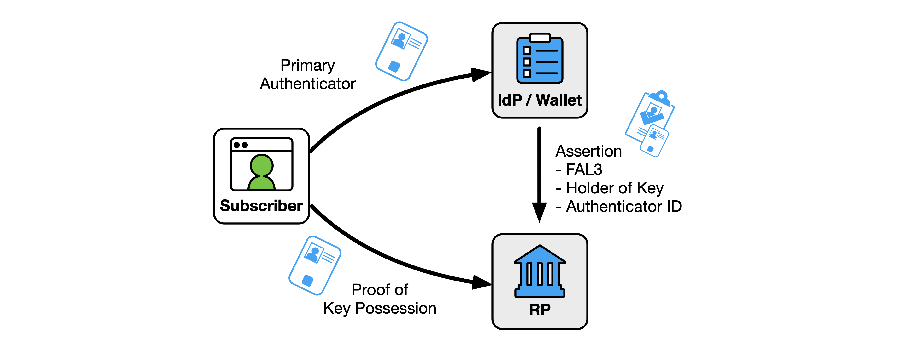
鍵所有者アサーションで識別されるオーセンティケーターは、加入者が IdP への認証に使用するプライマリ オーセンティケーターとは区別されても構いません。キー所有者アサーションで識別された認証者は、[SP800-63B] のセクション 3.2.5 で定義されているように、フィッシングに耐性があるものとします。RPが鍵の所有者アサーションで初めてオーセンティケーターに遭遇した場合、RPは、第3.8.2節で論じられているように、オーセンティケーターがRP加入者アカウントに一意に解決できることを保証するものとする(SHOULD)。
鍵の所有者のアサーションは、認証子として使用される暗号化されていない秘密鍵または対称鍵を含めてはなりません(MUST NOT)。
加入者のデバイス上で実行される加入者制御ウォレットからのアサーションは、キー所有者のアサーションと見なすことができます。
セクション 9.6 では、相互 TLS 接続を使用して、アサーションによってリストされているスマート カード上の証明書の所有の証明を提供する、より完全な例を示します。
キー所有者のアサーションで使用されるオーセンティケーターは複数の当事者に提示される可能性があり、これらのオーセンティケーターには ID 属性が含まれていることが多いため、第 7 節で説明されているように、対処すべき追加のプライバシーに関する考慮事項があります。
バインドされたオーセンティケーター(図4)は、RP加入者アカウントにバインドされ、RPによって管理されるオーセンティケーターです。IdPは、アサーションがFAL3でバインドされたオーセンティケーターで使用される場合に、アサーションにインジケーターを含めるものとします(SHALL SHOULD)。オーセンティケーターの一意の識別子(公開鍵など)は、RP サブスクライバー アカウントに格納されるものとします。RP は、[SP800-63B] のセクション 3.2.4 で説明されているように、署名付き認証を含めるなど、バインドされたオーセンティケーターの特性を評価するための信頼できる基盤を持つ必要があります。バインドされたオーセンティケーターは、オーセンティケーター テクノロジが IdP と RP の両方によって信頼される PKI に関連付けられていない場合(たとえば、そのような PKI が存在しない場合)に最もよく使用されます。
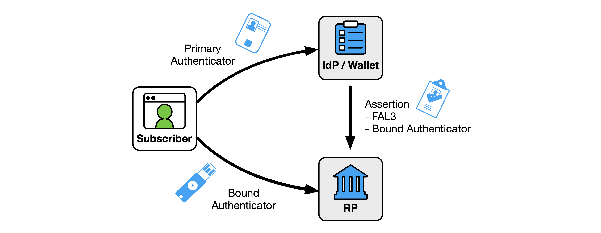
バインドされたオーセンティケーターは、2 人のサブスクライバーが別々の RP サブスクライバー アカウントに対して同じオーセンティケーターを提示できないように、RP のサブスクライバーごとに一意であるものとします。すべてのバインドされた認証者は、[SP800-63B] の Sec. 3.2.5 で定義されているように、フィッシング耐性のある認証メカニズムを使用するものとします (SHOULD)。したがって、パスワードなどの加入者が選択した値は、バインドされたオーセンティケーターとして使用できません。 バインドされたオーセンティケーターは、フェデレーテッド トランザクションの FAL3 アサーションを処理するコンテキストで認証に受け入れられるものとします (SHOULD)。同じオーセンティケーターをRPへの直接認証にも使用することは可能であるが(第3.8.3節参照)、そのような使用はバインドされたオーセンティケーターとは見なされず、RPはこれらを個別のユースケースとして文書化する(SHALL SHOULD)。
IdPは、信頼契約で許容されるバインドされたオーセンティケーターのタイプまたは特性を指定してもよい(MAY)。
RP が FAL3 アサーションを正常に受け入れる前に、RP サブスクライバ アカウントは、FAL3 トランザクション中に検証されるバインドされたオーセンティケータへの参照を含めるものとします (SHOULD)。これらのオーセンティケータは、RP(セクション13.15.1)またはサブスクライバ(セクション13.15.2)のいずれかによって提供でき、RPサブスクライバアカウントへのオーセンティケータの初期バインディングには、それぞれのケースで異なる要件が適用されます。
RPは、以下のイベントのいずれかが発生した場合、帯域外メカニズム(例えば、加入者と以前に関連付けられたアドレスへの電子メール)を介して加入者に通知を送信し、共有シグナリングシステム(第4.8条参照)を使用してIdPに通知すべきである(SHOULD)。
オーセンティケーター管理イベントに関する加入者への通知に関するその他の考慮事項については、[SP800-63B] の Sec. 4.6 を参照してください。
RP 提供のオーセンティケーターの場合、RP のシステム管理者は、FAL3 フェデレーション トランザクションで使用するために、オーセンティケーターをサブスクライバーに直接発行するものとします (SHALL SHOULD)。RPのシステム管理者は、RP加入者アカウントの識別された主体がオーセンティケーターの発行先であるかどうかを判断するために、独立した手段を使用するものとする(MUST)。RP のシステム管理者は、必要に応じて、[SP800-63A] の第 4 節の初期認証器バインディング要件、または [SP800-63B] の第 4.1.2 節の登録後のバインディング要件に従うものとします(MUST)。RPのシステム管理者は、オーセンティケータの公開鍵など、バインドされたオーセンティケータの一意の識別子をRP加入者アカウントに格納するものとします(SHALL SHOULD)。
たとえば、FAL3 認証で使用するために購入した暗号化認証子のコレクションを持つ RP について考えてみましょう。これらのオーセンティケータはそれぞれ、特定の RP サブスクライバ アカウントにプロビジョニングされますが、RP のシステム管理者によって制御された環境に保持されます。オーセンティケーターを発行するために、RP は、RP のシステム管理者が IdP からの FAL3 フェデレーション トランザクションを使用して RP 制御のワークステーションに対してサブスクライバーに認証する対面プロセスを使用できます。次に、システム管理者は、RP サブスクライバ アカウントによって示されたバインドされたオーセンティケータをサブスクライバに渡し、それを使用してワークステーションに対して認証します。加入者は、RP によって提供されるバインドされたオーセンティケーターを所有しており、これを使用して将来のトランザクションで FAL3 に到達できます。または、RP のシステム管理者は、オーセンティケータを加入者の検証済みアドレスに送信し、アクティベーション プロセスを通じて加入者に受信確認を検証させることもできます。バインドされたオーセンティケーターの使用には、IdPからの有効なアサーションが必要なため、オーセンティケーターの傍受だけでは、FAL3でRP加入者アカウントにアクセスするには十分ではありません。
RPは、加入者提供のオーセンティケータを、最初の使用時の信頼ベースでRP加入者アカウントに関連付けるプロセスを提供してもよい(MAY)。このプロセスは拘束式と呼ばれ、一般的な FAL3 フェデレーション プロセスを超えた追加の要件があります。バインディング サーモニーは、[SP800-63B] のセクション 4.1.3 で説明されている加入者提供のオーセンティケーター バインディング プロセスに似ています。
バインドされたオーセンティケータがRP加入者アカウントに関連付けられていない場合、RPは、図5に示すように、オーセンティケータ、加入者、およびRP加入者アカウント間の接続を確立するためのバインド式を実行するものとします(SHOULD)。RPは、最初に、アサーションがバインドされたオーセンティRFC8485ケーターを持つFAL3での使用を意図していることの表示を含む、FAL3の他のすべての要件を満たすアサーションを使用して、フェデレーションを使用して認証されたセッションを確立するものとする(SHALL SHALL SHOULD)。加入者は、提案された認証器を提示し、認証するよう直ちに求められるものとします(SHOULD)。オーセンティケーターの提示が成功すると、RPは、オーセンティケーターの一意の識別子(公開鍵など)を格納し、これをフェデレーテッド識別子に関連付けられたRPサブスクライバーアカウントに関連付けるものとします(SHALL SHOULD)。加入者が適切なオーセンティケータを使用して RP に対して正常に認証できない場合、バインディング セレモニーは失敗します。拘束力のある式典セッションは、第3.9条に記載されているように、5分以下のタイムアウトを有するものとし、他の目的で認証されたセッションとして使用してはならない(SHALL NOT)。拘束式が正常に完了すると、RPは直ちにFAL3のIdPに新しいアサーションを要求するものとします(SHOULD)。新しいアサーションを受信すると、RPは、新しくバインドされたオーセンティケーターをサブスクライバーに求め、オーセンティケーター出力を検証するものとします(SHALL SHOULD)。
図5.加入者提供のバインドされたオーセンティケーターのバインド儀式
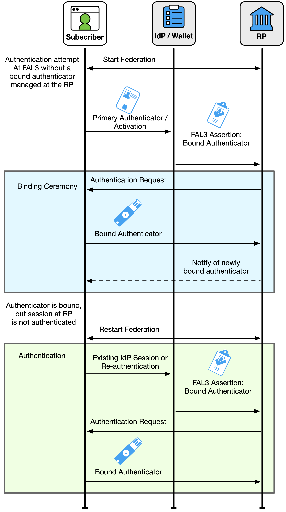
加入者提供のバインドされたオーセンティケーターは、RP が FAL3 トランザクションに使用することを許可する適切なオーセンティケーターに加入者が既にアクセスできる場合に特に役立ちます。 たとえば、[SP800-63B] のセクション 3.2.5.2 で説明されているように、加入者は名前ベースのフィッシング耐性を使用する単一要素暗号化認証器を持つことができます。このようなデバイスでは、オーセンティケーターが各場所で使用されると、IdP と RP は異なる検証キーを認識するため、バインドされたオーセンティケーターは IdP によって簡単に検証できません。さらに、RP はオーセンティケーターを発行しなかったため、RP はオーセンティケーターの検証キーを事前に認識しておらず、検証キーに関連付ける加入者アカウントも知りません。代わりに、RP はバインディング セレモニーを使用して、加入者がこのデバイスを FAL3 のバインドされたオーセンティケーターとして使用できるようにすることができます。 より完全な例は、セクション9.7にあります。
RP は、加入者が FAL3 で複数の加入者提供のオーセンティケータをバインドすることを許可してもよい (MAY)。この場合、RP サブスクライバ アカウントに 1 つ以上の既存のバインド オーセンティケータがある場合、バインディング セレモニーは、サブスクライバの既存のバインド オーセンティケータの 1 つを使用して FAL3 に到達します。バインディング セレモニーの最初の認証ステップ中に、RP は、既存のバインドされたオーセンティケーターによる認証を要求して FAL3 に到達するものとします (SHALL SHOULD)。この認証が完了し、バインディング セレモニー セッションが確立されると、RP は新しいオーセンティケーターによる認証を要求し、バインドされたオーセンティケーターとして RP 加入者アカウントに関連付けます。RP は、FAL3 で新しいアサーションを要求することで、拘束式を完了します。
RP がバインドされたオーセンティケーターが実行できなくなったと判断することに加えて、サブスクライバーは、テクノロジーやプラットフォームの変更によりオーセンティケーターが失われたり、侵害されたり、使用できなくなったりするなど、さまざまな理由でバインドされたオーセンティケーターの使用を停止することを選択できます。 このような場合、RP は、加入者が加入者提供のバインドされたオーセンティケータを RP 加入者アカウントから削除することを許可しても構いません(MAY),それによってそのオーセンティケータを FAL3 セッションに使用する機能を削除します。バインドされたオーセンティケーターが削除されると、RP は、加入者の現在の FAL3 セッションをすべて終了し、FAL3 の IdP から加入者の再認証を要求するものとします (SHALL SHOULD)。RP は、特にオーセンティケーターが紛失または侵害された場合、バインド解除プロセス中にサブスクライバーが問題のオーセンティケーターにアクセスできないことが多いため、削除されるオーセンティケーターで認証するようにサブスクライバーに促すことはありません。バインドされたオーセンティケータがすべて削除されると、新しいバインドされたオーセンティケータが RP サブスクライバ アカウントに追加されるまで、サブスクライバは FAL3 に到達できなくなります。この状況は、RP でのアカウント回復に同様のリスクをもたらします。
RP がバインドされたオーセンティケータに関連付けられたアサーションを受信すると、加入者はバインドされたオーセンティケータの所有を RP に直接証明します。IdP でのプライマリ認証と RP でのフェデレーション認証は別々に処理されます。加入者は、IdP でのプライマリ認証中に RP のバインドされたオーセンティケータと同じオーセンティケータを使用できますが、これらが同じであるとは想定されません。
次の要件は、バインドされたオーセンティケーターに関連付けられているすべてのアサーションに適用されます。
このセクションは規範的です。
汎用 IdP は、第 4.1 節で説明されているように、IdP をプロビジョニングするプロセスを通じて加入者アカウントを利用できるようにするために CSP が使用する IdP です。加入者は、4.5 節で説明されているように、加入者アカウントにバインドされた 1 つ以上の認証子を使用して、IdP に認証イベントを提供します。通常、汎用 IdP は、加入者のデバイスではなく、リモート サービスでホストされます。多くの場合、汎用 IdP は複数のサブスクライバをサポートします。
IdP を介してサブスクライバ アカウントを利用できるようにするには、サブスクライバ アカウントを IdP でプロビジョニングする必要があります。加入者アカウントが IdP に提供される手段は、信託契約で開示されるものとします。
IdP が加入者を認証できる必要があるため、IdP は多くの場合 CSP のサービスであり、加入者アカウントの属性とオーセンティケータにある程度のアクセス権を持ちます。このような IdP は、通常、加入者アカウントを収容する ID およびアクセス管理システムと同じセキュリティ ドメインにあります。
また、サブスクライバ アカウント内の 1 つ以上のオーセンティケータ (共通の PKI に関連付けられたオーセンティケータなど) をセキュリティ ドメインの外部で検証できる場合もあります。このような場合、IdP はオーセンティケータから加入者属性とアカウント情報を取得して、RP にフェデレーション ログインを提供できます。
IdP は、フェデレーション識別子などのフェデレーション固有の属性を使用してサブスクライバーアカウントを強化します。IdP は、信頼契約で列挙されているプライバシーおよびストレージ要件に従って、フェデレーションの目的で追加の属性を収集できます。
CSP は、サブスクライバ アカウントから IdP に属性を属性値、派生属性値、または属性バンドルとして提供できます。CSP は、IdP に発行された属性バンドルに署名するものとします。
サブスクライバ アカウントが IdP にプロビジョニングされると、CSP は信頼契約の当事者になりますが、フェデレーション トランザクションには直接関与しません。 したがって、RP が CSP によってホストされる ID API を介して属性を取得する場合でも、これらのガイドラインの目的では、ID API は CSP ではなく IdP の機能と見なされます。
汎用 IdP を含むフェデレーション トランザクションは、IdP でサブスクライバ アカウントを確立し、RP でサブスクライバの認証済みセッションで最高潮に達します。このプロセスを図6に示します。
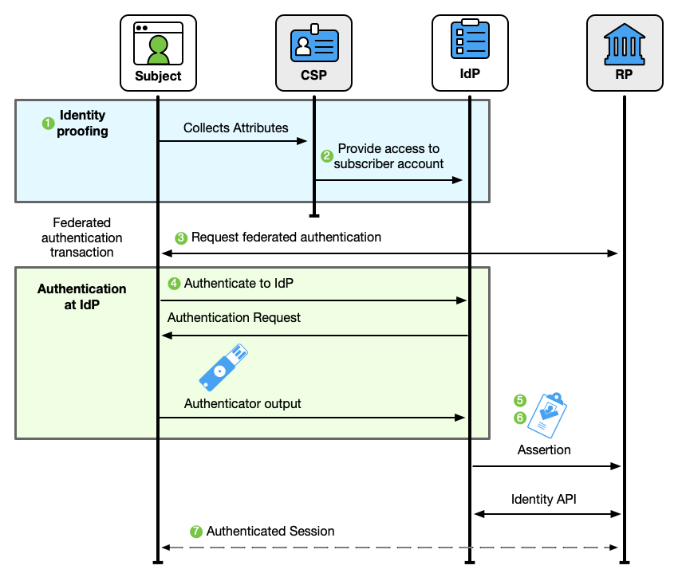
フェデレーション・トランザクションは、多段階のプロセスです。
フェデレーションが発生する前に、サブスクライバー アカウントが CSP によって確立されます。このアカウントは、CSP によって収集された ID 属性を、サブスクライバーが使用する一連の認証子にバインドします。
サブスクライバアカウントは IdP でプロビジョニングされます。IdP は、フェデレーション識別子などのフェデレーション固有の属性を使用してサブスクライバーアカウントを強化します。
IdP と RP は、RP への加入者を認証するためにフェデレーテッド認証トランザクションを開始します。
サブスクライバーは、サブスクライバーアカウントにバインドされたオーセンティケーターを使用して IdP に対して認証します。信頼契約で義務付けられている場合、権限のある当事者 (多くの場合、加入者) は、実行時に ID 情報の公開を承認するように求められます。
IdP は、認証イベントの結果を表すアサーションを作成します。アサーションは、信頼契約によって確立された条件、RP からの要求、IdP の機能、IdP が認識しているサブスクライバ アカウント、および許可された当事者が許可する属性に基づいています。
アサーションは、ネットワークを介してRPに渡されます。
RP は IdP からこのアサーションを処理し、サブスクライバとの認証済みセッションを確立します。オプションで、RP は、アサーションまたは ID API を介して、サブスクライバ アカウントを表す IdP から ID 属性を受け取ります。
フェデレーテッド・トランザクションは、第3.5条で説明されているように、信頼契約によって有効になります。これらの信頼契約は、どの当事者がどの役割を果たしているか、当事者が相互に操作する条件、問題のシステムが接続するための許可、および当事者が相互に対話する条件を定義します。多くの場合、1つの信頼契約は複数のフェデレーション・トランザクションを対象としています。使用可能な加入者ID属性、派生属性、および属性バンドルのリストは、信頼契約で確立されますが、特定のトランザクションに対して特定のRPにどの属性を解放するかの決定は、フェデレーション・トランザクション自体で最終決定されます。RPに渡される属性、派生属性値、および属性バンドルの最終セットは、以下を処理することによって選択されます。
IdP と RP は、フェデレーション プロトコルの当事者間で情報を安全に交換するために必要な暗号化キーと識別子を確立するために、検出と登録を実行する必要もあります (セクション 4.4 を参照)。(事前に確立された信頼契約を通じて) 接続の許可を表す既存のポリシー決定がある場合がありますが、このステップには技術レベルでの接続と統合が必要です。どの FAL でも、この段階は、加入者が RP にアクセスしようとする前に発生する可能性があります。FAL1 または FAL2 では、この段階は、加入者が RP で IdP を使用しようとすると応答して発生する可能性があります。
フェデレーテッド ID トランザクションでは、IdP は RP の ID および認証属性のソースです。フェデレーション・トランザクションの通常の情報フローは、IdP から RP へのものです。この情報フローの指向性により、IdP は RP のアップストリームと見なされ、RP は IdP のダウンストリームと見なされます。また、セクション 4.8 で説明されているように、特に共有信号の使用を通じて、追加情報が RP から逆流することも可能です。
汎用 IdP の信頼契約は、通常、RP と IdP の間で確立されることが期待されており、RP は IdP の ID に依存してフェデレーション トランザクションの信頼の基盤を提供します。CSP と IdP の間の信頼契約は、フェデレーション トランザクションとは独立して確立されることが期待されます。
汎用 IdP の信託契約は、次のいずれかを確立するものとします (MUST)。
信託契約が連邦取引の前に連邦当事者によって確立された場合、信託契約は以下の条件を定めるものとする(MUST)。
信託契約の条件は、RPおよびIdPの運営者が、その成立時に利用できるものとします。信託契約の条件は、IdPまたはRPへの要求に応じて加入者が利用できるようにするものとします。
IdPとRPは、苦情や問題の解決における有効性について、それぞれの救済メカニズムをそれぞれ評価し、この評価の結果を信託契約の一部として開示するものとします。救済メカニズムに関する追加の要件と考慮事項については、セクション 3.5.3 を参照してください。
FAL3が信託契約内で許可されている場合、信託契約は、鍵の所有者の主張(第3.15条参照)および拘束された認証者(第3.16条参照)に関して以下の条件を規定するものとする(SHOULD)。
共有シグナリングが IdP または RP によって使用される場合 (第 4.8 条を参照)、信頼契約の条件は以下を定めるものとします。
IdPでのランタイム決定(第4.6.1.3条参照)は、フェデレーテッド・トランザクションの当事者間で送信される加入者属性をさらに制限するために使用してもよい(例えば、この属性が信託契約の条件に含まれていたとしても、実行時の決定は、電子メール・アドレスを開示しないことを選択することができる)。
信託契約は、それが目的に適合していることを確認し、不必要なデータ交換や加入者データの過剰収集を回避するために、定期的に見直されるものとします(MUST)。
加入者の決定の結果として信託契約が確立された場合(たとえば、加入者が確立された契約なしにRPとそのIdP間のフェデレーショントランザクションを開始する場合)、信託契約は加入者によって固定されます。加入者主導の信託契約では、信託契約は、当事者間の正式な契約とは対照的に、一連の利用規約の形式をとります。したがって、以下の条件は、要求に応じて加入者に開示されるものとします。
IdPは、苦情や問題の解決における有効性について救済メカニズムを評価し、この評価の結果を加入者に開示するものとします。救済メカニズムに関する追加の要件と考慮事項については、セクション 3.5.3 を参照してください。
サブスクライバ属性のリリースは、セクション 4.6.1.3 で説明されているように、IdP でのランタイム決定を使用して管理されるものとします (SHOULD)。権限のある当事者は、加入者となるものとします。
信託契約の以下の条件は、実行時の決定中に加入者に開示されるものとします。
加入者に開示されるすべての情報は、第 8 条で説明されているように、理解可能で実行可能な方法で伝える必要があります。
汎用 IdP とのフェデレーション トランザクションを実行するには、第 3.6 節で説明されているように、RP はその IdP との検出と登録を実行する必要があります。
RPは、信頼契約で規定されているように、アサーション検証キーおよびその他の関連する構成情報をIdPの識別子に関連付けるものとします(SHOULD)。検証キーおよび構成情報がネットワーク接続を介して取得される場合、要求および取得は、信頼契約によってIdPの識別子に関連付けられた場所から、認証された保護されたチャネルを介して行われるものとします(SHOULD)。多くのフェデレーションプロトコルでは、これは、IdPによって制御される、またはIdPに代わって提供されるものとして信頼契約で指定されているURLから、RPが公開鍵および構成データを取得することによって実現されます。また、RPのシステム管理者がIdP情報をRPソフトウェアの構成に直接入力する、手動の方法でこの情報を使用してRPを直接構成することも可能です。
一部のシステム、特に多国間信託契約によって管理されるシステムでは、第三者の証拠開示および登録サービスによって証拠開示プロセスを促進できます。
さらに、RPは、信頼契約で規定されているように、IdPまたはIdPが信頼する機関のいずれかにその情報を登録するものとします(SHOULD)。多くのフェデレーションプロトコルでは、RPにはこの段階で識別子が割り当てられ、RPはその後のIdPとの通信でそれを使用します。
フェデレーションを試みる当事者は、信頼できる第三者が信頼契約で特定されている場合、その信頼できる第三者を使用して、その検出と登録のプロセスを容易にすることができます(MAY)。たとえば、コンソーシアムは、IdPとRPの構成レコードを参加者から直接収集するホスト型サービスを使用できます。RPは、その検出レコードのためにIdPに直接アクセスする代わりに、代わりにこのサービスに移動し、ターゲットIdPのキーマテリアルを取得します。IdPは、接続に必要なRPの識別子と構成情報を見つけるために、このサービスに移動します。このサービスは、多くの場合、セクション3.5.2で説明されているように、多国間信頼契約におけるフェデレーション権限の役割を果たすのと同じ当事者によって管理されます。
すべての FAL では、RP と IdP の暗号化キーと識別子を手動プロセスで交換でき、RP のシステム管理者が RP の設定を直接または信頼できるサードパーティを通じて IdP に送信し、その IdP で使用する識別子を受け取ります。次に、RP システム管理者は、この識別子と、フェデレーション トランザクションを続行するために必要な追加情報を使用して RP を構成します。
これは手動プロセスであるため、登録はフェデレーション トランザクションの前に行われます。
このプロセスは、手動構成によって、問題のシステムを時間の経過とともに更新できる信頼できる情報源に向ける、ある程度の自動化ツールによって促進される可能性があります。このような自動化が使用される場合、信頼契約は、許容されるキャッシュの有効期間を含む、暗号鍵の配布および割り当ての許容条件を列挙するものとする(MUST)。
FAL1 および FAL2 では、RP の暗号化キーと識別子を動的なプロセスで交換でき、RP ソフトウェアは直接または信頼できる第三者を通じてその構成を IdP に提示し、その IdP で使用する識別子を受け取ります。このプロセスは、使用中のフェデレーション プロトコルに固有ですが、ネットワーク経由で機械可読の構成データを利用できるようにする必要があります。構成情報のすべての送信は、信頼契約によって IdP の識別子に関連付けられたエンドポイントに対して、セキュアで保護されたチャネルを介して行われるものとします (SHOULD)。
IdPは、複数のRPインスタンスへの情報漏えいのリスクを考慮し、第3.4.1節で論じられているように、動的に登録されたRPにアクセスする加入者に対してPPIを発行するなど、適切な対策を講じるべきである(SHOULD)。
動的登録は、セクション 3.6.3 で説明されているように、RP ソフトウェアおよびデバイスに関する証明によって拡張されるべきです (SHOULD)。
[OIDC-Registration] は、OpenID Connect IdP で RP を動的に登録するためのプロトコルを定義します。
フェデレーションのコンテキストでは、[SP800-63B]で説明されているように、IdPはサブスクライバアカウントにバインドされたオーセンティケータの検証者として機能します。 1 つ以上のオーセンティケーターを検証すると、IdP で認証されたセッションを開始する認証イベントが作成されます。この認証イベントは、サブスクライバーが存在するという IdP の主張の基礎として機能します。
IdPは、サブスクライバが以下のイベントのいずれかの前に認証されたセッションを持つことを要求するものとします(SHALL SHOULD)。
セッション管理と再認証に関する追加の要件については、セクション 4.7 で説明します。
信託契約によって規定された権限のある当事者は、フェデレーショントランザクションが続行されるかどうか、したがって、アサーションが発行され、属性がRPに解放されるかどうかを決定するものとします(MUST)。この決定は、次のようなさまざまな方法で計算できます。
許可リスト、ブロックリスト、またはランタイム決定の適用可能性は、IdP と RP の ID、要求されたサブスクライバー属性、必要な xAL、その他の要因など、フェデレーション・トランザクションの側面によって影響を受ける可能性があります。これらの決定は、リスク管理システム、連邦当局、およびローカル システム ポリシーによって促進できます。
エンタープライズアプリケーションのシングルサインオンを容易にするために、一連のサブスクライバのIdPで許可リストに登録されているRPの非規範的な例については、セクション9.5を参照してください。
IdPは、加入者の苦情や問題(例えば、加入者が不正確な属性値を特定した場合)を是正するための効果的なメカニズムを提供するものとする(SHOULD)。救済メカニズムに関する追加の要件と考慮事項については、セクション 3.5.3 を参照してください。
事前に確立された信頼契約において、IdPは、加入者からの実行時の決定なしに、IdPから認証および属性を受信する権限を与えられたRPの許可リストを確立してもよい(MAY)。RP を許可リストに載せる場合、IdP は RP が信託契約の条件を遵守していることを確認するものとします (MUST)。IdP は、認証時に許可リストに登録された RP に渡される ID 属性を決定するものとします (SHALL )。IdPは、第7.2条に記載されているように、加入者が許可リストを利用できるようにするものとする(SHOULD)。
IdP 許可リストは、完全修飾ドメイン名、暗号化キー、または使用中のフェデレーションプロトコルに適用可能なその他の識別子を通じて RP を一意に識別するものとします(SHALL SHOULD)。識別子を共有するエンティティは、許可リストの目的上同等と見なされるものとします(SHALL SHOULD)。許可リストは、RP の意図しないなりすましを避けるために、可能な限り具体的であるべきです (SHOULD)。RP の許可リスト エントリは、ワイルドカード ドメイン識別子を使用しないでください。
RP の IdP 許可リスト エントリは、許可リストの決定の一部として含まれる属性を示すものとします (SHALL )。RP によって追加の属性が要求された場合、要求は次のようになります。
IdP 許可リスト エントリは、トランザクションに必要な xAL など、フェデレーション トランザクションの側面に基づいて適用しても構いません (MAY)。たとえば、IdP は許可リスト エントリを使用して FAL1 トランザクションの同意画面をバイパスできますが、FAL3 トランザクション中はサブスクライバーからの同意の確認を要求できます。
IdP は、加入者から要求された場合でも、IdP から認証アサーションまたは属性を受信する権限を持たない RP のブロックリストを確立しても構いません。RP が IdP のブロックリストにある場合、IdP はいかなる状況においても、問題の RP を標的とするアサーションを生成しないものとします。
IdP ブロックリストは、使用中のフェデレーションプロトコルに適用可能な完全修飾ドメイン名、暗号鍵、またはその他の識別子を使用して RP を一意に識別するものとします(SHALL SHOULD)。識別子を共有するエンティティは、ブロックリストの目的上同等と見なされるものとします(SHALL shall the Protocol)。たとえば、ワイルドカード ドメイン識別子 "*.example.com" は、ドメイン "www.example.com"、"service.example.com"、および "unknown.example.com" に等しく一致します。これら 3 つのサイトはすべて、同じブロックリスト エントリによってブロックされます。
IdP との信頼契約に加入しているが、その IdP との許可リストに載っていないすべての RP は、実行時の承認の決定が信頼契約によって識別される許可された当事者によって行われるデフォルトのポリシーによって管理されるものとします (MUST)。ランタイムの決定はフェデレーション・トランザクション中に行われるため、許可された当事者は一般に個人であり、ほとんどの場合、サブスクライバーです。ただし、サブスクライバーに代わってシステム管理者などの別の当事者がプロンプトを表示することは可能です。加入者主導の信頼契約では、加入者との実行時決定が、加入者属性の解放を承認する唯一の手段です。
ランタイムの決定を処理する場合、IdP はフェデレーション トランザクション中に許可されたパーティに対話的にプロンプトを表示します。権限のある当事者は、認証アサーションと特定の属性を RP にリリースすることに同意します。IdPは、加入者に関する属性がRPに送信される前に、権限のある当事者に明示的な通知を提供し、肯定的な確認を促すものとする(MUST)。少なくとも、通知は、第 7.2 条に従って、最も効果的な通知を提供し、確認を得る立場にある当事者によって提供されるべきです。IdPは、トランザクションが承認された場合にどの属性がRPに解放されるかを開示するものとします(MUST)。使用中のフェデレーションプロトコルが実行時にオプションまたは選択的な属性の開示を許可する場合、権限のある当事者には、フェデレーショントランザクションを完全に終了することなく、特定の属性をRPに送信するかどうかを決定するオプションが与えられるものとします(SHOULD)。
許可された当事者が加入者である場合、IdPは、加入者がRPに送信される属性値および派生属性値を表示するためのメカニズムを提供するものとします(SHALL )。機密情報(ショルダーサーフィンなど)の不正な漏洩のリスクを軽減するために、IdP SHALLはデフォルトで、加入者に表示される機密情報をマスクします。マスキングの詳細については、ユーザビリティに関する考慮事項に関するセクション 8 を参照してください。
IdP は、権限のある当事者の決定を記憶し、同じ属性セットを同じ RP に再送信するメカニズムを採用しても構いません (MAY)。このメカニズムは、IdP によって管理されるサブスクライバーアカウントに関連付けられています。そのようなメカニズムが提供されている場合、IdPは、ストレージメカニズムが使用されていることを権限のある当事者に開示し、権限のある当事者が将来そのような記憶されたアクセスを取り消すことを許可するものとします。
RP は、IdP を使用するかどうかの加入者からの実行時の決定なしに、RP が認証および属性を受け入れる IdP の許可リストを確立しても構いません。実際には、多くの RP は 1 つの IdP のみとインターフェイスし、この IdP はその RP の唯一の可能なエントリとして許可リストに登録されます。IdP を許可リストに入れる場合、RP は、IdP が信託契約の条件を遵守していることを確認するものとします (SHOULD)。この確認は、連邦当局によって促進されることも、RP によって直接行われることもできます。
RP 許可リストは、完全修飾ドメイン名、暗号鍵、または使用中のフェデレーション プロトコルに適用可能なその他の識別子を通じて IdP を一意に識別するものとします (SHALL SHOULD)。許可リストは、IdP の意図しないなりすましを避けるために、可能な限り具体的にすべきです (SHOULD)。IdP の許可リスト エントリは、ワイルドカード ドメイン識別子を使用しません。
RP 許可リスト エントリは、トランザクションに必要な xAL など、フェデレーション トランザクションの側面に基づいて適用できます (MAY)。たとえば、RP は FAL1 トランザクションにはランタイム決定を使用できますが、FAL3 トランザクションには許可リストに登録されている IdP を要求できます。
RP は、加入者から要求された場合でも、RP が認証または属性を受け入れない IdP のブロックリストを確立しても構いません。ブロックリストに登録された IdP は、両方が同じフェデレーション機関の下にある場合など、RP と有効な信頼契約を結んでいる可能性があります。
RP ブロックリストは、完全修飾ドメイン名、暗号鍵、または使用中のフェデレーションプロトコルに適用可能なその他の識別子を通じて IdP を一意に識別するものとします (SHALL )。識別子を共有するエンティティは、ブロックリストの目的上同等と見なされるものとします(SHALL shall the Protocol)。たとえば、ワイルドカード ドメイン識別子 "*.example.com" は、ドメイン "www.example.com"、"service.example.com"、および "unknown.example.com" に等しく一致します。これら 3 つのサイトはすべて、同じブロックリスト エントリによってブロックされます。
RP との信頼契約を結んでいるが、その RP との許可リストに載っていないすべての IdP は、実行時の承認の決定が信頼契約に示されている権限のある当事者によって行われるデフォルトのポリシーによって管理されるものとします (MUST)。このモードでは、認証を受けたパーティは、加入者に代わって認証のために接続する IdP を選択または入力するように RP から求められます。このプロセスは、加入者が電子メール アドレスなどの人間向けの識別子を入力できる検出メカニズムによって促進され、入力されたアドレスの IdP をプログラムで選択するために使用される。実行時の決定はフェデレーション・トランザクション中に行われるため、許可された当事者は通常、個人であり、ほとんどの場合、サブスクライバーです。
RPは、特定のIdPを使用するという権限のある当事者の決定を記憶するメカニズムを採用してもよい(MAY)。このメカニズムはRPでの認証の前に採用されるため、RPがこのメカニズムを提供する方法(例えば、認証されたセッションの外部にあるブラウザのクッキー)は、第3.8節で説明されているように、RP加入者アカウントとは別のものです。そのようなメカニズムが提供されている場合、RPは、ストレージメカニズムが使用されていることを権限のある当事者に開示し、権限のある当事者が将来そのような記憶されたアクセスを取り消すことを許可するものとします(SHOULD)。
RP 加入者アカウントのプロビジョニング プロセスのライフサイクルは、第 3.5 条で説明した信頼契約や、IdP と RP の展開パターンなどの要因によって異なります。ただし、いずれの場合も、RP サブスクライバ アカウントは、RP で認証されたセッションが確立される前に、次のいずれかの方法で RP でプロビジョニングされるものとします。
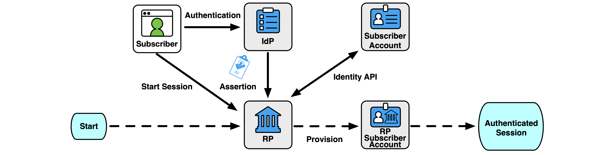
このモデルでは、RP は、まだ RP と対話していない、または対話しない可能性のあるサブスクライバに関する属性も受け取ります。これは、RP が RP を使用する加入者のサブセットに関する情報のみを受信し、加入者が初めて RP を使用した後にのみ受信する他のモデルとは対照的です。フェデレーション取引の前にこの情報にアクセスできるRPのプライバシー上の考慮事項は、信託契約で説明されるものとします(SHOULD)。
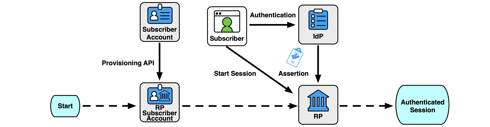
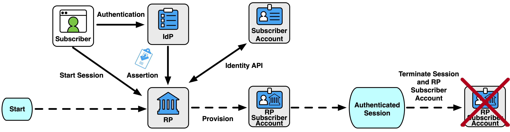
すべての組織は、信頼契約の一部としてプロビジョニング モデルを文書化するものとします (SHOULD)。
フェデレーテッド・プロセスでは、IdP と RP はそれぞれ、サブスクライバ・アカウントに関連付けられた独自の ID 属性ストアを持ちます。IdP はサブスクライバ アカウントの属性を直接表示できますが、RP サブスクライバ アカウントは、フェデレーション トランザクション中に表示される属性のサブセットから派生します。したがって、IdP と RP の属性ストアは、時間の経過とともに互いに分岐する可能性があります。
RP の観点から見ると、IdP は、IdP のサブスクライバアカウントに関連付けられていると IdP がアサートするすべての属性の信頼できるソースです。 ただし、RP は、第 4.6.6 条で説明されているように、RP 加入者アカウントに関連付ける他の属性を収集し、オプションで検証しても構いません。
IdP は、アサーションのたびに更新された属性を RP にプロアクティブにプッシュすることは可能ですが、この方法では、すべてのトランザクションで個人情報が公開されます。各トランザクションで送信される個人情報の量を制限するために、IdP は、RP が利用できる加入者アカウントの属性が更新されたときに、ダウンストリーム RP に通知する必要があります。RP は、IdP に新しい属性を要求し、RP サブスクライバ アカウントを更新することで、このシグナルに応答しても構いません。この同期は、共有シグナリング(第4.8条を参照)、プロビジョニングAPI(第4.6.5条を参照)、またはRPにシグナリング(たとえば、加入者アカウント属性が最後に更新された日時のタイムスタンプを提供すること)によって実現し、ID APIを介して更新された属性を要求します(第3.12.3条を参照)。
RP に ID API へのアクセスが許可されている場合、IdP は、フェデレーション トランザクションの終了後に同期操作を実行するのに十分な時間、RP が ID API にアクセスすることを許可すべきです (SHOULD)。 ID API は、最初のログイン時、特にジャストインタイムのプロビジョニングプロセスで最もよく使用されますが、後続のログインでは、RP が最後に属性をフェッチしてから属性が変更されている可能性があります。したがって、RP は、RP サブスクライバ アカウント内の属性のキャッシュを更新できるように、最初のログイン プロセスを超えて ID API へのアクセス権を付与する必要があります。 たとえば、アサーションが 5 分間有効な場合、ID API へのアクセスは 30 分間有効になり、RP サブスクライバ アカウントが古くなっていると RP が帯域外で属性をフェッチして更新できるようになります。
IdP は、加入者アカウントが終了したとき、または加入者アカウントの RP へのアクセスが取り消されたときに、ダウンストリーム RP に通知すべきです (SHOULD)。これは、共有シグナリング(セクション 4.8 を参照)、プロビジョニング API(セクション 4.6.5 を参照)、または帯域外メカニズムを通じて実現できます。このようなシグナルを受信すると、RPは、信託契約に規定されているように、第3.11.3条に従って、RP加入者アカウントを処理するものとします。終了の理由が疑わしい活動または詐欺的な活動である場合、IdPは、RPに終了を通知し、RPへのシグナルにその理由を含めて、RPとの信頼契約に明記されている場合、関連するRP加入者アカウントの活動に疑わしい活動がないか確認できるようにするものとする(MUST)。
事前プロビジョニングの一環として、プロビジョニング API と呼ばれる汎用 ID API を介して RP に加入者属性へのアクセス権を付与できます。このタイプの API を使用すると、IdP はさまざまなサブスクライバ アカウントの属性をプッシュでき、場合によっては RP がこれらのサブスクライバ アカウントの属性を直接クエリできます。API へのアクセスはフェデレーション トランザクションのコンテキストの外部で許可されるため、特定のサブスクライバのプロビジョニング API へのアクセスは、特定のサブスクライバが認証されたことを RP に示しません。
特定の RP が利用できるプロビジョニング API の属性は、第 3.10.1 条で説明されているように、監査およびセキュリティの目的を含む、RP がその機能を実行するために必要なもののみに制限されるものとします。信頼契約の確立の一環として、IdP は、RP にプロビジョニング API へのアクセス権が付与されたときに、少なくとも以下を含む文書化を行うものとします。
プロビジョニング API へのアクセスは、相互に認証された保護されたチャネルを介して行われるものとします (SHALL )。認証の正確な方法は、API の詳細と、それがプッシュ モデル (つまり、IdP が RP への接続を開始する) かプル モデル (つまり、RP が IdP への接続を開始する) かによって異なります。
プロビジョニング API は、加入者主導の信頼契約に基づいて利用できないものとします。IdP は、確立された信頼契約以外の RP がプロビジョニング API を利用できるようにしてはなりません。IdP は、RP とのフェデレーション ID 関係の一部としてのみ、プロビジョニング API へのアクセスを提供し、その RP とのフェデレーション トランザクションおよびサブスクライバー アカウントのシグナリング失効などの関連機能を容易にするものとします。IdP は、RP が機能目的でアクセスを必要としなくなった場合、または信託契約が終了した場合、プロビジョニング API への RP のアクセスを取り消すものとします (SHALL SHOULD)。
RP に提供されるプロビジョニング API は、IdP の管理および管轄下にあるものとします。外部属性プロバイダーは、このプロビジョニング API を通じて属性を提供するために IdP によって情報ソースとして使用されても構いませんが、IdP は、参照される属性プロバイダーによって提供される情報の内容と正確性に責任を負います。
プロビジョニング API が使用されている場合、IdP は、アカウントが終了または無効になったときなど、サブスクライバー アカウントの状態が変更されたときに RP に通知するものとします。このようなシグナルを受信した場合、RPは、アカウントからフェデレーテッド識別子のバインディングを削除するものとします(SHOULD)。RP は、加入者がアクセスできなくなった場合、RP 加入者アカウントを終了しても構いません。RPは、プロビジョニングAPIから取得されたすべての個人情報を、第3.11.3条に従って取り扱うものとします。
SCIM [RFC7644] などのプロビジョニング API は、セクション 9.5 の例に示すように、IdP と RP の間に確立された関係があるエンタープライズ シナリオでよく使用されます。
RP は、IdP によって提供される属性を超えて、加入者から追加の属性を収集し、維持してもよい (MAY)。たとえば、RP は、IdP によって提供されない優先表示名を加入者から直接収集できます。RP は、IdP に関連付けられていない ID API へのアクセスを RP に付与する属性プロバイダーと個別の契約を結ぶこともできます。たとえば、RP は IdP から州のライセンス番号を受け取りますが、別の属性検証 API を使用して、特定のライセンス番号が現在有効かどうかを確認できます。IdP からのアサーションはライセンスをサブスクライバーにバインドしますが、属性検証 API は、IdP が共有または権限を持つことができる範囲を超えた追加情報を提供します。
これらの属性は、フェデレーション・トランザクションの外部で RP によって収集されるため、信頼契約とは別に管理されます。ただし、RP加入者アカウントのすべての属性は、ソースに関係なく、第3.11.3条に従って保存されるものとします(SHOULD)。
RPは、追加の属性を収集する目的を加入者に開示するものとします(MUST)。これらの属性は、RP の機能の明示された目的にのみ使用されるものとします (SHALL )。追加で収集された属性の送信は、第 3.10.1 条に従って処理されるものとします。
RPは、加入者が、RP加入者アカウントからこれらの追加収集された属性を更新および削除するための安全かつ効果的な救済手段を提供するものとします(SHOULD)。救済メカニズムに関する追加の要件と考慮事項については、セクション 3.5.3 を参照してください。
次の要件は、連邦政府機関が独自の ID サービスを運用しているか、ID サービスの一部として外部 CSP を使用しているかに関係なく、連邦政府機関に適用されます。
RP がジャストインタイム プロビジョニング メカニズムを使用している場合、RP は、そのアカウントが RP で最初に使用されたときにのみ、サブスクライバ アカウントの存在を学習します。IdP が共有シグナリングを使用して終了した加入者アカウントを RP に通知しない場合(第 4.8 節を参照)、RP は IdP からアクセスできなくなった RP 加入者アカウントを蓄積する可能性があります。これにより、RP サブスクライバー アカウントに個人情報を保持し、攻撃者が標的にする悪用可能なアカウントを提供するというリスクが生じます。このような状況において、RPは、アプリケーションの使用パターンに合わせた一定期間後にアクセスされなかった終了のRP加入者アカウントを識別するために、時間ベースのメカニズムを採用してもよい(MAY)。たとえば、通常は毎週アクセスされる RP では、RP での最後のアクセスから 120 日間のタイムアウトを設定して、RP サブスクライバ アカウントに終了のマークを付けることができます。アクセス間の間隔が長くなると予想される RP (たとえば、毎年使用されるサービス) は、5 年など、時間ベースの終了の期間をはるかに長くする必要があります。
非アクティブなアカウントを処理する場合、RPは、アカウントの保留中の終了について加入者に十分な通知を提供し、予定された終了前にアカウントを再アクティブ化するオプションを加入者に提供するものとします(SHOULD)。終了時に、RPは、第3.11.3条に従って、RP加入者アカウントに関連するすべての個人情報を削除するものとします。
フェデレーテッド環境では、RP は IdP のセッションとは別にセッションを管理します。アサーションは両方のセッションに関連していますが、その有効期間は最終的にはセッションから独立しています。
図10に示すように、IdPでの認証セッション中にアサーションが作成され、アサーションを処理することでRPで認証セッションが作成されます。アサーションの有効期間は、RP によるアサーションの処理を管理するために使用されますが、IdP または RP での認証済みセッションの有効期間を示すものではありません。サブスクライバーのセッションが IdP でまだ有効である間に、新しいフェデレーション トランザクションの要求が IdP に届くと、独自の有効期間を持つ新しい個別のアサーションが作成されます。同様に、RP がアサーションを使用した後、RP のセッションの有効性はアサーションの有効性とは無関係です。ほとんどの場合、RP での認証されたセッションは、アサーションの有効性をはるかに上回ります。ID API に付与されるアクセス権は、同様に、アサーションの有効性や RP での認証されたセッションの有効期間とは無関係です。
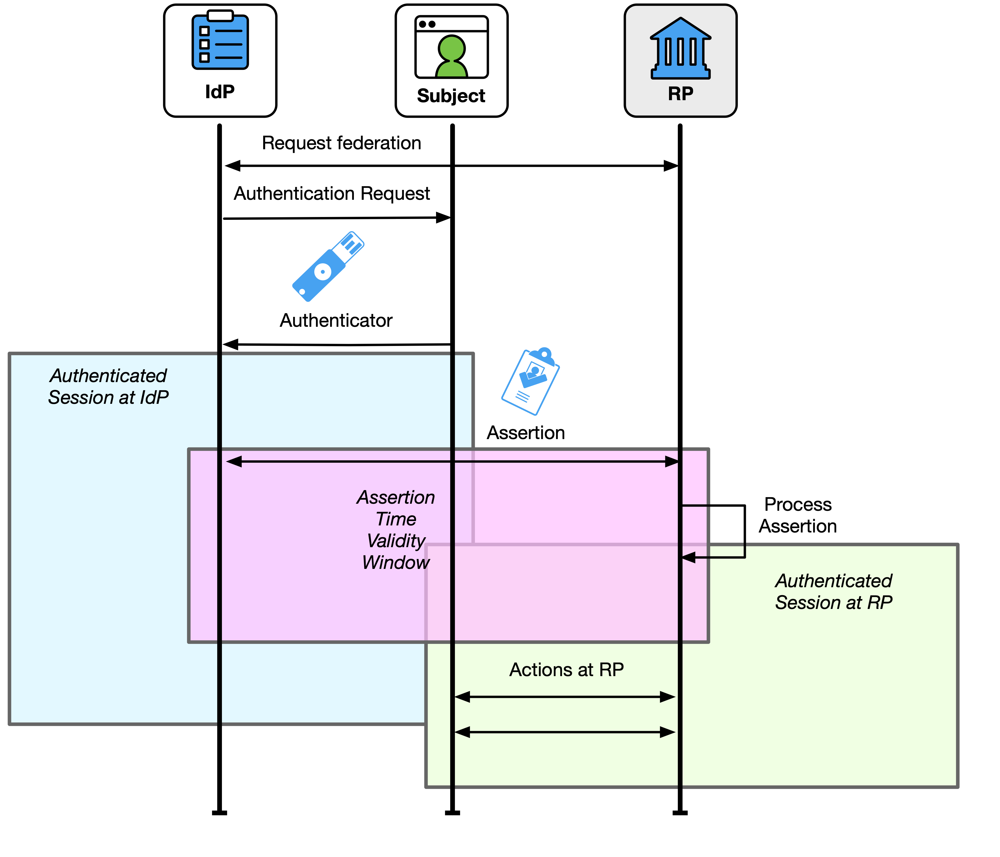
IdP で加入者のセッションを終了しても、サブスクライバがダウンストリーム RP で持つ可能性のあるセッションが必ずしも終了するとは限りません。RPとIdPは、フェデレーションプロトコルまたは共有シグナリングによってサポートされている場合、エンドセッションイベントを相互に通信してもよい(MAY)。
フェデレーテッド・トランザクション要求の時点で、サブスクライバは、RP へのアサーションを生成するために使用できる、IdP に既存の認証済みセッションを持つことができます。IdPは、IdPにおける加入者の最新の認証イベントの最新性に関してIdPが持っているあらゆる情報をRPに伝達するものとし、RPは、この情報を使用して承認およびアクセスの決定を行うことができます(MAY)。使用中のフェデレーション プロトコルの機能に応じて、IdP は、加入者の最後の認証イベントからの最大時間を要求するなど、加入者が IdP で新しい認証を提供するよう要求することを RP に許可すべきです (SHOULD)。たとえば、サブスクライバーが 1 つのトランザクションに対して IdP で認証するとします。その後、加入者は 30 分後に RP でフェデレーション トランザクションを開始します。xAL の要件に応じて、IdP でのサブスクライバーの既存のセッションを使用して、サブスクライバーにオーセンティケーターの入力を求める必要を回避できます。RP に対する結果のアサーションは、加入者が最後に RP に対して認証した時刻が過去 30 分であることを示します。RP は、この情報を使用して、これが RP のニーズにとって妥当かどうかを判断できます。認証時間が RP に十分でない場合、RP は IdP に要求して、加入者に新しい認証イベントを求めることができます。
RP がアサーションを受信した時点で RP に ID API へのアクセスが許可された場合、ID API へのアクセスの有効期間はアサーションの有効期間とは無関係です。その結果、ID API を介して追加の属性を正常にフェッチする RP の機能は、RP でのセッションの確立または拡張には使用されません。同様に、ID API にアクセスできないことを使用して、RP でのセッションを終了しないでください。
RP は、フェデレーション トランザクション (サブスクライバーのカレンダーなど) 中に他の非 ID API へのアクセスを許可することもできますが、非 ID API はこれらのガイドラインの範囲外です。
RPは、アサーション、認証イベント、または属性がRPの要件を満たしていない場合、加入者との認証されたセッションを終了するか、RPの機能へのアクセスを制限してもよい(MAY)。たとえば、フェデレーション トランザクションが FAL3 の場合にのみ特定の高リスク機能へのアクセスを許可するように RP が構成されているが、受信アサーションが FAL2 の要件しか満たしていない場合、RP は、リスクの低い機能へのアクセスを許可しながら、リスクの高い機能へのアクセスを拒否するか、セッションを完全に終了することを選択できます。
IdP と RP の両方に適用されるセッション管理要件の詳細については、[SP800-63B] Sec. 5 を参照してください。
一部の環境では、IdP と RP がフェデレーション トランザクションの外部で相互に情報を送信すると便利です。これらのシグナルは、詐欺の疑いやアカウントステータスの変更など、他の方法では知られていない重要な状態の変化を当事者間で伝えることができます。共有シグナリングは、セクション 3.10.1 で説明されているように、ID プロセスの許容機能に限定されるものとします (SHALL shall shall be allowed function of the Identity Process of the Identity Process)共有シグナリングのすべての使用は、信託契約に文書化され、信託契約で規定された権限のある当事者が利用できるようにするものとします。このドキュメントには、シグナルが送信されるイベント、そのようなシグナルに含まれる情報の種類(個人情報を含む)、シグナルとともに送信される追加パラメータ、および受信したシグナルの予想される処理が含まれるものとします(SHALL SHOULD)。共有シグナリングの使用は、信頼契約に基づくプライバシーレビューの対象となるものとします(MUST)。共有シグナルには、問題の加入者アカウントを識別するために必要なもの(例えば、受信者が関連付けることができるアカウント識別子または属性)を除き、個人情報を含めないものとします(SHALL NOT)。
IdP から RP へのシグナリングには、事前に確立された信頼契約が必要とします (SHALL )。RP から IdP へのシグナリングは、事前に確立された信頼契約と加入者主導の信頼契約の両方で使用できます。
IdP は、サブスクライバー アカウントに対する以下の変更に関するシグナルを RP に送信すべきです (SHOULD)。
RP は、RP 加入者アカウントが侵害の疑いがあるというシグナルを受信した場合、RP は、そのアカウントが RP で行ったアクションに不審なアクティビティがないか確認すべきです。
RP は、RP サブスクライバ アカウントに対する以下の変更に関するシグナルを IdP に送信すべきです。
IdP は、加入者アカウントが侵害の疑いがあるというシグナルを受信した場合、IdP は、そのアカウントが IdP で行ったアクションを不審なアクティビティがないか確認するものとします。IdP で不審なアクティビティが確認された場合、IdP は、疑わしい期間に加入者アカウントが使用された追加の RP に通知するものとします。
IdP と RP の両方からの追加のシグナルは、セキュリティ レビューの対象となり、プライバシー リスク評価に含まれ、信託契約で対処されるものとします (MUST)。
RPが複数のIdPへのアカウントリンクを許可する場合、RPは、リンクされたアカウントのシグナルに関する慣行を文書化するものとします。RPは、共有シグナルが加入者のリンクされたIdPの身元を明らかにしないようにするものとする(SHOULD)。
アサーションは、IdP から RP へのステートメントで、認証された加入者の認証イベントに関する情報と、その加入者に関する、またはその加入者に関連付けられた属性値、派生属性値、または属性バンドルのセットが含まれます。アサーションは、属性情報に加えて、アサーションメタデータ、IdPでの加入者の認証に関する情報、およびRPが活用できるその他の情報(制限、有効期間など)など、さまざまなデータで構成されます。アサーションの主な機能はRPに対してユーザーを認証することですが、アサーションで伝達された情報は、RPによって多くのユースケース(ID証明、承認、Webサイトのパーソナライゼーションなど)に使用できます。これらのガイドラインは、選択したソリューションがここに含まれるすべての必須要件を満たしていることを条件に、RP のユースケースや ID のフェデレーションに使用されるプロトコルまたはデータ ペイロードのタイプを制限するものではありません。
アサーションは、IdP における加入者の個別の認証イベントを表すものとし、RP において個別の認証イベントとして処理されるものとします。
すべてのアサーションは、以下の属性を含むものとします(SHALL SHOULD)。
RP 加入者アカウントが一時的なプロビジョニング プロセスを使用しない場合、加入者は、フェデレーション識別子 (第 3.4 条を参照) を使用するか、アカウント解決プロセス (第 3.8.2 条を参照) を通じてアサーションで識別されるものとします (SHOULD)。
加入者がフェデレーション識別子を使用して識別される場合、アサーションには以下を含めるものとします。
フェデレーション取引の次の側面は、アサーション内容または該当する信託契約に含まれる情報を通じて提供されるものとします。
アサーションは、利用可能な場合、IdP で使用される認証方法に関する追加情報(たとえば、使用される認証がフィッシング耐性であるかどうか)を含むべきです(SHOULD)。情報を伝送できるテクノロジには、Vectors of Trust [RFC8485] や [OIDC] や [SAML] の認証クラス参照などがあります。
FAL2 以上では、アサーションには以下が含まれます。
FAL3 では、アサーションには以下のいずれかが含まれるものとします。
アサーションには、加入者認証シークレット(パスワードなど)が含まれてはなりません(MUST NOT)。
アサーションには、次のような追加項目も含まれる場合があります。
RPは、以下のすべてが真実であることを確認することによって、アサーションを検証するものとします(SHALL SHOULD)。
フェデレーテッド識別子を使用して加入者を識別するRPは、サブジェクト識別子をIdP間で本質的にグローバルに一意であるものとして扱わないものとします(SHOULD)。代わりに、アサーションのサブジェクト識別子の値は、セクション 3.4 で説明されているように、アサーション発行者の制御下にある名前空間で処理されます。これにより、RPは、異なるIdPのサブジェクトを誤って混同することなく、複数のIdPと通信できます。
RP への ID 属性のリリースには、信頼契約の条件が適用されます。セクション 3.10 には、アサーションで属性を提示するためのプライバシー要件が含まれています。RPは、アサーションが受信されたのと同じ応答で、または他のメカニズムを介して、ID APIへの制限付きアクセス(セクション3.12.3を参照)を付与されてもよい(MAY)。RP は、この API を使用して、アサーション自体に含まれていないサブスクライバの追加の ID 属性をフェッチできます。これらの属性は、信託契約の条件にも適用されます。
アサーションの有効期間は、発行から有効期限までの時間です。このウィンドウは、RP がアサーションを処理し、加入者用のローカル アプリケーション セッションを作成できる十分な大きさである必要がありますが、IdP と RP 間の妥当なクロック ドリフトを含め、そのような確立に必要な長さを超えてはなりません。長寿命のアサーションは、盗まれたり再生されたりするリスクが高くなります。アサーションの有効期間を短くすることで、このリスクが軽減されます。アサーションの有効期間は、RP でのセッションを制限するために使用してはなりません。詳細については、セクション4.7を参照してください。
フェデレーショントランザクションがRPによって開始されると、RPのアサーション要求には以下が含まれるものとする(SHALL SHOULD)。
RPの要求には、さらに以下を含めるべきです(SHOULD)。
フェデレーション・トランザクションが IdP によって (FAL1 で) 開始される場合、これらの要件は適用されません。フェデレーション・トランザクションは、常に FAL2 以上で RP によって開始されます。
ほとんどのフェデレーション プロトコルでは、RP と IdP は 2 つの方法で相互に通信し、それぞれを使用して IdP から RP にアサーションを渡すことができます。
各モデルにはトレードオフがありますが、どちらもアサーションの適切な検証が必要です。アサーションは、セクション 3.3.3 で詳細に説明されているように、異なるプレゼンテーション方法を使用して IdP と RP の間のフェデレーションを促進するためにプロキシされることもあります (MAY)。
図11に示すバックチャネルプレゼンテーションモデルでは、加入者には、通常はフロントチャネルを介してRPに提示するアサーション参照が与えられます。アサーション参照自体には、サブスクライバーに関する情報は含まれておらず、攻撃者による改ざんや捏造に耐性があるものとします(SHOULD)。RP は、アサーションを取得するために IdP にアサーション参照を提示します。これを実現する方法は、使用されているフェデレーションプロトコルによって異なります。認証コードフローおよび[OIDC]のハイブリッドフローのいくつかの形式では、アサーション参照(認証コード)と引き換えに、アサーション(つまり、IDトークン)がバックチャネルに表示されます。[SAML-Bindings] のアーティファクト バインディング プロファイルでは、SAML アサーションがバック チャネルに表示されます。
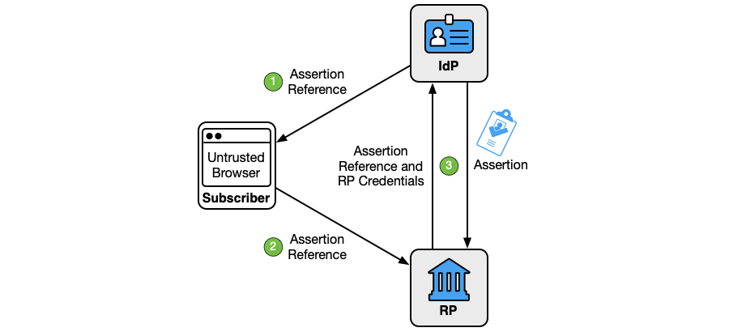
図11に示すように、バックチャネルプレゼンテーションモデルは3つのステップで構成されています。
アサーション参照:
このモデルでは、RP は IdP に直接アサーションを要求して、加入者を含む第三者による傍受や操作の可能性を最小限に抑えます。 バックチャネル方式では、フロントチャネル方式よりも多くのネットワークトランザクションが必要ですが、情報はそれを必要とする当事者のみに限定されます。RP は、リクエストの結果として IdP から直接アサーションを取得することしか期待していないため、攻撃対象領域は縮小されます。その結果、アサーションを RP に直接挿入することはより困難であり、このプレゼンテーション方法は FAL2 以上に推奨されます。 IdP と RP はすでに直接接続されているため、3.12.3 節で説明されているように、バックチャネル プレゼンテーション方式により ID API の使用が容易になります。
技術的には可能ですが、アサーション参照 (定義上は単一オーディエンス) がマルチオーディエンスのアサーションになる可能性は低いです。このため、バックチャネルプレゼンテーションは、実際には単一オーディエンスのアサーションでの使用に限定されます。
IdP から加入者へ、および加入者から RP へのアサーション参照の伝達は、認証された保護されたチャネルを介して行われるものとします。RP から IdP へ、またはその逆のアサーション参照の伝達は、認証された保護されたチャネルを介して行われるものとします。
RPは、クロスサイトスクリプティング(XSS)およびクロスサイトリクエストフォージェリ(CSRF)保護を使用し、フェデレーショントランザクションの正しい段階外のアサーション参照を拒否すること、または第3.11.1条で説明されているその他の受け入れられた手法を使用することにより、製造またはキャプチャされたアサーション参照の挿入から自分自身を保護するものとします(SHOULD)。 アサーション参照が IdP に提示される場合、IdP は、アサーション参照を提示する RP が、アサーション参照の結果となったアサーション要求を行ったのと同じ RP であることを確認するものとします (SHOULD)。この例は、セクション 9.12 で説明されており、[FAPI] や [iGov] などの追加のセキュリティ プロファイルを使用した [OIDC] の認証コード フローが含まれます。
フェデレーション プロキシ (セクション 3.3.3 を参照) では、アップストリーム IdP オーディエンスはアサーション参照とアサーションをプロキシに制限し、プロキシは新しく作成されたアサーション参照またはアサーションをダウンストリーム RP に制限します。
図12に示すフロントチャネルプレゼンテーションモデルでは、IdPはアサーションを作成し、加入者のユーザーエージェントなどのサードパーティを介してRPに送信します。暗黙的なフローと[OIDC]のハイブリッドフローのいくつかの形式では、アサーション(つまり、IDトークン)がフロントチャネルに表示されます。[SAML-WebSSO] で定義されている SAML Web SSO プロファイルでは、SAML アサーションがフロント チャネルに表示されます。
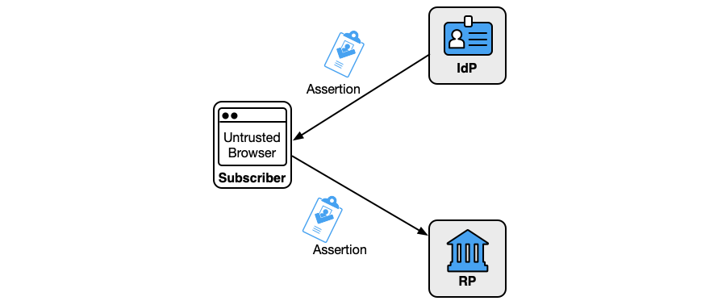
フロントチャネルの提示方式では、IdPやRP以外の当事者にアサーションが公開されるため、アサーションに含まれる個人情報が漏洩するリスクが高まります。さらに、攻撃者がアサーションをキャプチャして再生するための攻撃対象領域が増加します。その結果、他のメカニズムが利用可能な場合、フロントチャネルプレゼンテーションは推奨されません。
RPは、アサーション識別子を使用して、アサーションの有効期間内に特定のアサーションが最大で1回提示されるようにするものとします(SHOULD)。
RP は、XSS および CSRF 保護を使用し、フェデレーション トランザクションの正しい段階外のアサーションを拒否すること、または第 3.11.1 節で説明されているその他の受け入れられた手法を使用することにより、製造またはキャプチャされたアサーションの注入から自分自身を保護するものとします。
IdP から加入者へ、および加入者から RP へのアサーションの伝達は、認証された保護されたチャネルを介して行われるものとします。
汎用 IdP では、フロントチャネル通信は HTTP リダイレクトを使用して実現されるのが一般的であり、アサーションの内容は HTTP 要求 URL の一部として利用可能になります。HTTP エコシステムの性質上、これらのリクエスト URL は、アクセス ログ、Web プロキシ、ブラウザ履歴など、予期しない場所で利用できる場合があります。これらのアーティファクトは、フェデレーション トランザクションの後もずっと存続する傾向があり、他のコンテキストでも利用できるため、アサーションを読み取るための攻撃対象領域が増加します。その結果、アサーションのフロントチャネル表示にHTTPリダイレクトを使用するIdPは、第3.13.3条で説明されているように、アサーション内のすべての個人情報を暗号化するものとします(MUST)。これらの特性を共有しない他のフロントチャネル表示メカニズム(例えば、HTTP フォームポストバインディング、アプリケーション固有の URL)は、アサーション内のすべての個人情報を暗号化すべきです(SHOULD)。
このセクションは規範的です。
加入者制御ウォレットは、セクション5.1で説明されているように、CSPが属性バンドルの発行を通じて加入者アカウントの属性を利用できるようにするIdPです。加入者は、セクション5.4で説明されているように、アクティベーションファクターまたはオーセンティケーターを使用してウォレットをアクティブ化します。通常、加入者制御ウォレットは、加入者によって制御され、単一の加入者のみを表すデバイス上で実行されます。ただし、ウォレットは、クラウドウォレットと呼ばれるデプロイパターンでリモートシステムでホストすることもできます。
CSPがサブスクライバー制御ウォレットに属性バンドルを発行する場合、プロセスには次の手順が含まれるものとします(SHOULD)。
加入者が管理するウォレットは、CSP への発行要求ごとに異なる署名キーと検証キーを生成して使用しても構いません。
CSPは、リクエストするウォレットごとに一意の属性バンドルを作成し、個々のウォレットからのリクエストごとに一意の属性バンドルを作成するべきである(SHOULD)。
多くの加入者制御ウォレットは、複数の CSP からの属性バンドルを同時に持ち運ぶことができます。複数の CSP からの属性バンドルを 1 つのアサーションで同時に表示することは、一部のテクノロジーで可能です。これが発生した場合、複数の属性バンドルのアサーションは、このガイドラインのアサーション要件に準拠するものとします(MUST)。
\clearpage
CSPは、サブスクライバが管理するウォレットに発行された属性バンドルを無効にする手段を提供するものとします(SHOULD)。このプロセスは、次の場合に使用されます。
これを実現するために、CSP は有効期間限定の属性バンドルを発行すべきです (SHOULD)。CSP は、属性バンドルのステータス (つまり、特定のバンドルが CSP によって取り消されたかどうか) を個別に検証する手段を提供するべきです (SHOULD)。そのようなサービスが提供される場合、サービスは、特定のRPでの特定の属性バンドルの使用についてCSPに警告されないように、プライバシーを保護する方法で展開されるものとします(MUST)。
加入者制御ウォレットとのフェデレーショントランザクションは、加入者のデバイスを加入者アカウントのIdPとして確立し、RPで加入者用の認証されたセッションを作成します。そのプロセスを図13に示します。
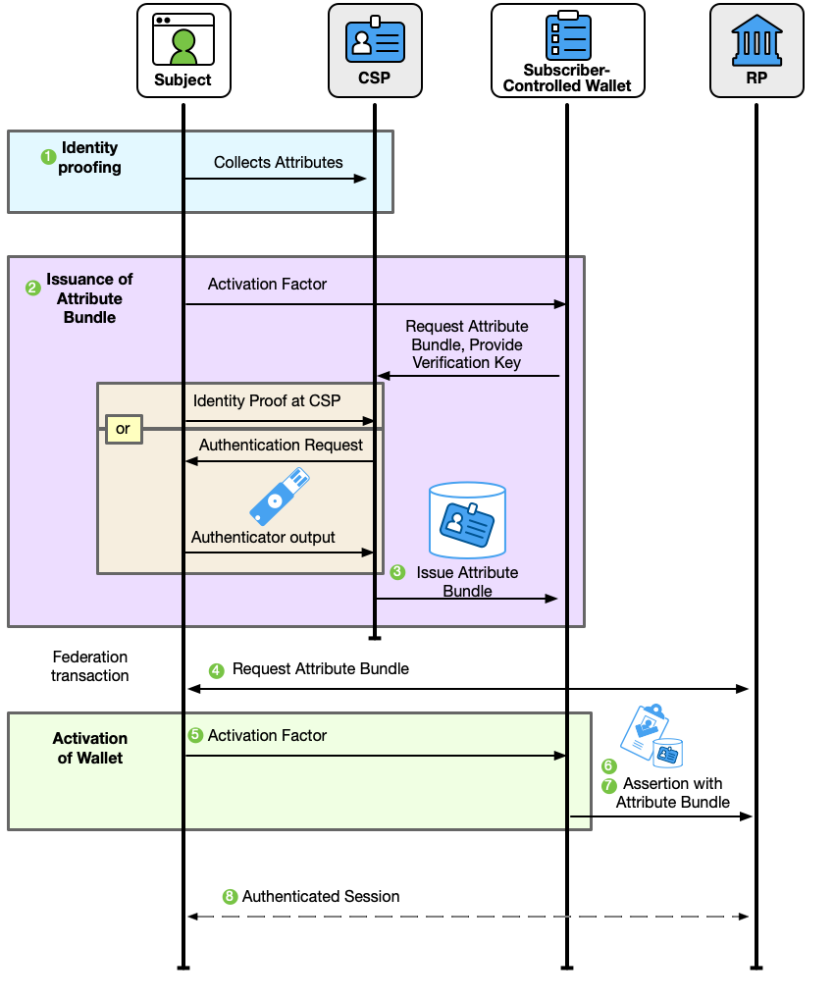
加入者制御ウォレットとのフェデレーショントランザクションは、いくつかのステップで行われます。
加入者制御ウォレットのアーキテクチャと設計により、フェデレーテッド トランザクションをサポートする信頼契約は、汎用 IdP よりも直接的ではありません。プライバシーの結果を維持し、ユーザー トランザクションの追跡を防ぐために、CSP と RP は通常、相互に直接通信しません。次の要件は、すべてのサブスクライバー制御ウォレットシナリオに適用されます。
RP が必要とする xAL は、実行時にサブスクライバに開示してもよい (MAY)。
加入者に開示されるすべての情報は、第 8 条で説明されているように、理解しやすく、実行可能な方法で伝える必要があります。
加入者制御のウォレット シナリオにおける CSP と RP の間の信頼は、通常、双方向ではありません。一般的なケースでは、RP はフェデレーション トランザクション中に加入者制御ウォレットによって提示される属性バンドルのソースとして CSP を信頼しますが、CSP は RP を直接認識することは期待されていません。RPとCSPの間のこの信頼関係は、RP、CSP、および加入者管理ウォレットを表すエコシステムのメンバー間の包括的な信頼契約を定義するフェデレーション機関(セクション3.5.2を参照)によって促進される可能性があります。そのような信託契約には、以下を含むものとします。
信頼は、CSPおよび属性バンドルを発行するためのプロセスに関する公開情報のRP評価によって一方的に確立されることもあります(MAY)。これを容易にするために、CSP は、RP が評価できるように、次の情報を信頼できる場所に公開するものとします (SHALL SHOULD)。
この情報は、CSP 属性バンドルの発行を評価および評価し、検出サービスを通じて CSP 機能を利用できるようにするフェデレーション機関など、信頼できる第三者によって提供される場合があります。
RP と CSP 間の信頼は、事前に確立された方法(第 4.3.1 条を参照)または加入者主導の方法(第 4.3.2 条を参照)のいずれかで達成できます。たとえば、RP は、その目的のために特定の CSP セットからのみ属性バンドルを受け入れるように静的に設定したり、実行時に加入者に同意を求めることで任意の CSP から属性バンドルを受け入れたりすることができます。この信頼関係は、フェデレーション機関を通じて提供される検出サービスなど、属性バンドルの検証を超えて、CSPが承認した加入者制御のウォレット識別子を検証する手段をRPに提供されることによっても、より明確にすることができます。
CSPと加入者が管理するウォレットの間の信頼関係は、本質的に常に直接的です。そのため、CSPと、CSPが属性バンドルを発行する加入者管理ウォレットとの間には、信頼契約が成立するものとします(MUST)。少なくとも、この信託契約には以下が含まれるものとします。
加入者制御ウォレットのシナリオにおける信頼の主な拡張は、RPによる属性バンドルの評価とCSPによるそれらの発行プロセスによるものです。ただし、ウォレットは、CSP によって署名された属性バンドルを含むアサーションで提示される情報を RP がどの程度信頼するかにおいて重要な役割を果たします。
加入者が制御するウォレットの特徴と機能に関する情報は、RP が特定のトランザクションをどの程度信頼しているかを知るのに役立ちます。この情報は、属性バンドルを提示するサブスクライバーが、その属性バンドルによって表される個人であるという信頼性を示すことができます。たとえば、ウォレットが加入者をローカルで認証し、検証キーを保護し、CSP または RP によって示される信頼契約要件を適用する方法に関する情報はすべて、RP フェデレーションとアクセスの決定の改善をサポートします。そのため、加入者管理ウォレットはRPに以下を開示するものとします(SHALL shall the RPs).
この情報は、実行時またはウォレットメタデータの検出メカニズムを通じて提供されても構いません。このトピックの詳細については、セクション5.8を参照してください。
加入者制御ウォレットからのアサーションには、CSPからの署名付き属性バンドル内のウォレットの検証キーの1つへの参照が常に含まれているため、加入者制御デバイスで実行される加入者制御ウォレットは、キー所有者アサーションの要件がすべて満たされている場合、キー所有者アサーションを発行できます(セクション3.15を参照)。これらのアサーションは、FAL3のすべての要件が満たされている場合、FAL3に到達するために使用してもよい(MAY 2.4)。
ホストされたサービス上の加入者制御ウォレットの検証キーは、加入者が加入者が制御するデバイス上のようにキーマテリアルを制御できないため、それ自体ではキー所有者アサーションの要件を満たしていません。FAL3に到達するために、ホストされたサービス上の加入者制御ウォレットとのフェデレーショントランザクションは、キー所有者アサーション(第3.15条参照)またはバインドされたオーセンティケーター(第3.16条参照)のいずれかを使用するものとする(MUST)。セクション 2.4 の FAL3 のすべての要件が満たされるものとします。たとえば、ホストされたサービス上の加入者制御ウォレットからのキー所有者アサーションには、ウォレット検証キーとは別のオーセンティケーターの検証キーを含めることができます。加入者は、この追加の認証器をウォレットのアサーションとともにRPに提示します。
サブスクライバー制御ウォレットは、ウォレットの署名キーから署名されたアーティファクトを作成する結果となる以下のアクションについて、サブスクライバーからのアクティベーション係数の提示を要求するものとします(SHOULD)。
サブスクライバー制御ウォレットは、ウォレットの署名キーから署名されたアーティファクトを作成する他の操作の前に、アクティベーション係数の提示を要求すべきです(SHOULD)。たとえば、ウォレットをAAL2以上の認証システムとして使用するには、[SP800-63B]のセクション3.2.10に従ってアクティベーションファクターを提示する必要があります。
ウォレットは、サブスクライバーの関与を必要とせずに、同じCSPから以前に発行された属性バンドルの再発行を要求しても構いません(MAY)。
加入者が管理するデバイス上で動作する加入者制御ウォレットの場合、アクティベーション係数の提出は、ホストデバイス(スマートフォンなど)のロック解除とは別の操作であるものとする(SHALL NOT), ホストデバイスのロック解除に使用されるのと同じアクティベーション係数がアクティベーション操作で使用されてもよい(MAY)。組織は、CSPによって、またはCSPに代わって(例えば、モバイルデバイス管理を介して)管理され、上記の要件を満たす短い非アクティブタイムアウトとデバイスアクティベーション係数を持つように制約されている加入者制御ウォレットに対して、この要件を緩和することができます(MAY)。認証子の活性化因子に関する追加の説明は、[SP800-63B] のセクション 3.2.10 にあります。
リモートサービスでホストされているサブスクライバー制御ウォレットの場合、ウォレットのアクティブ化は、ウォレットサービスに登録されているオーセンティケーターを使用して実行されます。この認証子は、CSP のサブスクライバー アカウントにバインドされている認証子とは別であっても構いません。
アサーションの署名に使用される鍵は、デバイス間で同期または共有されてはならず、ウォレット実装は、セクション 3.6.2 で説明されているように、エクスポート不可能な鍵ストレージを使用するべきです (SHOULD )。
ウォレットの署名キーがFAL3のキー所有者認証器として使用される場合、第3.6.2節で説明されているように、キーはエクスポート不可能なキーストレージに格納されるものとします。
加入者が管理するウォレットとのフェデレーショントランザクションを実行するために、RPは、まず、信託契約に定められた安全なプロセスを通じてCSPの属性バンドル検証キーを決定するものとします(SHALL SHOULD)。一部のシステムでは、これは、CSP によって制御されていることがわかっている URL から CSP の属性バンドル検証キーを取得することによって実現されます。他のシステムでは、RP は展開前に CSP の検証キーを使用して手動で設定されます。多国間信頼契約によって管理されるシステムでは、このプロセスは、フェデレーション機関によって提供されるサービスなど、サード パーティの検出および登録サービスによって促進できます。
署名付き属性バンドルには、バンドルを発行した CSP と、サブスクライバー制御ウォレットに関連付けられている 1 つ以上の検証キーが含まれます。RP は、サブスクライバが制御するウォレットに属性バンドルを発行する CSP のプロセスを信頼するため、RP は、サブスクライバが制御するウォレットの署名キーの 1 つの証明を使用して作成されたバンドルのプレゼンテーションを信頼できます。
多くの場合、RP が加入者制御ウォレットに登録するプロセスは、フェデレーション トランザクション中に RP がキーとメタデータを IdP と交換する動的なプロセスになることが予想されます。加入者制御ウォレットの性質上、特定のRPがウォレットのインスタンスに事前登録することは困難ですが、これは信託契約に規定されている信頼できる第三者を使用することで容易になります。
フェデレーションを試みる当事者は、信頼できる第三者が信託契約で特定されている場合、その信頼できる第三者を使用して、その証拠開示および登録プロセスを円滑に進めることができます。たとえば、エコシステムに、検出と登録を管理するための一元化されたサービスがあるとします。RP がエコシステムに参加すると、信頼できるサービスに登録し、CSP の検証キーをダウンロードし、ウォレットで使用する識別子を受け取ります。CSPがサブスクライバー制御ウォレットに属性バンドルを発行すると、サブスクライバー制御ウォレットは、エコシステム内の有効なRP識別子のリストを見つけることができる場所を通知されます。RP がウォレットに接続すると、RP がウォレットに直接登録しなくても、ウォレットは RP の識別子を検証できます。同様に、RP は、ウォレットの検証キーまたは識別子を介して CSP の署名を検証することで、ウォレットの検証キーを信頼できます。
フェデレーション・トランザクションが続行し、したがってアサーションが発行され、属性がRPに解放されるかどうかの決定は、権限のある当事者の役割で行動する加入者によって決定されるものとする(MUST)。この決定は、許可リストとブロックリストを使用して、ウォレットがサブスクライバーが設定されたポリシーと信頼契約に基づいて意思決定を行えるようにすることで強化される可能性があります。加入者管理ウォレットは、加入者からの個別の承認なしに、同じRPでの将来のアクションを許可するという加入者の決定を記憶してもよい(MAY)。保存された承認決定の使用は、セクション 5.4 で説明されているように、ウォレットのアクティブ化の要件に取って代わるものではありません。
加入者管理ウォレットは、同じRPからの将来の要求に適用するために、権限のある当事者(すなわち加入者)による開示決定を記憶するメカニズムを提供してもよい(MAY)。そのようなメカニズムが提供されている場合、加入者管理ウォレットは、ストレージメカニズムが使用されていることを権限のある当事者に開示し、権限のある当事者が将来そのような記憶されたアクセスを取り消すことを許可するものとします。
サブスクライバー制御ウォレットは、属性バンドル内の属性のサブセットをCSPから選択的に開示する手段を提供するべきです(SHOULD)。
CSPは、加入者の苦情や問題(例えば、加入者が不正確な属性値を特定した、加入者が管理するウォレットに以前に発行された属性バンドルを無効にする必要性など)を是正するための安全かつ効果的な手段を提供するものとします(SHOULD)。救済メカニズムに関する追加の要件と考慮事項については、セクション 3.5.3 を参照してください。
フェデレーション・トランザクションがRPによって開始される場合、RPのアサーション要求には以下が含まれるものとする(SHALL shall shall include):
フェデレーション・トランザクションが IdP によって (FAL1 で) 開始される場合、これらの要件は適用されません。フェデレーション・トランザクションは、常に FAL2 以上で RP によって開始されます。
加入者が管理するウォレットからのアサーションには、以下が含まれるものとする(SHALL SHOULD)。
アサーションには以下が含まれても構いません。
フェデレーション取引の次の側面は、アサーション内容または該当する信託契約に含まれる情報を通じて提供されるものとします。
加入者管理ウォレットがリモートサービスとしてホストされている場合、ホスト型ウォレットサービスにおける加入者の現在のセッションのAALは、アサーション内容または該当する信託契約に含まれる情報を通じて提供されるものとします(MUST)。この場合、アサーションは、IdPで使用される認証方法に関する追加情報(例えば、使用される認証者がフィッシング耐性であるかどうか)を含むべきである(SHOULD)。この情報を伝送できるテクノロジには、信頼のベクトル [RFC8485] や [OIDC] と [SAML] の認証クラス参照などがあります。
FAL2 以上では、アサーションには以下が含まれます。
FAL3 では、アサーションには以下のいずれかが含まれるものとします。
アサーションには、加入者認証シークレット(パスワードなど)が含まれてはなりません(MUST NOT)。
CSP からの署名付き属性バンドルには、次のものが含まれます (SHALL )。
RP 加入者アカウントが一時的なプロビジョニング プロセス(第 4.6.5 節を参照)またはアカウント解決プロセス(第 3.8.2 節を参照)を使用しない場合、加入者は、フェデレーション識別子(第 3.4 節を参照)を使用してアサーションで識別されるものとします。発行者識別子は、署名された属性バンドルを発行した CSP のものとする (SHALL )、サブジェクト識別子は署名された属性バンドルに含まれ、属性バンドルを発行した CSP の名前空間で処理されるものとする (SHALL )。
CSP からの署名付き属性バンドルには、加入者を認証し、RP で認証されたセッションを開始する目的で、属性バンドルが RP によって有効であると受け入れられない期間として定義される有効期間を含めるべきです (SHOULD)。これは通常、発行タイムスタンプに加えて、属性バンドルの有効期限タイムスタンプによって伝達されます。
CSP からの署名付き属性バンドルには、IAL の決定に使用されるコントロールのセットなど、サブスクライバー アカウントに関する追加情報が含まれても構いません (MAY)。
追加の ID 属性と派生属性値は、属性バンドルに含めても構いません (MAY)。これらの属性は、選択的開示方法が基礎となる属性バンドルによって利用可能になる場合、選択的開示方法を使用してRPに利用可能になるものとする(SHOULD)。選択的開示では、セット全体ではなく、属性のサブセットが明らかにされます。これは、RP によって定義されているトランザクションを完了するために必要な最小セットによって、または実行時にサブスクライバによる選択によって駆動される場合があります。
アサーション内にあるが、署名付き属性バンドルの外部にある ID 属性は、自己アサートされたものとみなされるものとします (SHALL SHOULD)。RP は、独自の検証プロセスを使用して、これらの追加属性を検証してもよい (MAY)。
アサーションは、認証された保護されたチャネルを介して RP に提示されるものとします (SHOULD)。
プレゼンテーションには、RP の要求からの暗号化ナンスが存在する場合、含めるものとします (これは FAL2 以上で必要です)。RP は、フェデレーションプロトコルに従って nonce を検証するものとします (SHALL )。
プレゼンテーションメカニズムがウォレットまたはRP以外のコンポーネントを介してアサーションを渡す場合、アサーション内の個人情報は、セクション3.13.3で説明されているように、RPの暗号化キーを使用してウォレットによって暗号化されるべきです(SHOULD)。
プライバシーを強化するために、プレゼンテーションメカニズムは、異なる RP における加入者とその情報のリンク解除を可能にする機能を提供するべきです (SHOULD)。
RP は、XSS および CSRF 保護を使用し、フェデレーション トランザクションの正しい段階外のアサーションを拒否すること、または第 3.11.1 節で説明されているその他の受け入れられた手法を使用することにより、製造またはキャプチャされたアサーションの注入から自分自身を保護するものとします。可能であれば、加入者制御デバイス上で実行される加入者制御ウォレットは、RP にアサーションを配信する際に HTTP リダイレクトの代わりにプラットフォーム API を使用するべきです (SHOULD)。
RP は、署名された属性バンドルを発行した CSP からの検証キーを使用して、アサーション内のすべての署名付き属性バンドルの署名を検証するものとします (SHALL )。RPは、署名された属性バンドルに含まれる加入者制御ウォレットの検証キーを使用して、アサーションの署名を検証するものとします(SHALL SHOULD)。
RPは、以下のすべてが真実であることを確認することによって、アサーションを検証するものとします(SHALL SHOULD)。
さらに、属性バンドルを無効化するメカニズムがCSPによって提供されている場合、RPは、第5.1.1節で説明されているように、属性バンドルが発行以降にCSPによって無効化されているかどうかを判断するために、このメカニズムを使用するべきである(SHOULD)。この検証メカニズムは、属性バンドルの有効期限が切れるずっと前に CSP によるプロアクティブな無効化が発生する可能性があるため、有効期間が長い、または不確定な属性バンドルに特に適しています。
加入者管理ウォレットのアーキテクチャと信頼契約が予想されるため、RP加入者アカウントはジャストインタイムまたはエフェメラルプロビジョニングモデルで管理される可能性があります(セクション4.6.3を参照)。これらのいずれの場合も、RP は RP サブスクライバ アカウントを作成し、ウォレットからのアサーションの検証が成功した後、それをフェデレーション識別子 (利用可能な場合) に関連付けます。RPに確立されたアカウントリンクプロセス(セクション3.8.1を参照)がある場合など、既知の一意の属性または属性のセットを使用してウォレットベースのIDを既存のアカウントにリンクできる場合など、事前プロビジョニングモデルを使用することもできます。
ウォレットベースの属性バンドルを使用する多くのRPでは、3.8.2項で説明されているように、RPはアカウント解決プロセスを使用して、属性バンドルの情報をRPの一連の機能にリンクします。RP加入者アカウントが一時的ではなく、フェデレーテッド識別子が存在する場合、RPは、加入者管理ウォレットによって提示されたフェデレーテッド識別子をRP加入者アカウントに関連付け、同じ加入者との将来のフェデレーテッドトランザクションにフェデレーション識別子を使用するべきである(SHOULD)。フェデレーテッド識別子が存在しない場合(たとえば、mDLの場合)、RPは、フェデレーテッドトランザクションごとにサブスクライバをRPサブスクライバアカウントに解決するために必要な属性を要求する必要があります。この属性セットは、正確な解像度を達成するために必要な最小値であるものとします(SHALL )。複数のフェデレーション識別子へのリンクは、第3.8.1節で説明されているように管理されるものとします(SHALL SHOULD)。
RPは、信託契約の一環として加入者情報を管理するための慣行を開示するものとします。RPは、RP加入者アカウント内の情報を修正するために加入者に効果的な救済手段を提供するものとする(SHOULD)。救済メカニズムに関する追加の要件と考慮事項については、セクション 3.5.3 を参照してください。
このセクションは有益です。
フェデレーション認証プロセスには、CSP、IdP、RPなどの複数のコンポーネント間の調整が含まれるため、攻撃者がフェデレーションIDトランザクションを侵害する機会や、攻撃が成功するためのさらなる影響があります。このセクションでは、フェデレーションに適用できる多くの攻撃と軽減策をまとめます。
非フェデレーション認証と同様に、攻撃者の動機は通常、RP によって提供されるリソースまたはサービスへのアクセス (またはより高いレベルのアクセス) を取得することです。攻撃者は、加入者になりすまそうしようとすることもあります。不正または侵害された IdP、RP、ユーザー エージェント (ブラウザなど)、および一般的なフェデレーション トランザクションの外部のパーティは、潜在的な攻撃者です。攻撃を達成するために、アサーションとアサーション参照を傍受または変更する場合があります。さらに、2 つ以上のエンティティが、アサーション データの整合性または機密性を直接侵害することで、フェデレーション プロトコルを破壊しようとする可能性があります。この種の脅威では、権限を超えようとする権限のある当事者は攻撃者とみなされます。
フェデレーテッド システムでは、IdP に対する攻撃が成功すると、ID およびセキュリティ情報をその IdP に依存する RP に伝播する可能性があります。その結果、ある機関の RP を標的とする IdP に対する攻撃は、別の機関の RP に横方向に移動する可能性があります。これらの攻撃を軽減するために、RP は独立した監視および脅威評価機能を維持して、悪意のあるアカウントや侵害されたアカウントを特定する必要があります。さらに、適切なプライバシー制御を使用して情報または共有シグナリング機能を維持することで、IdP または CSP、およびその他の影響を受ける可能性のある RP での調査と修復を容易にすることができます。
CSP 間および単一の CSP 内の加入者アカウント間の ID 証明の慣行の逸脱は避けられません。CSP と IdP は、必要に応じて RP の意思決定と調査をサポートするために、各アカウントに適用されるコントロールに関する情報を伝達する機能を維持する必要があります。
| フェデレーションの脅威/攻撃 | 形容 | 例 |
|---|---|---|
| アサーションの製造または変更 | 攻撃者は誤ったアサーションを生成する | 侵害された IdP は、適切に認証されていないクレームの ID をアサートします |
| 攻撃者が既存のアサーションを変更する | 認証アサーションの AAL を変更する侵害されたプロキシ | |
| アサーションの開示 | アサーションは第三者に表示されます | ネットワーク監視により、加入者のレコードアドレスが外部に明らかになります |
| IdP によるアサーション否認 | IdPは後に取引に署名していないと主張している | ユーザーがRPで不正なクレジットカード取引を行い、IdPはログインしていないと主張しています |
| サブスクライバによるアサーションの否認 | サブスクライバーは、トランザクションを実行していないと主張します | ユーザー契約(契約など)を執行できない |
| アサーションリダイレクト | アサーションは意図しないコンテキストで使用される可能性があります | 侵害されたユーザーエージェントは、アサーションを攻撃者に渡し、攻撃者はそれを他の場所で使用します |
| アサーションの再利用 | アサーションは、同じ RP で複数回使用できます | インターセプトされたアサーションは、攻撃者が自分のセッションを認証するために使用されます |
| アサーション置換 | 攻撃者は、別のサブスクライバーを対象としたアサーションを使用します | IdP と RP の間にセッション ハイジャック攻撃がある |
| 取り消された属性または古い属性 | 攻撃者はRPの属性の使用を悪用します | 取り消された電子メール アドレスを含む属性バンドルが RP に提示され、攻撃者がその電子メール アドレスを RP で使用できるようになります |
\clearpage
セクション3.11で説明したセキュリティ制御に加えて、上記の脅威の軽減を支援するメカニズムを表4に示します。
| フェデレーションの脅威/攻撃 | 脅威軽減メカニズム | 規範的参照 |
|---|---|---|
| アサーションの製造または変更 | IdP でアサーションに暗号的に署名し、RP で検証します | 3.5、3.12.2 |
| IdP を認証する認証された保護チャネルを介してアサーションを送信します | 4.11 | |
| 推測できないランダム識別子をアサーションに含める | 3.12.1 | |
| アサーションの開示 | RP を認証する認証された保護チャネルを介してアサーションを送信します | 4.9、5.8 |
| 特定の RP のアサーションを暗号化します (相互に認証された保護チャネルを使用して実行できます) | 3.12.3 | |
| IdP によるアサーション否認 | 否認防止をサポートする署名キーを使用して IdP でアサーションに暗号的に署名し、RP で署名を検証します | 3.12.2 |
| サブスクライバによるアサーションの否認 | キー所有者のアサーションまたはバインドされたオーセンティケーターを使用したアサーションを発行します。オーセンティケーターの所有証明は、加入者のRPへの参加を検証します | 3.14 3.15 |
| アサーションリダイレクト | アサーションが発行された RP の ID を署名されたコンテンツに含めます。RP は、意図した受信者であることを確認します | 3.12.4 |
| アサーションの再利用 | アサーションの署名された内容に、有効期間の短い発行タイムスタンプを含めます。RP は期間を検証します | 4.9、5.8 |
| RP は、設定可能な時間枠内で消費されたアサーションを追跡し、特定のアサーションが複数回使用されないようにします | 3.12.1 | |
| アサーション置換 | アサーションに、アサーション要求への参照、または RP によって要求に暗号的にバインドされたその他のナンスが含まれていることを確認します | 4.9、5.8 |
| リクエストと同じ認証された保護チャネルでアサーションを送信する (バックチャネルプレゼンテーションなど) | 4.11.1 | |
| 取り消された属性または古い属性 | 有効な時間枠で新しいアサーションを確保する | 4.9、5.8 |
| アサーションとは無関係に属性バンドルの有効性のチェックを有効にする | 5.1.1 |
このセクションは有益です。
フェデレーションは RP とサブスクライバーに多くのメリットを提供しますが、サブスクライバーはフェデレーション参加者を信頼する必要があります。セクション3およびセクション3.4.1は、加入者を追跡およびプロファイリングする機能の向上から生じるプライバシーリスクを最小限に抑えることを目的とした多くの技術要件をカバーしています。たとえば、同じ IdP を使用して複数の RP に認証する加入者を使用すると、IdP は、フェデレーションがなければ存在しなかった加入者トランザクションのプロファイルを構築できます。このようなデータが利用可能になると、加入者が予期または望まない可能性のある使用に対して脆弱になり、加入者がフェデレーション サービスを採用しることを阻害する可能性があります。
セクション3.10は、IdPが、予測可能性(つまり、個人情報および情報システムによるその処理について個人、所有者、および運営者が信頼できる仮定を可能にする)および管理可能性(つまり、変更、削除、および選択的開示を含む個人情報のきめ細かな管理を可能にする)の目的を維持するための措置を使用することを要求しています。セクション3.10.1にリストされているもの。
IdP には、サブスクライバーへの非 ID サービスの提供など、属性を処理するためのさまざまなビジネス目的がある場合があります。ただし、元の収集目的とは異なる目的で属性を処理すると、個人が追加の処理を期待していない、または不快に感じている場合に、プライバシー リスクが生じる可能性があります。IdPは、追加処理から生じるプライバシーリスクに見合った適切な対策を決定できます。たとえば、適用される法律、規制、またはポリシーがない場合、加入者が要求する非 ID サービスを提供するために属性を処理する際に同意を得る必要がない場合がありますが、通知は加入者が処理に関する信頼できる仮定 (つまり、予測可能性) を維持するのに役立つ場合があります。他の属性の処理には、同意を得る必要がある、または加入者が特定の属性の使用または開示 (つまり、管理性) をより詳細に制御できるようにする必要があるさまざまなプライバシー リスクが伴う可能性があります。購読者の同意は意味のあるものである必要があります。したがって、IdPが同意手段を使用する場合、加入者が追加利用を受け入れることをIDサービスを提供する条件にすることはできません。
提案された処理が許可された処理の範囲外であるかどうか、または適切なプライバシーリスク軽減策の範囲外であるかどうかについて質問がある場合は、SAOPに相談してください。
FAL3 でキー所有者アサーションを使用する場合、通常、IdP と RP の両方で同じオーセンティケーターが使用されます。この技術的要件を満たすことができるオーセンティケーターでは、同じオーセンティケーターが複数のRPでさらに使用される可能性があります。さらに、無関係な RP は、直接認証に同じオーセンティケーターを使用できます。このようなすべての RP は、ネットワークを介して加入者を追跡するために、すべての関係者間で同じオーセンティケーターの使用を共謀して開示できる可能性があります。これは、オーセンティケーターがアサーションとは別に認識できるため、プロバイダーごとの識別子が使用されている場合でも当てはまります。さらに、キー所有者アサーションに適した多くのオーセンティケーターには、アサーションまたはアイデンティティAPIとは別にオーセンティケーター出力の一部として送信されるアイデンティティ属性が含まれています。これらの追加属性は、フェデレーションプロトコルに含まれていない場合でも、プライバシーリスク評価でカバーする必要があります。
セクション 3.10 はまた、関連付けの解除 (つまり、システムの運用要件を超えて個人またはデバイスに関連付けることなく個人情報またはイベントの処理を可能にする) を提供し、加入者のアクティビティの追跡とプロファイリングを防止するための技術的手段の使用を奨励しています [NISTIR8062]。プロキシされたフェデレーションのセクション 3.3.3 やペアワイズ仮名識別子のセクション 3.4.1 で概説されているような技術的対策は、運用要件を超えて加入者の追跡やプロファイリングをより困難にすることで、ポリシーの有効性を高めることができます。ただし、これらの測定にも制限があり、加入者属性、統計的人口統計、および IdP と RP の間で共有されるその他の種類の情報に基づいて追跡を行う可能性があります。
属性バンドルは発行元のCSPまで追跡可能であるため、このテクノロジーを使用すると、属性が発行元の場所に基づいて、さまざまなウォレットやRPのサブスクライバーを追跡できます。属性バンドル発行者を単一の発行機関にグループ化することで、属性ソースを漏らすリスクが軽減されますが、RP への属性の最終的なソースが不明瞭になります。ゼロ知識証明や 1 回限りの属性バンドルなどの手法により、属性バンドルのプライバシーをさらに強化できます。
不正行為の影響を受けやすいエンタープライズシステムやサービスなど、一部のユースケースでは、特により高いIALで、システムを保護する手段として、加入者の現実世界のIDを追跡することが期待されます。IdP と RP は、どの情報が送信されるかを加入者に通知および教育し、加入者がこの情報を確認できるようにする責任があります。
フェデレーションで加入者の信頼を構築するには、加入者は自分の情報がどのように処理されているかについて信頼できる仮定を立てることができる必要があります。たとえば、加入者が送信される情報と、トランザクションのどの属性が必須かオプションかを理解し、加入者がオプションの属性を RP に送信するかどうかを決定できるようにすると便利です。したがって、第3.5条では、加入者に関する属性がRPに送信される前に、権限のある当事者から肯定的な確認を得ることが義務付けられている。
RPのセットが共有ペアワイズ仮名識別子をいつ共有するかを決定する際(セクション3.4.1.3を参照)、信託契約は、そのようなRPのグループに対する加入者の理解を考慮し、そのような理解を支援するために加入者に効果的な通知を行う手段を提供します。効果的な通知では、ユーザーエクスペリエンスの設計基準と調査、および情報処理から生じる可能性のあるプライバシーリスクの評価が考慮されます。加入者が処理について持つ可能性のある仮定の信頼性や、フェデレーションに関与するさまざまなエンティティの役割など、考慮すべきさまざまな要因があります。ただし、かなりの数の購読者が読んだり理解したりしない、複雑で合法的なプライバシーポリシーや一般利用規約へのリンクは、決して有効な通知ではありません。
セクション3.5は、どの当事者が通知を提供するべきかを指定していません。場合によっては、連盟の当事者は、通知を提供し、同意を得るために、加入者と直接関係がない場合があります。複数の当事者が通知を提供することを選択することもできますが、当事者は契約または信頼フレームワークポリシーを使用して、どの当事者が通知を提供するかを事前に決定し、その決定が加入者が通知を読み、情報に基づいた選択を行えるようにすることを目的とした要因に基づいているかどうかを確認することができます。
IdP は、加入者の属性にアクセスする可能性のあるすべての RP を加入者に通知する必要があります。RP が IdP の許可リストにある場合(セクション 4.6.1.1 を参照)、サブスクライバは実行時に属性のリリースに同意するように求められません。このシングル サインオン シナリオにより、サブスクライバーはフェデレーション トランザクションに参加していることに気づかない可能性があり、よりシームレスなログイン エクスペリエンスが可能になります。IdP は、信託契約の条件の一部として、許可リストに登録された RP のリストをサブスクライバーが利用できるようにします。この情報により、加入者は、どの RP が、どのような状況で、どのような目的で、その属性にアクセスできるかを確認できます。
IdP でのサブスクライバのランタイム決定が、将来のトランザクションを容易にするために IdP によってサブスクライバアカウントに保存されている場合、IdP は、サブスクライバがランタイム決定中に以前に承認された RP を表示および取り消すことも許可する必要があります。このリストには、承認された属性と、承認が記録された時期に関する情報が含まれています。同様に、RP でのサブスクライバーのランタイム決定が何らかの方法で保存されている場合、RP は、サブスクライバーがランタイム決定中に承認された IdP を表示および取り消すことを許可する必要があります。
フェデレーションにより、RP に公開されるデータを最小限に抑えることができ、加入者のプライバシーを保護できます。RP は、サブスクライバ アカウントで使用可能なすべての情報ではなく、機能するために必要な最小限の情報のみを要求する必要があります。IdP は、RP がユースケースで必要とする属性を超えて追加の属性を収集できますが、IdP は RP によって明示的に要求された属性のみを送信する必要があります。
場合によっては、RP の関数は属性の完全な値を必要としません。たとえば、RP は、加入者が 13 歳以上であるかどうかを知る必要があるが、完全な生年月日は知らない場合があります。機密性の高い個人情報の収集を最小限に抑えるために、RP は派生属性値 (例: 質問: 加入者は 13 歳以上ですか?応答: Y/N または合格/不合格)。これにより、RP による機密性の高い不必要な個人情報の収集が最小限に抑えられます。したがって、Sec. 3.11.2 は、可能な場合は、完全な属性値ではなく、派生属性値を要求することを RP に推奨しています。この RP 要件をサポートするには、IdP は、可能な場合は派生属性値をサポートする必要があります。
収集される個人情報を最小限に抑え、プライバシーを保護するために、IdP は、可能な限り RP にデータを提供するための仮名オプションをユーザーに提供する必要があります。 同様に、RP のポリシーで仮名が可能な場合、RP はユーザーに仮名オプションを要求する必要があります。IdP と RP はどちらも、不要なデータ送信を最小限に抑えるように努める必要があります。
セクション 3.10 では、プライバシー コンプライアンス要件を決定するために SAOP を参照するための政府機関の要件を特定します。デジタル認証システム開発の初期段階に政府機関のSAOPを関与させて、プライバシーリスクを評価および軽減し、連邦が1974年のプライバシー法[プライバシー法]または2002年の電子政府法[E-Gov]のPIAを実施するための要件をトリガーするかどうかなどのコンプライアンス義務について政府機関に助言することが重要です。たとえば、政府機関が連盟の IdP として機能している場合、資格情報はフェデレーションする RP に代わって IdP で維持されるため、プライバシー法の要件がトリガーされ、新規または既存のプライバシー法 SORN による補償が必要になる可能性があります。ただし、代理店がサードパーティのIdPを使用するRPである場合、RPから渡されたデータがRPの代理店によって管理されているかどうかによっては、デジタル認証がプライバシー法の要件をトリガーしない場合があります。このような場合、政府機関はそのようなデータをカバーするより広範なプログラムによる SORN を持っている可能性があります。
SAOPは、PIAが必要かどうかを判断する際にも同様に支援できます。これらの考慮事項は、フェデレーテッドトランザクションのみを使用するためのプライバシー法SORNまたはPIAを開発するための要件として読まれるべきではありません。多くの場合、デジタル認証プロセス全体を網羅するPIAとSORNを起草するか、プログラムや政府機関がオンラインアクセスを確立する利点について議論する大規模なプログラムPIAの一部としてデジタル認証プロセスを含めることが最も理にかなっています。
デジタル認証には多くのコンポーネントがあるため、SAOP は個々のコンポーネントを認識し、理解することが重要です。たとえば、他のプライバシー アーティファクトは、フェデレーション IdP または RP サービス (データ使用契約、コンピューター マッチング契約など) を提供または使用する機関に適用できる場合があります。SAOPは、どのような追加要件が適用されるかを決定する際に政府機関を支援することができます。さらに、デジタル認証の個々のコンポーネントを完全に理解することで、SAOPはコンプライアンスプロセスまたはその他の手段を通じてプライバシーリスクを適切に評価し、軽減することができます。
一部のプロキシ構造 (通常は主に統合を簡素化するために存在するもの) は、追加の加入者のプライバシー保護を提供しない場合がありますが、他のプロキシ構造は、さまざまなブラインド テクノロジーを通じて加入者にさまざまなレベルのプライバシーを提供します。プライバシーポリシーは、IdP、RP、およびフェデレーションプロキシによる加入者属性および認証トランザクションデータ(例えば、最終的なIdPおよびRPのアイデンティティ)の適切な使用を規定する場合があります。
盲検化は、データの取得をより困難にすることで、これらのポリシーの有効性を高めることもできます。プロキシベースのシステムには 3 つの当事者があり、プロキシを使用して、プロキシ自体を含む 1 つ以上の当事者から情報を隠すことができます。二重盲検プロキシでは、IdP と RP は互いの ID を知らず、プロキシとの関係のみとなります。トリプルブラインドプロキシでは、プロキシはそれを通過するデータに関する洞察を持っていません。盲検化のレベルが上がるにつれて、技術的および運用上の実装の複雑さも増す可能性があります。プロキシはトランザクションをどちらかの側の適切な当事者にマッピングし、トランザクションのすべての当事者の暗号キーを管理する必要があるため、完全なトリプルブラインド プロキシを実際に実装することは非常に困難です。
盲検化技術を使用しても、盲検化された当事者は、リリースされた属性データまたはメタデータを通じて(タイムスタンプ、属性バンドルサイズ、または属性署名者情報の分析などによって)保護された加入者情報を推測する可能性があります。IdPは、連盟に参加しているエンティティに関する識別情報を開示するリスクを軽減するために、追加のプライバシー強化アプローチを検討することができます。
表 5 は、プロキシ フェデレーションで使用される盲検化実装の範囲を示しています。この表は説明を目的としており、包括的でもテクノロジー固有のものでもありません。
| プロキシタイプ | RP は IdP を認識しています | IdPはRPを知っています | プロキシは RP と IdP の間で追跡できます | プロキシはサブスクライバの属性を表示できます |
|---|---|---|---|---|
| 属性を持つ非盲検化プロキシ | はい | はい | はい | はい |
| 非盲検プロキシ | はい | はい | はい | 該当なし |
| 属性を持つダブルブラインドプロキシ | いいえ | いいえ | はい | はい |
| ダブルブラインドプロキシ | いいえ | いいえ | はい | 該当なし |
| トリプルブラインドプロキシ(属性ありまたは属性なし) | いいえ | いいえ | いいえ | いいえ |
このセクションは有益です。
ユーザー中心の設計、顧客体験、ユーザビリティの標準用語に合わせるために、このセクション全体で「ユーザー」という用語は人間の関係者を指すために使用されます。ほとんどの場合、これらのガイドラインの他の場所で説明されているように、問題のユーザーは、申請者、請求者、または購読者の役割の主体になります。顧客体験は、使いやすさ、アクセシビリティ、オプションの結びつきにあります。ユーザーのニーズを考慮することで、組織は不必要な摩擦やフラストレーションを最小限に抑えながら、応答性が高く安全な ID ソリューションを提供できます。
人間とシステムの相互作用の人間工学 — パート 11: ユーザビリティ: 定義と概念 [ISO/IEC9241-11] では、ユーザビリティを「特定のユーザーが特定の使用コンテキストで有効性、効率性、満足度を持って特定の目標を達成するために使用できる範囲」と定義しています。この定義は、有効性、効率性、満足度を達成するために必要な重要な要素として、ユーザー、目標、および使用のコンテキストに焦点を当てています。ユーザビリティを実現するには、これらの重要な要素を考慮した総合的なアプローチが必要です。
ユーザビリティの観点から見ると、フェデレーテッド ID システムの主な潜在的な利点の 1 つは、複数の認証システムの管理に関連するユーザー疲労の問題に対処することです。これは歴史的にユーザー名とパスワードの問題でしたが、ユーザーが物理的かデジタルかにかかわらず、多くの認証システムを管理する必要性が高まっているため、ユーザビリティの課題が生じています。
[SP800-63A] のセクション 8.1 および [SP800-63B] のセクション 8.1 に記載されているように、全体的なユーザー エクスペリエンスは、デジタル ID システムの成功にとって重要です。フェデレーションは多くのユーザーにとってあまり馴染みのないユーザー対話パラダイムであるため、これは特にフェデレーション ID システムに当てはまります。ユーザーの以前の認証エクスペリエンスは、ユーザーの期待に影響を与える可能性があります。
フェデレーション ID システムの全体的なユーザー エクスペリエンスは、正当なユーザーにとって可能な限りスムーズで簡単なものでなければなりません。これは、ユーザビリティ標準 (ISO 25060 シリーズの標準など) に従い、ユーザー インタラクション設計のベスト プラクティスを確立することで実現できます。
ガイドラインと考慮事項は、ユーザーの視点から説明されています。
1973 年のリハビリテーション法第 508 条 [第 508 条] は、情報技術の障壁を取り除き、連邦機関に障害のある人々が電子技術や情報技術を利用できるようにすることを義務付けるために制定されました。これらのガイドラインは第 508 条の要件を直接主張するものではありませんが、ID サービス プロバイダーは第 508 条の規定に準拠することが期待されています。第 508 条への準拠を超えて、連邦政府機関とそのサービス プロバイダーは、一般に、ID システムのライフサイクル全体を通じてアクセシビリティが優先されるように、障害のある人々の経験を念頭に置いてサービスとシステムを設計することが期待されています。
フェデレーテッド ID システムは、次のことを行う必要があります。
なじみのない専門用語や詳細の使用を最小限に抑えます (たとえば、基本的な概念が明確に説明されていれば、ユーザーは IdP と RP という用語を知る必要がなく、その効果が明確に伝わっていれば、ユーザーは特定の FAL 値を知る必要はありません)。
IdP と RP 全体で、特に単一のセキュリティ ドメイン内にある場合、一貫性のある統合されたユーザー エクスペリエンスを実現するよう努めます。
グラフィック、イラスト、よくある質問 (FAQ)、チュートリアル、例などのリソースを提供することで、ユーザーが ID を理解できるようにします。リソースでは、ユーザーの情報がどのように扱われるか、および取引当事者(RP、IdP、プロキシなど)が相互にどのように関連しているかを説明する必要があります。
ユーザーに明確で正直で意味のあるコミュニケーションを提供します (つまり、コミュニケーションは明確で理解しやすいものでなければなりません)。
場所やデバイスに依存しないオンラインサービスをユーザーに提供します。
信頼関係をユーザーに明示して、情報に基づいた信頼の決定を促進します。信頼関係は動的で、状況に依存することがよくあります。ユーザーは、特定の属性やトランザクションを持つ一部の IdP や RP を他の IdP や RP よりも信頼する可能性が高くなります。たとえば、ユーザーは、貴重な個人情報(財務や健康など)を含むWebサイトでフェデレーションIDシステムを使用することをより躊躇する可能性があります。ユーザーの個人情報の機密性によっては、広告や企業のデータ使用について懸念を抱くことが多いため、一部のユーザーは商用 IdP に抵抗を感じる可能性があります。逆に、政府サービスに対する一般的な不信感や、商用サービスに精通しているため、政府のIdPよりも商用IdPに信頼を寄せている人もいるかもしれません。いずれにせよ、フェデレーション トランザクションに関与するエンティティについてエンド ユーザーに明確にし、理想的には、可能な限り幅広い利害関係者の認識をサポートするオプションを提供することが重要です。
ユーザ向けの情報については、[SP800-63A] Sec. 8 に規定されているユーザビリティに関する考慮事項に従ってください。
技術支援をどこでどのように受けられるかを明確に伝えます。たとえば、オンライン セルフサービス機能、チャット セッション、またはヘルプ デスク サポートの電話番号へのリンクをユーザーに提供します。技術支援を受けるために、取引当事者 (RP、IdP、プロキシなど) 間でユーザーをリダイレクトすることは避けてください。
このセクションでは、フェデレーテッド ID システムで特定されている特定のユーザビリティに関する考慮事項について説明します。このセクションでは、フェデレーション ID システムに関連するすべてのユーザビリティ要素を網羅的に説明するものではありません。むしろ、ユーザビリティ文献におけるより大きく、より広範なテーマ、主にアイデンティティ、ユーザーの採用、信頼、およびフェデレーテッド ID 空間の認識に関するユーザーの視点に焦点を当てています。場合によっては、実装例が提供されます。ただし、特定の解決策は処方されていません。言及された実装は、特定のユーザビリティのニーズに対応する革新的な技術的アプローチを促進する例です。その他の例については、システム設計とコーディングの標準、仕様、API、および現在のベスト プラクティスを参照してください。実装は、画一的なソリューションを妨げる多くの要因に敏感です。
ユーザーがフェデレーテッド ID システムに精通している場合でも、フェデレーテッド ID にはさまざまなアプローチがあり、特にプライバシーと情報の共有の観点から、ユーザー データの取り扱い方法について信頼できる期待を確立する必要があります。ユーザーと実装者は、ID の概念が異なります。ユーザーは、ID をログインして自分のプライベート スペースにアクセスすることだと考えています。実装者は、オーセンティケーター、アサーション、保証レベル、およびサービスを提供するために必要な ID 属性のセットの観点から ID を考えます。この断絶を考慮すると、フェデレーション ID システムに適用される ID の正確な概念をユーザーが形成できるように支援することが不可欠です。優れたアイデンティティ モデルは、フェデレーテッド システムの利点とリスクを理解するための基盤をユーザーに提供し、これらのシステムのユーザーの採用と信頼を促進します。
収集される個人情報を最小限に抑え、プライバシーを保護するために、IdP と RP は、仮名識別の利点と欠点、どのような情報がどのような目的で送信されるかをユーザーに通知する必要があります。
ID の多くのプロパティは、フェデレーション内およびフェデレーション間でユーザーが ID を管理する方法に影響を及ぼします。ユーザーがサイバースペースの外のコンテキストに基づいて複数の ID を管理するのと同じように、ユーザーはフェデレーション環境で自分の ID を管理する方法を学習する必要があります。したがって、ID とコンテキストがどのように使用されるかをユーザーに明確にする必要があります。次の要素を考慮する必要があります。
さまざまなユーザーの役割を区別するために必要なコンテキストとスコープをユーザーに提供します。たとえば、ユーザーが自分自身に代わって行動しているのか、雇用主などの別の人に代わって行動しているのかを区別します。
IdP、RP、アカウントなどのエンティティを区別するための、一意で意味のある説明的な識別子をユーザーに提供します。このようなユーザー向け識別子は、通常はユーザーに公開されない基になるプロトコルで使用される識別子に追加される可能性があります。
データの所有権と変更を許可されたユーザーに関する情報をユーザーに提供します。ID とそれに関連付けられたデータは、複数のアクターによって更新および変更される場合があります。たとえば、一部の医療データは患者によって更新および所有されますが、一部のデータは病院または医師の診療所によってのみ更新されます。
属性を簡単に検証、表示、および更新する機能をユーザーに提供します。ID とユーザーの役割は、時間の経過とともに変化します (住所、健康状態、財務データなど)。属性を更新したり、属性のリリースを決定したりする機能は、同時に提供されない場合があります。ユーザーが属性を変更するプロセスが、よく知られ、文書化され、簡単に実行できることを確認してください。ユーザーがコア属性を更新できるようにする方法の詳細については、[SP800-63A] のセクション 5.3 を参照してください。
関連付けられたサブスクライバ アカウントまたは RP サブスクライバ アカウントが無効または終了した場合でも、データを更新する手段をユーザに提供します。更新されたデータを追跡するときは、適用される監査、法律、またはポリシーの制約を考慮してください。
ユーザーに、自分の ID を完全に削除し、トランザクション履歴を含む自分自身に関するすべての情報を削除する手段を提供します。場合によっては、RP サブスクライバー アカウント内のデータの一部を保持する必要がある場合があるため、RP サブスクライバー アカウントを削除するよりも、RP サブスクライバー アカウントを非アクティブ化する方が適切です。そのようなアクションを妨げる可能性のある、適用される監査、法的、またはポリシーの制約を考慮してください。
サイトまたはアプリケーションのデータ保持ポリシーに関する明確で見つけやすい情報をユーザーに提供します。
組織のデータ アクセス ポリシーに従って、適切な匿名性と仮名性のオプションと、必要に応じてそのような ID オプションを切り替える機能をユーザーに提供します。
ユーザーが各 IdP から RP への接続を管理する手段を提供します (完全な分離や 1 つ以上の属性への RP アクセスの削除など)。
多くの要因が、フェデレーテッド ID システムのユーザー採用に影響を与える可能性があります。他のテクノロジーと同様に、ユーザーはいくつかの要素を他の要素よりも重視する場合があります。ユーザーは、テクノロジーの導入を決定する前に、認識された利点とリスクを比較検討することがよくあります。IdP と RP は、ユーザーが情報に基づいた意思決定を行えるように十分な情報を提供することが重要です。信頼の概念と信頼層は、ユーザーの採用を促進するフェデレーテッド ID システムの基本原則です。最後に、ポジティブなユーザー エクスペリエンスは、フェデレーションに対するユーザーの需要の増加にもつながり、RP による採用の増加を引き起こす可能性があります。
ユーザーの採用を促進するには、IdP と RP はユーザーとの信頼を確立して構築し、導入の利点とリスクを理解できるように支援する必要があります。次の要素を考慮する必要があります。
ユーザーが情報開示を制御し、インタラクティブなユーザーインターフェイスと通知を適切に使用することで明示的な同意を提供できるようにします(セクション7.2を参照)。ユーザーが同意の意味を十分に理解せずにクリックスルーしないようにするには、通知の内容、サイズ、頻度のバランスをとったり、特定のコミュニティに合わせて通知を調整したりするなどの考慮事項が必要です。
制限された使用のみのために情報を収集し、情報開示を最小限に抑えます(セクション7.3を参照)。ユーザーの信頼は、明示的な同意なしに不必要で不必要な情報の収集、開示、または追跡によって損なわれます。たとえば、ユーザーが RP でアクセスできるすべての可能なトランザクションではなく、現在のトランザクションに関連する属性のみをユーザーから要求します。
リスクに対するユーザーの懸念は、フェデレーテッド ID システムを採用する意欲に悪影響を与える可能性があります。ユーザーは、フェデレーション システムで認識される信頼、プライバシー、セキュリティ、および単一障害点について懸念を抱く場合があります。たとえば、ユーザーは、1 つの IdP が一時的または永続的に利用できない場合に、複数の RP にアクセスできなくなることを恐れる場合があります。さらに、ユーザーは新しい認証プロセスの学習について懸念したり混乱したりする可能性があります。フェデレーテッド ID システムの採用を促進するには、認識される利点が認識されるリスクを上回る必要があります。
ユーザーの信念や認識により、ユーザーは特定の結果を期待し、特定の方法で行動する傾向があります。このような信念、認識、素因は、社会科学では「メンタルモデル」と呼ばれています。たとえば、人々は、ファーストフード店、カフェテリア、よりフォーマルなレストランなど、各施設での行動と期待を導く外食のメンタルモデルを持っています。したがって、それぞれの施設で適切にやり取りする方法を理解するために、すべての施設に精通している必要はありません。
ユーザーがフェデレーションの適切で完全なメンタルモデルを確立するのを支援することで、ユーザーは単一の特定の実装を超えて一般化することができます。フェデレーテッド ID システムがユーザーの視点から設計されていない場合、ユーザーは不正確または不完全なメンタル モデルを形成し、これらのシステムを採用する意欲に影響を与える可能性があります。次の要素を考慮する必要があります。
取引当事者(RP、IdP、プロキシなど)の信頼性を判断するための明確で使いやすい方法(視覚的保証など)をユーザーに提供します。これは、特にルートドメインが変更された場合(たとえば、.gov から .com に変更された場合に、あるドメインを別のドメインに残すことに対するユーザーの懸念を軽減するのにも役立ちます)。たとえば、IdP の URL を表示して、ユーザーが悪意のあるサイトによってフィッシングされていないことを確認できるようにします。
視覚的な手がかりを含む、ログインとログアウトに関する明確な情報をユーザーに提供します。実装によっては、フェデレーテッド アカウントを使用して RP にログインすると、IdP と RP の両方でユーザの長時間実行セッションを作成できます。ユーザーは、RP とのセッションを終了しても、必ずしも IdP とのセッションが終了するとは限らないことに気付いていない可能性があります。ユーザーは IdP から明示的に「ログアウト」する必要があります。ユーザーは、IdP セッションを終了するために明示的なログアウトが必要かどうかを通知する明確な情報を必要とします。IdP と RP の両方に自動ログアウト機能があり、ユーザーが認証されてからの経過時間、またはユーザーがセッションでアクティブになってからの経過時間に基づいて、ユーザーをプロアクティブにログアウトすることもできます。ユーザーは、フラストレーション、作業の損失、または安全でない回避策 (予期しないセッション タイムアウトを回避するために安全なサイトからデータをコピーするなど) を回避するために、何もせずにセッションがいつ終了するかについての明確な情報を必要とします。
専門用語を使わずに、信頼契約の条件と結果について明確でわかりやすい説明をユーザーに提供します。
カスタマー エクスペリエンスの主な側面は、ユーザー母集団のニーズを予測し、その母集団に適した方法でフェデレーションを提供することです。顧客エクスペリエンスのリスクと課題を評価する際に、IdP と RP は、フェデレーション ID サービスによってサービスを提供する全体的なユーザー集団を考慮し、ニーズと機能をサポートするソリューションを導入する必要があります。
フェデレーションは高度に技術的なプロセスです。エンドユーザーに公開される、カスタマーエクスペリエンスに直接影響するプロセスはほとんどなく、認証とID証明のカスタマーエクスペリエンスの考慮事項によってまだ対処されていません。2 つの注目すべき例外があります: 1) IdP を選択して記憶するプロセス、および 2) IdP と RP ヘルプ デスク間のエラーと通信の処理。 ここで説明する内容に加えて、IdP は、ID 証明、属性検証、および登録に関連するカスタマー エクスペリエンス ([SP800-63A] のセクション 8.2 を参照) およびオーセンティケーターに関する考慮事項 ([SP800-63B] のセクション 8.2 を参照) を考慮する必要があります。
ユーザーは、特に複数の IdP が大量にある場合、複数の IdP から選択するのに苦労する可能性があります。ユーザーに IdP オプションを提示する手段は 1 つではありませんが、複数の IdP を活用する RP は、プレゼンテーション デザインでユーザー テストを実行して、ユーザーの反応を理解し、オプションを伝えるための最適な手段を評価することが推奨されます。さらに、IdP の実践と機能に関する情報を提供することで、RP は、ユーザーが自分の手段と能力を満たす可能性が最も高い IdP を選択する際に、ユーザーをより適切にサポートできます。
ユーザーにとってのもう一つの課題は、加入者アカウントを確立したIdPを覚えておくことです。これは、RP とその IdP 間の相互作用が頻度が低い場合に特に当てはまります。ユーザーとの効果的かつ成功した継続的な対話をサポートするために、RP は、以前に使用された IdP にユーザーを誘導するメカニズムを開発することが奨励されます。これは、加入者の入力(電子メールアドレスなど)によるルックアップメカニズムや、前のセッションで使用されたIdPの記憶などの形式をとることができます。 これを実装すると、次のようなさまざまな問題に対処できます。
RP と IdP は、技術支援をどこでどのように受け取るかを明確に伝える必要があります。たとえば、オンライン セルフサービス機能、チャット セッション、またはヘルプ デスク サポートの電話番号へのリンクをユーザーに提供します。技術支援を受けるために、取引関係者 (RP、IdP、プロキシなど) 間でユーザーをやり取りすることは避けてください。
さらに、顧客体験を成功させるには、参加企業間の調整が重要です。IdP および RP サポート チームは、ユーザーが間違ったパーティに送信された場合に、ユーザーの懸念に対処するためにユーザーを適切にリダイレクトする方法を知っておく必要があります。たとえば、ユーザーが RP Web サイト機能が失敗する理由を理解しようと IdP ヘルプ デスクに電話する場合、IdP サポート スタッフは、ユーザーの懸念を解決するための情報または RP 側のサポート機能にユーザーを誘導できる必要があります。フェデレーテッド モデルにおけるこの分散された責任は、設計、ユーザビリティ、運用、および継続的改善計画で対処しないと、フラストレーションや混乱を引き起こす可能性が高いユーザーとの対話ポイントを作成します。
このガイドラインは、一般的に経験する顧客との摩擦を軽減するために、IdP と RP の規範的な要件を確立します。ただし、規範的な要件では、アプリケーションごとに異なる潜在的な顧客エクスペリエンスの問題をすべて予測できる可能性は低いです。したがって、IdP と RP は、加入者が問題や課題を報告し、潜在的な代替認証およびアクセス戦略についてアドバイスするためのメカニズムを提供する必要があります。
このセクションは有益です。
このセクションでは、これらのガイドラインの要件と組み合わせて使用されるフェデレーションのシナリオの例をいくつか示します。これらのシナリオは説明を目的としており、これらのガイドラインで課される要件を超える追加の要件は伝えません。
OpenID Connect [OIDC]、SAML [SAML]、およびさまざまなデジタルウォレットテクノロジーは、さまざまなFALの要件に到達するために活用できるさまざまな機能を提供します。表6は、特定のFALに到達するために展開できるこれらのプロトコルの特定のオプションの例を示しています。この表は、特定のFALへの規範的なマッピングを表すものではなく、FALを確立する際にはフェデレーションプロセス全体を考慮する必要があることに注意することが重要です。さらに、各FALは、この表にリストされていないプロセス、展開、および手順によって到達する可能性があります。
| OIDCの | SAML | 財布 | |
|---|---|---|---|
| ファル1 | [OIDC] のすべてのコア フロー (つまり、認証コード、暗黙的、およびハイブリッド) は、JSON Web 署名を使用してアサーション (つまり、ID トークン) に署名することを要求するように構成できます。アサーションは、さまざまなフロントチャネルとバックチャネルの方法で提示されます。これらの各フローは、手動クライアント登録と動的クライアント登録の両方を使用して構築できます。[OIDC-Basic] や [OIDC-Implicit] などのプロファイルは、相互運用可能なデプロイに関する追加のガイダンスを提供できます。 | [SAML-WebSSO] プロファイルでは、XML D-Sig を使用してアサーションに署名し、フロント チャネルを使用してアサーションを表示できます。SAML デプロイは通常、FAL1 以上の要件を満たすことができる手動登録で設定されます。登録は、フェデレーション機関を通じて管理される場合があります。 | 加入者のCSPは、[OIDC4VCI]を使用して加入者が選択したウォレットソフトウェアに属性バンドルを発行します。RP は [OIDC4VP] を使用して加入者のウォレットに属性を要求し、RP はアサーションと属性バンドルが適切に形成され、署名されていることを検証します。RP は、加入者主導の対話に基づいてアサーションを受け入れ、属性バンドルを受け入れる CSP の事前設定されたリストを持っていません。 |
| FAL2 | バックチャネルにIDトークンを提示するフロー(認証コード、ハイブリッドなど)は、アサーションインジェクション保護のレベルを提供できます。 | [SAML-Bindings] で定義されている SAML のアーティファクト バインディングにより、アサーション インジェクション保護のレベルを提供できる SAML アサーションのバックチャネル表示が可能になります。 | RP は、使用されるウォレットを事前に知らなくても、その目的のために属性バンドルを受け入れる特定の CSP セットを信頼するように構成できます。デバイス上のアサーション プレゼンテーション方法を使用することで、ウォレットはアサーション インジェクション保護を提供できます。 |
| FAL3 | ID トークンには、キー所有者およびバインドされた認証子アサーションのプレゼンテーションに必要なクレームを含めることができますが、公開時点では、これを行う業界標準のプロファイルはありません。 | SAML Holder-of-Key プロファイルは、他の展開の選択肢と組み合わせると、このレベルのアサーション要件に適合できます。 | RP は、ウォレットをオンボーディングするための厳格なプロセスを持ち、フェデレーション機関によって管理される CSP との信頼契約を受け入れます。属性バンドルの提示に加えて、ウォレットは証明に認証キーの所有証明を送信し、RPがキー所有者プロセスを使用してFAL3に到達できるようにします。サブスクライバーが制御するウォレットからのアサーションとバインドされたオーセンティケーターを組み合わせることも可能です。 |
実際の展開では、FAL に影響するもの以外にも追加の考慮事項があります。特に OpenID Connect の場合、ID API (つまり、UserInfo エンドポイント) と追加の API へのアクセスを許可するのが一般的です。API アクセスのセキュリティはこれらのガイドラインの範囲外ですが、OpenID Connect の実装では、FAL と並行してすべての API 呼び出しのセキュリティを強化するよう努める必要があります。たとえば、加入者が保持する署名キーの検証を必要とする FAL3 でのキー所有者アサーションを要求することに加えて、OpenID Connect システムでは、API 呼び出しごとに RP が保持する署名キーの検証を必要とする API アクセスに送信者制約付きアクセストークンも必要になる場合があります。
加入者アカウントの発行と管理を行う代理店 A は、フェデレーション プロセスを通じてこれらの加入者アカウントをオンラインで利用できるように、OpenID Connect IdP を設定および運用します。
RPは、IdPとペアワイズトラスト契約を締結し、エージェンシーAからの加入者のアサーションを受け入れます。RP は、このアグリーメントの一部として IdP から必要な属性のセットを宣言します。信託契約では、加入者がフェデレーショントランザクションの属性の解放を決定する権限のある当事者であると規定されています。
IdP は、従業員番号を取得し、それを一方向暗号化関数に渡して加入者アカウントの一意の識別子を作成することにより、加入者アカウントのフェデレーション識別子を生成します。このような識別子では、RP は内部識別子を計算できませんが、名前や電子メール アドレスなどの他の属性の変更に対しては安定します。
信頼契約の条件に従って、加入者は RP に初めてログオンするときに IdP からプロンプトが表示されます。IdP は、実行時にサブスクライバの同意を求め、属性を RP と共有し、RP が要求したこれらの属性の使用をサブスクライバの同意画面に表示します。また、IdP は、IdP がこの同意の決定を記憶できるようにサブスクライバーに求めます。この保存された決定により、IdP は将来の要求で保存された同意に基づいて動作し、同じ RP が同じ属性を要求した場合にサブスクライバーにプロンプトを表示しません。
アサーションは OpenID Connect ID トークンとしてフォーマットされ、フェデレーテッド・ログインを容易にするための最小限の属性セットが含まれています。フェデレーション識別子を除き、アサーションにはサブスクライバーに関する識別情報は含まれません。アサーションに加えて、RP には OAuth 2.0 アクセストークンが与えられ、RP は IdP によってホストされる OpenID Connect UserInfo エンドポイントにアクセスできます。RP は、加入者が RP を初めて使用するときなど、必要に応じてこの API を呼び出して追加の属性を取得することを選択できます。この RP はジャストインタイム プロビジョニング モデルに従うため、RP が加入者のフェデレーテッド識別子を初めて確認すると、RP はそのフェデレーション識別子の RP 加入者アカウントを作成し、ID API を呼び出して RP 加入者アカウントに加入者の属性を入力します。このサブスクライバとの今後の認証では、IdP にはサブスクライバの属性が最後に更新された日時のタイムスタンプが含まれます。RP は、更新された時刻が RP が最後に API を呼び出した時刻よりも遅い場合に ID API を呼び出します。さらに、RP は、ビジネス ニーズとアカウント管理の期待に基づいて、年に 2 回、ID API を使用して積極的に更新します。
エージェンシー A、B、C にはそれぞれ、サブスクライバー アカウントに OpenID Connect を提供する IdP があります。3つの機関はすべて、省庁間のつながりを提供するために設立された独立した機関によって運営される多国間連合に参加しています。フェデレーション機関は、各 IdP が問題の機関を表していることを独自に検証します。フェデレーション機関は、[OIDFed] などの検出仕様を使用して、多国間フェデレーションの一部であるすべての機関の IdP の検出レコードを公開します。このような仕様により、フェデレーション内の RP は、フェデレーション契約の規則に基づいて特定の機関のアカウントにアクセスするために使用できる IdP の特性を検出できます。
RP X と Y は、エージェンシー A、B、C からのログインを許可することを希望し、RP はフェデレーションに参加する意向を宣言し、必要な属性のリストをフェデレーション機関に送信します。フェデレーション機関は RP 要求を評価し、多国間フェデレーションの信頼契約に追加します。これにより、両方の RP が、各機関の必要に応じて 3 つの個別の IdP のそれぞれに登録できます。
両方の RP は、フェデレーション プロキシを経由せず、3 つの IdP のそれぞれと直接インターフェイスします。新しい IdP または RP が多国間フェデレーション アグリーメントに追加されると、既存の IdP および RP に新しいコンポーネントとそのパラメータが通知されます。
IdP と RP は、フェデレーション機関の後援の下で共有シグナリング チャネルを確立します。これにより、IdP または RP は、特定のアカウントが関与する疑わしい動作や悪意のある動作を、フェデレーション権限の下にある他のメンバーに報告できます。
代理店 B は、デジタル ウォレット テクノロジーを使用して、加入者アカウントをフェデレーションに利用できるようにします。属性バンドル(このテクノロジー分野では「資格情報」として知られています)をウォレットに発行するための同庁の合意は、連邦政府全体のデジタルウォレットを管理するために設立された連邦当局によって促進されます。フェデレーション当局は、多国間契約に基づいて各機関の CSP の ID を確立し、多国間信託契約内で機関 B の加入者制御ウォレットをオンボーディングできるのは、機関 B の CSP のみができるようにします。
サブスクライバーは、エージェンシー B のサブスクライバー アカウントで使用するデジタル ウォレットをデバイスで実行しています。加入者は、デジタルウォレットソフトウェアをエージェンシーBのCSPに送信します。サブスクライバーは生体認証要素を使用してデジタルウォレットをアクティブ化し、デジタルウォレットはサブスクライバーアカウントのCSPにオンボーディングリクエストを行います。このオンボーディングリクエストには、デジタルウォレットが保持する署名キーの証明が含まれます。CSP はウォレットの証明を検証し、ウォレット デバイスからの追加の構成証明を処理します。
サブスクライバーは、オンボード プロセス中に CSP に対して認証します。CSP は、フェデレーション機関からの信頼契約の条件を加入者に促し、問題のデジタル ウォレットに ID を発行することを確認するように加入者に求めます。サブスクライバーには、ウォレットで使用可能になる属性のセットが通知されます。
CSP は、サブスクライバーの属性とデジタルウォレットの検証キーへの参照を含む属性バンドルを作成します。CSP は、独自の署名キーを使用してこの属性バンドルに署名し、バンドルをデジタル ウォレットに返します。
認証またはID証明のいずれのために、加入者がRPにアクセスする必要がある場合、RPはRPのニーズに合った属性バンドルのクエリを加入者のウォレットに送信します。RP は、同じフェデレーション機関と信頼契約を結んでおり、多国間信頼契約の規則に基づいて発行される信頼 ID に同意します。IdP として機能するデジタル ウォレットは、RP のリクエストがエージェンシー B の CSP から発行された属性バンドルによって満たされることを識別します。デジタルウォレットは、ローカルの生体認証要素を使用してデジタルウォレットソフトウェアのIdP機能を有効にするよう加入者に促します。デジタルウォレットは、要求された属性を問題のRPに提示することを確認するようにサブスクライバーに促します。サブスクライバーが受け入れると、デジタルウォレットのIdP機能は、デジタルウォレットの署名キーで署名されたRPのアサーションを作成します。アサーションには、CSP からの署名付き属性バンドルが含まれます。IdP はアサーションを RP に配信します。
RP は署名されたアサーションを受信し、フェデレーション機関によって識別された CSP の検証キーを使用して、CSP から属性バンドルの署名を検証します。次に、RP は、アサーションで識別された検証キーを使用して、アサーションの署名を検証します。これらのチェックが正常に合格すると、RP はアサーションの情報に基づいて RP の加入者を表す RP 加入者アカウントを作成します。
組織は通常、許可リストと事前にプロビジョニングされたアカウントを使用して、代理店内のすべての潜在的な加入者がエンタープライズアプリケーションを利用できるようにします。
このシナリオでは、エージェンシー E は RP とペアワイズ アグリーメントを確立し、エージェンシー E の OpenID Connect IdP を通じてエージェンシー E のすべての従業員にエンタープライズ クラスのサービスを提供します。この信頼契約の一環として、IdP は RP の SCIM ベースのプロビジョニング API へのアクセスを許可します。IdP は、サブスクライバ アカウントごとにフェデレーション識別子を作成し、プロビジョニング API を使用してフェデレーテッド識別子とそれに関連する属性を RP にプッシュします。このようにして、RP は IdP のシステム内のすべての加入者に対して RP 加入者アカウントを事前にプロビジョニングできます。これにより、特定のアカウントがまだ RP にログインしているかどうかに関係なく、RP はシステム上のすべてのアカウントに機能 (アクセス権、データ共有、メッセージングなど) を提供できます。
信頼契約の条件に基づき、RP は IdP の許可リストに登録されます。許可リスト・エントリーには、以下のすべてに当てはまる場合、フェデレーション・トランザクションが自動的に続行できることが記載されています。
RP がフェデレーション トランザクションを開始すると、RP の要求は、サブスクライバが AAL2 でアクティブ セッションを認証する必要があることを示します。RP は「openid」スコープのみを要求します。これは、アサーションの IdP からフェデレーテッド識別子のみが返されることを示します。RP は、FAL2 に到達したパラメータを使用してバックチャネル要求を開始します。その結果、RP がオンボーディングされたときに、代理店がすべてのアカウントに代わってサービスを使用することに同意したため、サブスクライバーは実行時に同意を求められません。これにより、フェデレーションプロトコルがセキュリティドメインの境界を越えて使用されている場合でも、サブスクライバーはシームレスなシングルサインオンエクスペリエンスを提供します。IdP は実行時の決定を使用しないため、許可リスト パラメーターから逸脱すると、フェデレーション トランザクションが失敗します。
RP サブスクライバ アカウントは、プロビジョニング API を使用して同期されます。IdP で新しいサブスクライバ アカウントが作成、変更、または削除されると、IdP はプロビジョニング API を使用して RP サブスクライバ アカウントのステータスを更新します。これにより、RP は各加入者アカウントの最新のステータスを維持できます。たとえば、加入者アカウントが IdP で終了すると、プロビジョニング API は、対応する RP 加入者アカウントが直ちに終了されることを RP に通知します。RP は、監査ログとアクセス ログの識別子と参照を除き、問題のアカウントに対してローカルにキャッシュされたすべての属性を削除します。
サブスクライバーは、スマート カードに暗号化認証器を持っています。このスマート カードの証明書は、信頼契約で規定されている共有 PKI システムを使用して、IdP と RP の両方で独立して検証できます。このタイプのオーセンティケーターは、FAL3 のキー所有者アサーションで使用できます。
サブスクライバは RP でフェデレーションプロセスを開始し、RP は FAL3 でフェデレーショントランザクションを要求します。サブスクライバは、スマートカードを使用して IdP に対して認証します。IdP は、アサーションが FAL3 での使用を目的としていることを示すフラグ付きのアサーションを作成します。アサーションには、キー所有者アサーションで使用される証明書の共通名 (CN) と拇印も含まれています。
RP がアサーションを受信すると、RP は通常どおりアサーションを処理し、FAL3 フラグと証明書属性を確認します。加入者は証明書を使用して RP に対して認証し、RP は加入者によって提示された証明書が IdP からのアサーションの証明書と一致することを確認します。これらが一致すると、RP は FAL3 で加入者とのセキュアなセッションを作成します。
加入者は、WebAuthn プロトコルを話すハードウェア暗号化認証器を持っています。このオーセンティケータはどのPKIシステムにも結び付けられておらず、オーセンティケータデバイスは、通常の認証プロセス中に、IdPとRPの両方にまったく異なるリンクされていない検証キーを提示します。この種のオーセンティケーターは、FAL3 でバインドされたオーセンティケーターとして引き続き使用できます。
この例では、加入者が IdP でこの認証デバイスを使用すると、Key1 の証明が提示されます。加入者が RP で同じデバイスを使用すると、Key2 の証明が提示されます。これらは論理的には 2 つの別個の認証者ですが、加入者の観点からは、複数の場所で同じデバイスを使用しています。
フェデレーショントランザクションを開始するには、サブスクライバはKey1を使用してIdPに対して認証を行います。次に、IdP は FAL3 としてフラグが付けられたアサーションを作成します。IdP は Key2 の存在と使用を可視化できないため、アサーションは、サブスクライバが FAL3 に到達するためにバインドされたオーセンティケータを使用していることを示しています。RP がこのアサーションを処理すると、RP はアサーション内のフェデレーテッド識別子に関連付けられた RP サブスクライバ アカウントをチェックし、Key2 を使用してそのアカウントのバインドされたオーセンティケータを見つけます。RP は、加入者に Key2 を使用して認証するように求めます。そのキーが検証されると、RP は FAL3 で加入者とのセキュアなセッションを作成します。
加入者は、IdP と RP が共有 PKI 環境にないため、IdP によって信頼されているが RP には認識されていない証明書を使用して IdP に対して認証します。ただし、IdP と RP は、TLS の参照トークン バインディング拡張機能をサポートします。加入者が証明書を IdP に提示すると、IdP は加入者の証明書の CN と拇印を使用してアサーションを作成します。アサーションまたはアサーション参照とともに、IdP はトークンバインディングヘッダーを返します。これらのヘッダーが RP に提示されると、RP はそれらを使用して、アサーションの内容を加入者の証明書に関連付けることができます。RP は引き続き証明書を検証する必要がありますが、トークン バインディングにより、RP はオーセンティケータの証明書の証明書チェーンを個別に信頼しなくても検証できます。このプロセスは、キー所有者の FAL3 トランザクションの要件を満たします。
RPは、加入者の身元を知ることなく、加入者の特定の属性(年齢証明、所属機関など)にアクセスする必要があります。RP は、トランザクションを処理するために必要な派生属性値のみを要求します。この場合、購読者が年齢に達しているか、代理店に所属しているかを示す単純なブール値を要求します。フェデレーション プロセスでは、RP と加入者の間に認証済みセッションが作成されます。ただし、RP はエフェメラル プロビジョニング メカニズムを使用し、トランザクションの記録のみを保持し、加入者の追加識別属性は保持しません。IdP は、ペアワイズの仮名識別子を RP に提供します。IdP は RP サブスクライバ アカウントのエフェメラルな性質を認識しているため、IdP は、サブスクライバの RP の使用に影響を与えることなく、要求ごとに RP に個別の PPI を提供できます。IdP は、実行時にサブスクライバに派生属性を解放するように促し、RP が時間の経過に伴う情報の変化に対してサブスクライバ アカウントをサイレントにポーリングするのを防ぎます。
加入者が複数の RP でサービスを使用するため、要件や経験が異なるさまざまな信頼契約が結ばれます。このシナリオでは、サブスクライバーは 1 つの IdP を介してアカウントを持ち、3 つの異なる RP で使用し、それぞれに異なる種類の信頼契約があり、同意と通知の要件も異なります。
これらのシナリオはすべて、同じサブスクライバー アカウントに関係します。
3つのアプリケーションのグループは、コラボレーション、ドキュメントストレージ、およびカレンダー機能を可能にする特定のミッションをサポートするために展開されます。個別のアプリケーションの性質上、個別の RP としてデプロイされますが、共通の信頼契約を使用して同じ IdP にバインドされます。信頼契約では、3 つの RP に共有 PPI が発行され、アプリケーションが個々のサブスクライバ アカウントを相互に調整できますが、デプロイされた環境内の他のアプリケーションと調整できないことが規定されています。IdP は、アルゴリズムを使用して、一連のアプリケーションのランダム化された識別子と各加入者アカウントの一意の識別子を組み込んだ共有 PPI を生成します。その結果、3 つの RP すべてが加入者ごとに同じ PPI を取得しますが、他の RP には同じ識別子が発行されません。
フェデレーション トランザクションは通常、複数のネットワーク呼び出しを介して行われます。このプロセス全体を通じて、IdP と RP は、前のステップと同じ当事者と話していること、そして最終的には、最初にトランザクションに参加すると予想される当事者と話していることを知ることが重要です。
技術が異なれば、使用中のフェデレーションプロトコルやシステムのニーズに応じて、保証の程度も異なります。たとえば、[OIDC] の認可コード フローを使用すると、RP はトランザクションの前に共有秘密鍵または秘密鍵を IdP に登録し、IdP がバック チャネルで RP の要求を強力に認証してアサーションを取得できるようにします。さらに、[RFC7636] の Proof Key for Code Exchange プロトコルを使用すると、RP は推測不可能なシークレットを動的に作成し、フロント チャネルでハッシュ形式で送信し、アサーション参照とともにバック チャネルで完全に送信できます。これらの手法を組み合わせることで、さらに確実性を高めることができます。
フェデレーション機関は、認証プロセスを容易にすることもできます。RP が公開キーと識別子をフェデレーション機関に登録する場合、IdP は、RP が事前に自身を登録する必要はなく、フェデレーション機関から適切な検証キーを取得するだけで済みます。
特定のフェデレーション プロトコルの技術プロファイルはこれらのガイドラインの範囲外ですが、[FAPI] などの高セキュリティ プロファイルは、実装者がセキュア フェデレーション プロトコルを展開するための広範なガイドラインを提供します。
代理店の CSP を使用すると、加入者はクラウドでホストされるウォレット サービスに属性バンドルを発行できます。このシナリオでは、CSP は専用のオンボーディング プロセスを通じて、サブスクライバーに代わってクラウド ウォレット サービスをオンボーディングします。サブスクライバーはクラウドウォレットに対して認証を行い、CSPでクラウドウォレットのオンボーディングプロセスを開始します。サブスクライバーは CSP に対して認証し、クラウド ウォレットへの属性バンドルの発行を承認します。CSP はこれらの属性バンドルを生成してクラウドウォレットに配信し、クラウドウォレットはサブスクライバーに代わって属性バンドルを保存します。
その後、サブスクライバーが RP に対して認証する必要がある場合、サブスクライバーは RP にクラウド ウォレットを使用するように指示します。RP は、クラウドウォレットとのフェデレーショントランザクションを開始します。クラウドウォレットは、サブスクライバーに認証し、属性バンドルをRPに解放することに同意するように求めます。クラウドウォレットはアサーションを生成し、それをRPに配信します。RP は、CSP からのアサーションと属性バンドルを検証します。
このセクションは有益です。
[アカウント選択]Dingle P、Bray T (2015) OpenID AccountChooser Basic API プロファイル 1.0。(OpenID Foundation、カリフォルニア州サンラモン)。https://openid.net/wordpress-content/uploads/2011/12/account-chooser-basic1.html で入手可能
[電子政府]2002 年電子政府法、PL 107-347、116 Stat. 2899、44 U.S.C. § 101 (2002)。https://www.gpo.gov/fdsys/pkg/PLAW-107publ347/pdf/PLAW-107publ347.pdf で入手可能
[ファピ]Fett D、Bradley J、Heenan J (2024)、FAPI 2.0 セキュリティ プロファイル (草案)。(OpenID Foundation、カリフォルニア州サンラモン)。https://openid.bitbucket.io/fapi/fapi-2_0-security-profile.html で入手可能
[フェドランプ]General Services Administration (2022)、FedRAMP 認可を受ける方法。https://www.fedramp.gov/ で入手可能
[FIPS140]米国国立標準技術研究所 (2019) 暗号化モジュールのセキュリティ要件。(米国商務省、ワシントンDC)、連邦情報処理標準出版物(FIPS)FIPS Pub 140-3。https://doi.org/10.6028/NIST.FIPS.140-3
[アイゴブ]Varley M、Grassi P (2023) OpenID Connect 1.0 の国際政府保証プロファイル (iGov) - ドラフト 04。(OpenID Foundation、カリフォルニア州サンラモン)。https://openid.net/specs/openid-igov-openid-connect-1_0.html で入手可能
[ISO/IEC9241-11]国際標準化機構(2018)ISO / IEC 9241-11人間とシステムの相互作用の人間工学–パート11:ユーザビリティ:定義と概念(ISO、ジュネーブ、スイス)。https://www.iso.org/standard/63500.html で入手可能
[ISO/IEC18013-5]国際標準化機構 (2021) ISO/IEC 18013-5 個人識別 - ISO 準拠の運転免許証 - パート 5: モバイル運転免許証 (mDL) アプリケーション (ISO、ジュネーブ、スイス)。https://www.iso.org/obp/ui/en/#iso:std:iso-iec:18013:-5:ed-1:v1:en で入手可能
[NISTIR8062]Brooks S、Garcia M、Lefkovitz N、Lightman S、Nadeau E(2017)連邦システムにおけるプライバシーエンジニアリングとリスク管理の紹介。(国立標準技術研究所、メリーランド州ゲイザーズバーグ)、NIST 省庁間または内部レポート (IR) NIST IR 8062、2017 年 1 月。https://doi.org/10.6028/NIST.IR.8062
[NISTIR8112]Grassi PA、Lefkovitz NB、Nadeau EM、Galluzzo RJ、Dinh AT(2018)属性メタデータ:フェデレーテッド属性を評価するための提案されたスキーマ。(国立標準技術研究所、メリーランド州ゲイザーズバーグ)、NIST 省庁間または内部レポート (IR) NIST IR 8112。https://pages.nist.gov/NISTIR-8112/NISTIR-8112.html
[NIST-プライバシー]米国国立標準技術研究所 (2020) NIST プライバシー フレームワーク: エンタープライズ リスク管理を通じてプライバシーを向上させるためのツール、バージョン 1.0。(米国国立標準技術研究所、メリーランド州ゲイザーズバーグ)、NIST サイバーセキュリティ ホワイト ペーパー (CSWP) NIST CSWP 10。https://doi.org/10.6028/NIST.CSWP.10
[OIDC]Sakimura N、Bradley J、Jones M、de Medeiros B、Mortimore C (2014) 正誤表セット 1 を組み込んだ OpenID Connect Core 1.0 (OpenID Foundation、カリフォルニア州サンラモン)。https://openid.net/specs/openid-connect-core-1_0.html で入手可能
[OIDC-ベーシック]Sakimura N、Bradley J、Jones M、de Medeiros B、Mortimore C (2022) OpenID Connect Basic Client Implementer's Guide 1.0 (OpenID Foundation、カリフォルニア州サンラモン)。https://openid.net/specs/openid-connect-basic-1_0.html で入手可能
[OIDC-暗黙的]Sakimura N、Bradley J、Jones M、de Medeiros B、Mortimore C (2022) OpenID Connect Implicit Client Implementer's Guide 1.0 (OpenID Foundation、カリフォルニア州サンラモン)。https://openid.net/specs/openid-connect-implicit-1_0.html で入手可能
[OIDC登録]Sakimura N、Bradley J、Jones M (2023) 正誤表セット 2 を組み込んだ OpenID Connect 動的クライアント登録 1.0 (OpenID Foundation、カリフォルニア州サンラモン)。https://openid.net/specs/openid-connect-registration-1_0.html で入手可能
[OIDC4VCI]Lodderstedt T、Yasuda K、Looker T (2024) 検証可能な資格情報発行のための OpenID 最初の実装者のドラフト (OpenID Foundation、カリフォルニア州サンラモン)。https://openid.net/specs/openid-4-verifiable-credential-issuance-1_0-ID1.html で入手可能
[OIDC4VP]Terbu O、Lodderstedt T、Yasuda K、Looker T (2023) 検証可能なプレゼンテーションのための OpenID Second Implementer's Draft (OpenID Foundation、カリフォルニア州サンラモン)。https://openid.net/specs/openid-4-verifiable-presentations-1_0-ID2.html で入手可能
[OIDFed]Hedberg R、Jones M、Solberg A、Bradley J、De Marco G、Dzhuvinov V (2024) OpenID Federation 1.0 - ドラフト 41 (OpenID Foundation、カリフォルニア州サンラモン)。https://openid.net/specs/openid-federation-1_0.html で入手可能
【プライバシー法】1974 年プライバシー法、Pub. L. 93-579、5 U.S.C. § 552a、88 Stat. 1896 (1974)。https://www.govinfo.gov/content/pkg/USCODE-2020-title5/pdf/USCODE-2020-title5-partI-chap5-subchapII-sec552a.pdf で入手可能
[RFC5280]Cooper D、Santesson S、Farrell S、Boeyen S、Housley R、Polk W(2008)インターネットX.509公開鍵インフラストラクチャ認証および証明書失効リスト(CRL)プロファイル。(Internet Engineering Task Force (IETF))、IETF Request for Comments (RFC) 5280。https://doi.org/10.17487/RFC5280
[RFC7591]Richer J、Jones M、Bradley J、Machulak M、Hunt P(2015)OAuth2.0動的クライアント登録プロトコル。(インターネット・エンジニアリング・タスク・フォース、バージニア州レストン)、RFC 7591。https://doi.org/10.17487/RFC7591
[RFC7636]Sakimura N、Bradley J、Agarwal N(2015)OAuthパブリッククライアントによるコード交換のためのプルーフキー。(インターネット・エンジニアリング・タスク・フォース、バージニア州レストン)、RFC 7636。https://doi.org/10.17487/RFC7636
[RFC7644]Hunt P、Grizzle K、Morteza A、Wahlstroem E、Mortimore C(2015)クロスドメインID管理システム:プロトコル。(インターネット・エンジニアリング・タスク・フォース、バージニア州レストン)、RFC 7644。https://doi.org/10.17487/RFC7644
[RFC8446]Rescorla E (2018) トランスポート層セキュリティ (TLS) プロトコル バージョン 1.3。(Internet Engineering Task Force (IETF))、IETF Request for Comments (RFC) RFC 8446。https://doi.org/10.17487/RFC8446
[RFC8485]Richer J(2018)信頼のベクトル。(Internet Engineering Task Force (IETF))、IETF Request for Comments (RFC) RFC 8485 を参照してください。https://doi.org/10.17487/RFC8485
[RFC9325]Sheffer Y、Saint-Andre P、Fossati T (2022) トランスポート層セキュリティ (TLS) およびデータグラム トランスポート層セキュリティ (DTLS) の安全な使用に関する推奨事項。(インターネット エンジニアリング タスク フォース (IETF))、IETF コメント要求 (RFC) RFC 9325。https://doi.org/10.17487/RFC9325
[SAML]Ragouzis N、Hughes J、Philpott R、Maler E、Madsen P、Scavo T (2008) Security Assertion Markup Language (SAML) V2.0 の技術概要。(構造化情報標準推進機構 (OASIS) オープン、マサチューセッツ州ウォーバーン)、SAML 2.0。https://docs.oasis-open.org/security/saml/Post2.0/sstc-saml-tech-overview-2.0.html で入手可能
[SAML-バインディング]Cantor S、Frederick H、Kemp J、Philpott R、Maler M(2005)OASISセキュリティアサーションマークアップ言語(SAML)V2.0のバインディング。(構造化情報標準推進機構 (OASIS) オープン、マサチューセッツ州ウォーバーン)、SAML 2.0。https://docs.oasis-open.org/security/saml/v2.0/saml-bindings-2.0-os.pdf で入手可能
[SAML-WebSSO]Hughes J、Cantor S、Hodges J、Hirsch F、Mishra P、Philpott R、Maler E (2005) OASIS Security Assertion Markup Language (SAML) V2.0 のプロファイル。(構造化情報標準推進機構 (OASIS) オープン、マサチューセッツ州ウォーバーン)、SAML プロファイル 2.0。https://docs.oasis-open.org/security/saml/v2.0/saml-profiles-2.0-os.pdf で入手可能
[セクション508]一般サービス局 (2022) IT アクセシビリティに関する法律とポリシー。https://www.section508.gov/manage/laws-and-policies/ で入手可能
[SD-JWT]Fett D, Yasuda K, Campbell B (2025) JWT の選択的開示 (SD-JWT).(インターネット エンジニアリング タスク フォース、バージニア州レストン)。インターネットの下書き。https://datatracker.ietf.org/doc/draft-ietf-oauth-selective-disclosure-jwt/ で入手可能
【SP800-52】McKay K、Cooper D(2019)トランスポート層セキュリティ(TLS)実装の選択、構成、および使用に関するガイドライン。(米国国立標準技術研究所)、NIST Special Publication (SP) NIST SP 800-52r2。https://doi.org/10.6028/NIST.SP.800-52r2
【SP800-53】合同タスクフォース(2020)情報システムおよび組織のセキュリティとプライバシー管理。(National Institute of Standards and Technology、メリーランド州ゲイザーズバーグ)、NIST Special Publication (SP) NIST SP 800-53r5、2020 年 12 月 10 日現在の更新が含まれています。https://doi.org/10.6028/NIST.SP.800-53r5
[SP800-57その1]Barker EB(2020)キー管理に関する推奨事項:パート1–一般。(国立標準技術研究所、メリーランド州ゲイザーズバーグ)、NIST Special Publication (SP) NIST SP 800-57pt1r5。https://doi.org/10.6028/NIST.SP.800-57pt1r5
【SP800-63】Temoshok D、Galluzzo R、LaSalle C、Lefkovitz N、Regenscheid A、Choong YY、Proud-Madruga D、Gupta S (2025) デジタル ID ガイドライン。(国立標準技術研究所、メリーランド州ゲイザーズバーグ)、NIST Special Publication (SP) NIST SP 800-63-4。https://doi.org/10.6028/NIST.SP.800-63-4
【SP800-63A】Temoshok D、Abruzzi C、Choong YY、Fenton JL、Galluzzo R、LaSalle C、Lefkovitz N、Regenscheid A、Vachino M (2025) デジタル ID ガイドライン: ID 証明と登録。(国立標準技術研究所、メリーランド州ゲイザーズバーグ)、NIST Special Publication (SP) NIST SP 800-63A-4。https://doi.org/10.6028/NIST.SP.800-63A-4
【SP800-63B】Temoshok D、Fenton JL、Choong YY、Lefkovitz N、Regenscheid A、Galluzzo R、Richer JP (2025) デジタル ID ガイドライン: 認証と認証管理。(国立標準技術研究所、メリーランド州ゲイザーズバーグ)、NIST Special Publication (SP) NIST SP 800-63B-4。https://doi.org/10.6028/NIST.SP.800-63B-4
【SP800-131A】バーカーE、 Roginsky A(2019)暗号化アルゴリズムとキー長の使用の移行。(国立標準技術研究所、メリーランド州ゲイザーズバーグ)、NIST Special Publication (SP) NIST SP 800-131Ar2。https://doi.org/10.6028/NIST.SP.800-131Ar2
[VC] Sporny M、Longley D、Chadwick D. (2022) 検証可能な資格情報データ モデル v1.1。(World Wide Web Consortium (W3C))、W3C 勧告。https://www.w3.org/TR/vc-data-model/ で入手可能
このセクションは有益です。
デジタル ID の分野では、さまざまな用語が使用されています。多くの定義は以前のバージョンの SP 800-63 と一致していますが、このリビジョンでは一部が変更されています。これらの用語の多くは、単一の一貫した定義を欠いているため、ここでの用語の定義方法に細心の注意を払う必要があります。
\clearpage
\clearpage
\clearpage
一方向 — 事前に指定された出力にマップされる入力を見つけることは、計算上実行不可能です。
衝突耐性 — 同じ出力にマッピングされる 2 つの異なる入力を見つけることは、計算上実行不可能です。
対応する公開鍵を計算し、
対応する公開鍵によって検証できるデジタル署名を計算し、
対応する公開鍵で暗号化された鍵を復号化する、または
キーアグリーメントトランザクション中に共有シークレットを計算します。
対応する秘密鍵を使用して生成されたデジタル署名を検証します。
対応する秘密鍵を使用して復号化できる鍵を暗号化する、または
キーアグリーメントトランザクション中に共有シークレットを計算します。
この付録は有益です。
この付録では、最初のリリース以降にSP 800-63Cに加えられた変更点の概要を示します。
フェデレーションプロセスの個別のステップとして、信頼契約と登録/検出(キーの確立)を確立します。
すべてのFALには、信託契約の確立と登録に関する要件があります。
FAL 定義には暗号化要件がなくなりました。むしろ、暗号化は、FAL に関係なく、信頼できない当事者を介してアサーションで個人情報を渡すことによってトリガーされます。
FAL2 にはアサーション インジェクション保護が必要です。
FAL3 では、RP 管理オーセンティケーターを含む従来のキー所有者アサーションに加えて、より一般的なバインドされたオーセンティケーターを使用できます。
IAL/AAL/FAL の通信が必要です。
RP サブスクライバー アカウントの定義と説明を追加します。
RP サブスクライバ アカウントのプロビジョニング モデルとディスカッションを追加します。
汎用 IdP とは分離された特定の要件を持つ加入者制御のウォレット モデルを追加します。
コアドキュメントセクションを再構築して、共通、汎用、および加入者制御のウォレット要件を別のセクションで処理します。
IdP と RP の救済要件を追加します。
エンタープライズおよび動的なユースケースを、明示的な例とともに全体に追加します。